| [今野緒雪] マリア様がみてる03 | |
| 今野緒雪 | |
| (2015) | |
|
マリア様がみてる
いばらの森
今野緒雪
|
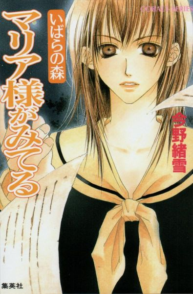
もくじ
いばらの森
期末試験と文庫本
シロイバラ
須加星は誰だ？
イブに会えたら
白き花びら
春のはい蕾
夏の温室
秋の恋情
冬の残花、そして
あとがき
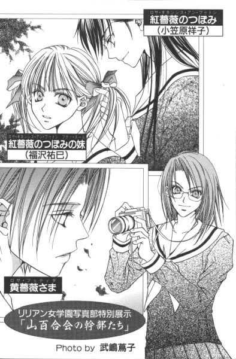
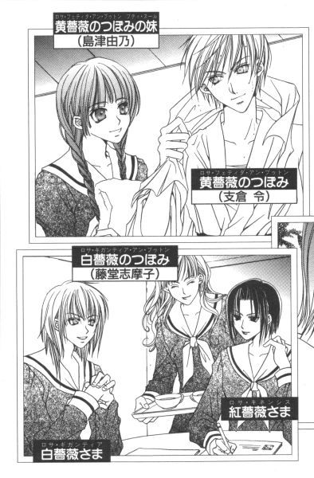
いばらの森
「ごきげんよう」
「ごきげんよう」
さわやかな朝の挨拶が、澄みきった青空にこだまする。
マリア様のお庭に集う乙女たちが、今日も天使のような無垢な笑顔で、背の高い門をくぐり抜けていく。
汚れを知らない心身を包むのは、深い色の制服。
スカートのプリーツは乱さないように、白いセーラーカラーは翻らせないように、ゆっくりと歩くのがここでのたしなみ。もちろん、遅刻ギリギリで走り去るなどといった、はしたない生徒など存在していようはずもない。
私立リリアン女学園。
明治三十四年創立のこの学園は、もとは華族の令嬢のためにつくられたという、伝統あるカトリック系お嬢さま学校である。
東京都下。武蔵野の面影を未だに残している緑の多いこの地区で、神に見守られ、幼稚舎から大学までの一貫教育が受けられる乙女の園。
時代は移り変わり、元号が明治から三回も改まった平成の今日でさえ、十八年通い続ければ温室育ちの純粋培養お嬢さまが箱入りで出荷される、という仕組みが未だ残っている貴重な学園である。
季節は冬。
街はクリスマス・ムード一色。
それなのに。
中高生には楽しい楽しいイベントのその前に、まるで浮ついた気分を戒めるかのような、お約束の試練が待っているのだ。
クリスマス、ってイエズスさまのお誕生日じゃなかったっけ？
せめてキリスト教関係の学校だけでも、二学期の期末テスト廃止したらいいのに。そうしたら、きっとみんなで楽しくお祝いできると思うんだけれど。
でも空は、生徒たちのため息を包み込んでしまうほど、今日も大きくて澄んでいるのだった。
私は、それを静かに、そして永遠に眠らせることにした。
だからその森は、今でもいばらを堅く張りめぐらせ、外部からの侵入を拒み続けているのだ。
たぶん、私が死ぬ、その時まで。
期末試験と文庫本
１
何となく、それらしき気配は感じていた。
それは、学期末試験が始まって間もなくからだった、と思う。でも「今、思えば」ってくらいのものだから、たいして当てにならないけれど。
その時はそんなに気にならなかったし、第一、試験前っていったらそれどころじゃないわけだから、「何だろう？」くらい考えただけで、すぐ頭のスイッチは違うチャンネルに切り替わってしまったんだと思う。だって、やっぱり『成績常に平均値』の生徒であれば、クラスメイトのコソコソ話より日本史の試験範囲や化学記号の暗記術とかの情報の方に耳が傾いてしまうのは、当然のことでしょう。
「脱、平均点」が目標であるのはもちろんだけれど、油断すると平均を下回る結果になる。真ん中っていうのは、真ん中なりに厳しい立場なのだ。
（やっぱり、 紅薔薇のつぼみの妹の成績が悪いっていうのはまずいよなぁ......）
一年桃組三十五番、福沢祐巳は密やかに重いため息をついた。
リリアン女学園高等部の生徒会である山百合会の幹部、そしてそれに連なる生徒たちは、おしなべて成績優秀者が揃っている。ただでさえ、容姿のコンプレックス背負って生活しているっていうのに、それに成績までが加わるのはさすがに痛い。
普段からちゃんと授業を受けていれば、試験勉強など必要ない。秋にめでたく姉妹の契りを結んだお姉さま、小笠原祥子さまは言うけれど、それは今のところ無視して試験の合間の休み時間、特急電車のように参考書の上に視線を走らせる。
何もしなくてもトップ争いできる人とは、そもそも頭のできが違う。凡人はひたすら勉強あるのみ。少しでも由乃さんや志摩子さんとの差を縮めないと、お姉さまの立場だってあるんだから。
「──白薔薇さまが......」
（白薔薇さま？）
そんなこんなの状況ではあったが、さすがにクラスメイトの話し声に祐巳は反応した。
白薔薇さまっていったら、やっぱりあの白薔薇さまのことだろうか。
（顔が日本人離れしていて、美術室の石膏像みたいなくせに、中身は中年おやじで抱きつき魔の、それでいて下級生からはえらく人気者という、あの白薔薇さま？）
まあ、彼女以外に白薔薇さまがいたらむしろ問題なんだけれど。
何かと話題の方だから、普段からその呼び名を耳にする機会はもちろん多い。なのに何で引っかかったかっていうと、その響きがいつものピンクのハートマークつきのものじゃなくて、もっと秘密めいた雰囲気をたたえていたせいだ。それが、ここのところの何だかわからないひそひそ話の波長とぴったり一致した。
（いったい、何なんだろ）
顔を上げて先ほどの声の漏れている方角に顔を向けると、桂さんを含む数人の生徒が固まって小声で話をしている。
桂さんっていえば、祐巳と同様、試験前には真剣になって参考書めくるタイプだっていうのに、どういうわけか今回は噂話なんぞに精を出している。目前の試験より好奇心、ってか。確かにそういうところあるよな、桂さんって。
しかし。
（わかんないなぁ）
桂さんたちの話題は、桂さんの手にしている文庫本の内容らしい。様子を見た感じで、それくらいのことはわかるんだけれど。
（......）
祐巳は、持っていたシャーペンを教科書の上に置いて首を傾げた。どうして、文庫本の話題に白薔薇さまが登場するんだ？
（桂さんが手にしている本が、白薔薇さまから借りたものだとか）
しかし、これが志摩子さんなら白薔薇さまの妹だからわかるけど、ほとんど接点がない桂さんだと、少々無理がある。
それとも本は落とし物で。中に書いてあった持ち主らしき名前が、白薔薇さまの名前だったとか。
（その線あり、かも）
呼び慣れていないものだから、白薔薇さまの本名に自信がなくて、桂さんがクラスメイトに確かめた。そういうことなら、考えられないこともない。
（でも、さ）
だったら、誰よりも先に志摩子さんに聞くはずで。おまけに、数日前からひそひそ語ることじゃない。
志摩子さんの席をそっと覗き見ると、彼女は雑誌でも眺めるように教科書のページを優雅にめくっていた。さっきの「白薔薇さまが」っていうの、聞こえなかったのかもしれない。
（──って、そんな場合じゃなかった！）
あわてて教科書に視線を落としたけれど、一度気になったことは換気扇のガンコ汚れのように祐巳の頭から拭い去ることができなくなってしまった。こんな性格だから、「万年平均点」から脱することができないんだ。成績が常にクラスで一、二という志摩子さんでさえ、それに安んじることなく教科書開いているっていうのに。これじゃ、差が縮まるどころか開く一方だ。
もう、日本史捨てちゃおうかな、なんて思っても、目の前にお姉さまの怖い顔がちらちら浮かんで、実行できない。
こういう時に、分相応のお姉さまだとずいぶん楽なんだけれど──。桂さんたちは、まだ固まって何やら話している。
教科書のちょうど開いていたページに載っていた「小谷の方」は、祥子さまに少し似ていた。
２
「あー、残念ながら私もまだつかんでないんだわ、それ」
蔦子さんは、腕組みしながら「うんうん」とうなずいた。
「そうなの？」
「何か事件の匂いは感じているんだけどね、まだ範囲は狭いわ」
今日の試験も無事終わったというお昼過ぎ。祐巳はやっぱりどうにも気になって、蔦子さんを捕まえて意見を聞いた。
桂さんに聞けばいいんだけれど、何だか祐巳を避けるように下校しちゃうし。気づかないうちに、志摩子さんも見失ってしまったし。そこに蔦子さんを見つけたものだから、ドンピシャリって感じだった。こういう時の蔦子さんは頼りになる。何ていっても、新聞部の隣に部室を構える写真部。些細な事件であっても、結構把握しているしね。
「範囲が狭い、って？」
「今のところ、クラスの中の一部だけで内緒話している程度だと思うんだな。よそのクラスはどうか知らないけれど、うちのクラスより盛り上がっていることはないはず。いくらなんでも、そこまで広まっているのに新聞部の部長が動かないはずはないでしょ？」
「──そうね」
「そういうこと。じゃ」
「あ、待って」
さすがの蔦子さんも試験期間中の部活は自粛するということなので、祐巳はあわててスクールコートを着込んで蔦子さんの後を追った。このところ盛んだった祥子さまとの下校タイムも、試験期間中につき自粛であるからちょうどいい。道すがら、もう少し話を聞きたい。
祐巳のクラスだけで広まった無責任な噂なら、お姉さまに相談して大事にするわけにもいかないし。真相をつかんだら案外単純な誤解だった、なんてことあるかもしれないし。
「その線はなしだと思うよ」
下足箱から靴を取り出す祐巳にお決まりのカメラを向けながら、蔦子さんはサラリと言った。
「なし、って？」
「祐巳さんさ。桂さんの持っていた本が白薔薇さまの物かも知れない、って思っているらしいけれど、その線だけは消えたってこと」
「どうして？」
靴のスナップを留めながら祐巳が尋ねると、ちょっと屈んだそのポーズがいたく気に入ったらしく、蔦子さんは何回かシャッターを切っていた。
「ちょっと、蔦子さん」
「失礼。ちょっと夢中になっちゃって......。で、何だっけ？」
「だから──」
「ああ、そうか。白薔薇さまの本じゃない、って理由だった。......だって、現物見たんでしょう？」
「文庫って以外はわかんなかった、けど」
カバーかけてなかったから表紙はチラッと見えたけれど、タイトルまではさすがに確認できなかった。
「表紙見て、わかんなかったんだ。ふーん。祐巳さん、その手の本読まないのか」
「その手、って？」
「ちょうどいい。寄り道しよう」
「え？」
昇降口出たところで、蔦子さんは祐巳の腕を引っ張って、道を斜めに横断した。
「と、図書館？」
「そ」
「どうして」
「口で説明するより、現物見せた方が手っ取り早いでしょ？この場に 黄薔薇のつぼみでもいたら、図書館に寄る必要はないんだけれどね」
「......？」
なんで、そこで令さまが出てくるんだろう──。もう祐巳の頭の中は、こんがらがった糸屑みたいに、収拾不能に陥っている。
もしもし、蔦子さん。確か話題の人は、白薔薇さまじゃありませんでした？
「いいから、いいから」
意味不明のつぶやきには解説も入れてくれず、蔦子さんは元気よく曇りガラスの扉を押すと、怪訝な表情の祐巳を無理矢理図書館の中に押し込んだ。
扉一枚隔てただけで、空気はまるっきり変わるものだ。
図書館って何ていうのかな、やわらかくて重い空気がゆっくり漂っている感じ。床とか、壁とかの材質のせいかな。校舎の中だと、音楽室にちょっと似ている。でも、それより遙かに重厚。
「何ぼんやりしているの。図書館入るの、初めてじゃあるまいし」
蔦子さんは正面の事務所に詰めている司書の先生に一礼すると、祐巳の腕をつかんで左手の観音扉を手前に引いた。すると。広いスペース、高い天井、本の独特の香り、やわらかい照明。中学部・高等部の閲覧室が現れる。
「ええっと。どの辺りだったかな」
目的の書棚に向かって、蔦子さんはどんどんどんどん進んでいく。もちろん、祐巳の腕をつかんだままだ。
「何だか私、連行されているみたい」
「不満だったら、さくさく歩く」
「......はぁい」
試験期間中のせいもあるのだろうか、閲覧室には思ったより多くの生徒が残っていた。ただし、書棚や貸し出しカウンターなどの側はガラガラ。逆に机はすべて満員状態。皆、勉強目的で利用しているようだった。
「ここだ」
蔦子さんが突然止まったのは、文庫がたくさん詰まった棚の前だった。本棚ってしまう本のサイズによって奥行きとか高さとかが違うんだ、って祐巳はあらためて感じていた。壁際にデーンと収まっている百科事典の棚と文庫の棚って、力士と新生児くらいのギャップがある。
「祐巳さんが目撃した本って、こんな感じだったでしょ？」
無造作に取り出された一冊を見て、祐巳は大きくうなずいた。淡いピンクの花模様が印象的な、とてもきれいな表紙。
「すごい、蔦子さん。タイトル見えてたの？」
「──わけないでしょ。私の視力は、眼鏡で矯正したって両眼とも〇・七よ」
なるほど。トレードマークの縁なし眼鏡は、ポーズでかけているわけじゃないようだし。だったら、どうして、っていう祐巳の疑問を解決すべく、蔦子さんは取り出した文庫が収まっていた棚からもう二冊抜き取って「ほら」と祐巳に手渡した。
「あれ？」
それもこれもあれも、全部同じに見えた。桂さんが手にしていた、あの文庫。でも、よく見ると全部タイトルが異なっている。
「表紙が、全部一緒なの？」
「色違いで四色くらいあるんじゃなかったかな。本当に知らないんだ？」
「うん」
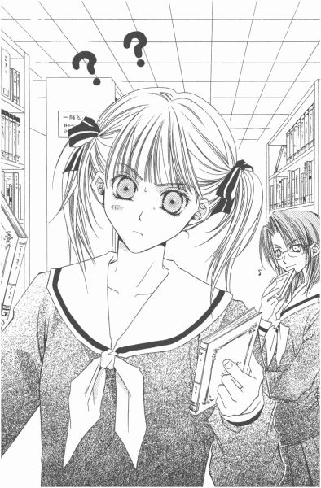
「コスモス文庫。平均的な女子高生である祐巳さんがご存じないとは、ちょっと意外だわ」
蔦子さんは、ニヤニヤ笑って祐巳を見た。
珍獣でも発見したみたいに見ないで欲しい。平均的ったって、良くも悪くも目立たないという意味にすぎないんだから、当然苦手分野だってある。
聞けばコスモス文庫っていうのは、宮廷社という出版社の少女小説を専門に扱った文庫の種類であるらしい。正確にはすべての表紙がまったく同じというわけではなく、ピンクの他に黄色や青や白といった色で、ジャンル別に色分けされているという。
（それにしても、少女小説って普通、コミックスみたいなイラストで華やかに表紙を飾っているイメージあったけれど、違うのかな）
「祐巳さんさぁ。バリバリの少女小説でありながら、コスモス文庫がイラストをバーンって全面的に出さないわけを知りたくない？」
読心術まで身につけたか、蔦子さん。
「確かに、イラストは大切よね。年若い乙女たちが夢みる作業を、そっと手を添えてお手伝いしてあげるんですものね」
「......」
蔦子さんも十分「年若い乙女」に当てはまる年齢であるのになぁ、と祐巳は思った。何だか、十も二十も年上の人みたいな言い方だ。
「それに初めて読む少女たちにとって、イラストは書かれている内容を知る手がかりになるでしょ？作家の名前を知らなくても、イラストの第一印象がよければ手にとってくれるかもしれないしね」
「あの......、蔦子さん──」
何だか専門的な話になってきた。変に弁が立つから、一度語りだした蔦子さんは坂道を転がる雪玉になってしまう。時間が経つほど膨らんで、加速度を上げながらどこまでもどこまでも転がっていくのだ。
「表紙のイラストが大切なのはわかったわ」
祐巳は相づちをうつタイミングで、かろうじてそれだけ言った。今のうちに、一時停止させておいた方がいいと判断したから。
「表紙だけじゃないのよ、中身もほら」
蔦子さんは文庫をパラパラめくって、中を祐巳に示した。だめだ。一時停止してちょっと方向転換したかと思うと、また転がっていきそうな気配。
「中身もすべてイラストなし。なぜかというとね──」
ゴロゴロ、ゴロゴロ。
祐巳は観念して、蔦子さんのお説を受け入れることにした。下手に口挟んだところで、蔦子さんに別の話題を提供するだけだと悟った。最初にネタを振ったのはこちら。お腹が空いたからって、勝手にシャッター閉めてさよならするわけにはいかない。
蔦子さんの言葉をすべて並べると長くなるので、要約すると、つまりコスモス文庫は大人が読める少女小説を目指している、というのだ。もしくは、大人びた少女の味方をする文庫、とか。
通勤通学それから休み時間など、人前で読書する人は結構多い。しかし、自分が何を読んでいるかはあまり知られたくないものだ。
普通の文庫本なら、チラリと見られたくらいじゃ本のタイトルまでは判別できない。けれど少女小説の場合は、一ページまるまる使ったイラストが時々現れてしまう。イラストで何がわかる、ということはあるが、少なくとも少女小説であることはわかってしまうし、出てきたイラストが男同士のラブシーンだったりしたら、やっぱりあまり都合のいいものではない。
そこでコスモス文庫は、思い切ってイラストを排除した。内容は文庫にかけてある帯のキャッチ・コピーと、表紙を開いた所に書かれたあらすじにたより、そして分野によって色わけして目安にした、ってことだ。ボーイズ・ラブ系はブルーとか、そういった約束ごとをつけたってわけ。コスモス文庫の存在を知らない人は、カバーの色の違いだって知らないだろうし、知っている人になら見られたってあまり気にならないだろう。それすらも気になる人はブックカバーをかければいい。
「......だから、桂さんが持っていたのがどの本だったかはわからないわけよ」
たっぷり十分間語った蔦子さんは、やっと話を元の位置近くまで戻してくれた。イラストがない、表紙が同じ、ではコスモス文庫ということは間違いなくても、どの本だったっていう断定ができないのだ。──やれやれ、それにしても長かったな。
「でもって、白薔薇さまの所有物じゃないってことは確定。あの方、小説は読まないから」
「白薔薇さまが小説読まないって、どうして知っているの？」
「今年の五月くらいだったかな、『リリアンかわら版』にインタビュー記事が載っていたわよ。あまり小説とか漫画とか読まないんだって」
「ふうん」
高等部に入学して間もなくなんて、祥子さま以外に興味なかったから全然記憶にない。そういえば、学校新聞である『リリアンかわら版』にしっかり載っていたっていう、令さまと由乃さんが従姉妹だって事実も、つい最近まで知らなかったんだから自分の事ながらおめでたい性格だと思う。
「あ」
そこまできて、やっと話がつながった。
「それで、さっき令さまが出てきたんだ」
「そういうこと」
令さまはボーイッシュな外見に反比例して、中身が女の子女の子している。愛読書が少女小説全般という話だから、コスモス文庫にも詳しいだろう。
「 黄薔薇のつぼみだったら、もしかすると推理できるかもしれないけれど。人の噂話とか、そういうのにはちょっと弱いタイプだから、どうかなぁ」
蔦子さんってば、カメラ小僧だけあってさすが人を見る目が肥えている。
確かに祐巳も、一本気な令さまに噂の真相を尋ねるのは気が重いなぁ、と思っていたところだったのだ。
３
その、令であるが。
二人の子羊たちが図書館で顔をつきあわせていたその頃、真面目に数学の教科書と問題集を開いていた。
学校と家が近いというのは、何とも幸せなことである。皆がバスや電車に揺られている間に自宅に着いて、お昼ご飯までも済ませてしまうことができるのだから。
徒歩十分に慣れてしまった身に、片道一時間半なんて耐えられるはずはない。そんなこともあって、ルックスとは正反対のお嬢様学校に通って早十二年と九ヶ月。この分では、たぶん高等部卒業しても、リリアンの大学や短大に進むんだろうな、とぼんやり思っている。
「それにしても、令ちゃんの料理って最高よね。このホットサンド、中のチーズがほどよくとけて、コーンクリームコロッケとキャベツの千切りに絶妙に絡み合ってて、もう最高」
令がリリアンに留まっているもう一つの原因、──妹で従姉妹の由乃がホットサンドの最後の一片を口に入れて、ランチメニューを絶賛した。
「お世辞言っても、何も出ないよ。ほら、食べ終わったんならさっさと教科書開く」
「お世辞なんかじゃないってば」
言いながら、由乃は渋々とトレーを床に置いて、代わりに教科書をテーブルの上に出した。
ここは、令の部屋。
今日はデパートの歳末大売り出しの初日とかで、二人のお母さんが連れだって出かけてしまったものだから、由乃を呼んで一緒にお昼を食べることにしたのだ。ちなみに、お母さん同士は別に血のつながりはないのだが、もともとリリアンの同級生だったからいまだにすごく仲がいい。
仲がよすぎてお友達のお兄さんと結婚しちゃった、って。おまけに隣に住んでしまうなんて、仲がよすぎるにもほどがある、ってお母さんのことあきれていたけど。
今になって、なんとなくわかってきた。由乃とは一生隣同士で住んでいたい、って令自身思うようになったから。ああ、もう二度と仲違いなんかしたくない。
──なんて感傷にひたっていると。
「令ちゃん」
由乃のドアップ。
「わ、びっくりしたっ！」
ちゃぶ台風テーブルに手をついた由乃は、内緒話をするごとく身を乗り出して囁いた。
「令ちゃん、あのね。今思い出したんだけど、今日クラスでね──」
見慣れているはずなのに、ドキドキしてしまう。由乃って、こんなに目が大きかったんだ。
「......由乃。雑談だったら、後でね」
照れ隠しに、そっけなく言った。
「明日の数学のテスト、めちゃめちゃ危なくって私に補習頼んだんじゃないの？」
「でもね、令ちゃん」
「食事付きの家庭教師なんて、普通いないよ」
「はあい」
実は令がさっきから開いていた教科書っていうのは、去年使っていた「数Ⅰ」で、由乃のためにわざわざ棚の奥から探し出してきたものだった。由乃は秋に手術入院していたから、授業が大幅に遅れている。お昼を一緒に、というのにはその後の勉強会も含まれていた。やっぱり「お姉さま」としては、可愛い妹が赤点地獄に落ちていくのをみすみす見過ごすわけにはいかないのだ。
「取りあえず、どこまでわかっているか知りたいから、この練習問題解いてみて。それから......」
由乃を見れば、三つ編みの先をいじりながら、不完全燃焼って顔をしていた。いったい、誰のために貴重な時間つぶしていると思っているんだか。
やれやれ、と令は教科書を閉じた。
「で、何？」
「え？」
「さっきの話、聞くよ。その代わり、それが済んだらちゃんと勉強に集中。いい？」
言ったと同時に、由乃の表情がぱっと明るくなった。
「それでこそ、令ちゃん」
「私って、つくづく甘いよなぁ」
でも、こんな可愛い顔をされて、心が動じない人間なんかいないと思う。天使のほほえみ。人間、自分にないものを求めるっていうけれど、それってかなり信用できる。
「あのね、うちのクラスの話なんだけれど。一部で変な噂話がもち上がっているのね」
嬉々として、由乃は話しはじめた。
「変な噂話？」
嫌な予感がする。噂話なんていうのに、ろくなものはない。一ヶ月ほど前、「黄薔薇革命」なんて騒がれて、大変な目にあった。黄薔薇さまであるお姉さまの妊娠疑惑にしたって、根も葉もない噂話が一人歩きして、一部の生徒たちには半ば真実として語られていたということだし。大体、どうして親不知と妊娠が結びついたのかさっぱりわからない。
「あっ、私や令ちゃんは今回関係ないからね」
「関係あったら大変。......で？」
ひとまずほっとして、話を先に進めるように促す。由乃はそこで、少しだけ声をひそめた。
「今度は、白薔薇さま」
「あ？」
「だから、白薔薇さまが噂の主役なの」
「......」
十月に紅、十一月に黄ときて、今度は白。お約束のようによくできた話だ。もしや新聞部が仕組んだことかとも思ったが、それならば「リリアンかわら版」でスクープ記事にする方がよっぽどインパクトがある。あの部長なら、絶対にそっちを選ぶはず。
「でも。白薔薇さまだったら、何してもそれほど意外じゃないけどなぁ」
飄々としていて、軟派で、怖い物知らず。余程のことをしてくれなければ、「あの方ならしそうなことね」で片づけられてしまうだろう。
「じゃ。自伝的小説っていうのは？」
「何、それ」
「例えばね、白薔薇さまが隠された過去を赤裸々に綴った告白本を出したとするじゃない？それって、やっぱりすごいことよね。騒ぎになると思わない？」
「......出したの？」
「だから、それが『噂』なんでしょ」
「それ、嘘でしょ？」
「ひどーい。令ちゃん、私のこと疑っているの？」
「いや、そうじゃなくって」
その噂が真実じゃない、っていう意味で。でも、勘違いした由乃は興奮して、あろうことか側にあったクッションを令めがけて投げつけてきた。
「いくら補習が嫌だからって、私、嘘ついてまで逃げようとは思わないわよ」
「だから、誤解だって」
これくらい元気になったのだと喜ぶべきなのかもしれないが、さすがに流血ざたにまでなるのはまずいので、お皿ののったトレーを持ち上げかけた由乃を、両手で止めた。
「一年生の由乃たちは知らないと思うんだけれどね」
不審顔の由乃に、令は静かに告げた。これは、説明しないわけにはいかない。
「白薔薇さまの過去っていうのは、......タブーっていうのかな、あまり触れないようになっているの」
「どういうこと？」
「無言の了解って感じで。事情を知っている人たちが、みんな口をつぐんで守っているみたいなところがある」
「何があったのかしら」
「さあ......、私は一年生だったし。詳しいことは教えてもらえなかった」
でも、去年のクリスマス前後に白薔薇さまの身に何かが起こったらしいということだけは承知している。
「過去、って去年の話なの？」
「そうよ」
去年の冬を境に、白薔薇さまは変わってしまった。由乃に説明しても信じてもらえないかもしれないが、それまでの白薔薇さまは今の白薔薇さまからは想像できないほど、クールな、悪くいえば取っつきにくい先輩だったのだ。
一人の人間をここまで変える出来事とは、いったい何だったのだろう。三学期になって、突然リリアンから消えた例の生徒と何か関わりがあったのだろうか──。いろいろ想像してはみたが、結局真相はわからずじまい。ただ相当なことがあっただろうことは、察することができた。
だから、白薔薇さまがそれだけの大事を自ら小説にしてしまうなんて考えられなかった。たぶん周囲が口を閉ざしたのも、白薔薇さまの傷をえぐるような真似できなかったからに違いないのだから。
「噂が広まれば、白薔薇さまがはっきり否定するだろうけれど。そうなる前に、無責任な噂が広がるのをくい止める必要があるね」
噂が噂を呼ぶこともあるし、手を打つんだったら早いほうがいい。
「くい止めるの、無理だと思うけれど」
「どうして？ その、誤解を生んだ出所を押さえて、対処すればいいじゃない」
「出所って、どこのこと言ってるの？ 令ちゃん」
「白薔薇さまの自伝が載る予定の本を出しているところよ。文芸部？『リリアンかわら版』の別冊だったら新聞部だし」
試験期間中だけれど、場合によっては明日発行の責任者のクラスに行って、説明と協力を求める直談判してもいいと思った。白薔薇さまには今までいろいろお世話になったのに、何一つ恩返しらしいことをしていなかったから、こういう時くらい力になりたい。
「うーん」
しかし由乃は、相変わらず難しそうな顔をしている。
「いったいどこなの」
令は、さっきとは逆に由乃に詰め寄った。
「令ちゃん、度肝抜かれると思うな」
「もったいぶらないで、はっきり言いなさい」
すると由乃は、令の本棚にぎっしり詰まった花模様の文庫を指さした。
「あれ」
「......え？」
「だから、宮廷社のコスモス文庫」
──これはもう、数学の補習どころじゃなくなってしまった。
４
翌日、噂はインフルエンザのごとく広がっていた。
確実にクラス全体にウィルスが蔓延し、もしこれが本物のインフルエンザだったら学級閉鎖だろう、ってすごい状態になっていた。
「祐巳さん、今日のテストどうだった？」
由乃さんがテーブルに頬杖ついて、尋ねた。
「だめ。勉強しようにも、白薔薇さまのこと気になっちゃって」
「私も。だったらせめて睡眠とろうと思っても、眠れないし」
「......うん」
三教科の試験が滞りなく済んだお昼すぎ。
用もないのに薔薇の館にやって来た、つぼみの妹たちは、人目がないことをいいことに、大々的なため息をついた。
明日は試験の最終日。楽しく試験休み、そして冬休みを迎えるためにも、自宅に帰って真面目に残りの教科の勉強をするべきところである。だが素直に下校しても、結局は昨日の二の舞になりそうで、こうしていつものたまり場に赴いてしまったというわけだった。白薔薇さまの噂が気になって、勉強どころの話じゃない。
「上級生、来ないね」
「令ちゃん......、じゃない、お姉さまは来るって言っていたけれど──」
噂が一番派手に広まっているのが一年生らしいから、二年三年はあまり関心がないのだろうか。いつもだったら真っ先に薔薇の館に集合して、対策を検討するような人たちなのに。
「志摩子さんは」
由乃さんが思い出したように、顔を上げて祐巳に尋ねた。ほら、志摩子さんは祐巳と同じクラスだから。
「私が教室出る時には、もういなかった」
「そう」
二人は、同時にまたため息をついた。
一年生って、こういう時何もできない。たかだか一年や二年早く生まれただけ、って白薔薇さまはよく言うけれど、その一年や二年の差って、やっぱりすごく大きい。でも、あと二、三年生きてみたところで、あの超人たちのようになれるとはとても思えないから、やっぱり生まれもった資質の差なんだろう。
「ん？」
階段を上る鈍い足音が聞こえてきた。最初のうちはわからなかったけれど、だんだん足音にも特徴があることを知った。
「令さまかしら」
「そうかもしれないわね」
修業が足りない一年生たちは、足音にいろいろあることは理解していても、誰の音かまでは把握できていなかった。
老朽化した階段と床を踏みしめるギシギシという音は、祐巳たちのいる二階の会議室という名のサロンの入り口の前で止まった。
「誰か、いて？」
ビスケットみたいな扉を開けて入ってきた人物は、背景に真紅の薔薇を背負っての登場（に祐巳には見えた）。
「お、お姉さまっ！」
「あら、祐巳。由乃ちゃんも」
いつ見ても、華やかな顔、凛々しい表情。これぞ貴族のお姫さま、って優雅な仕草で、祐巳の「お姉さま」、小笠原祥子さまは部屋の中へと進み出た。
「お、お久しぶりです。お姉さま」
って、今朝廊下ですれ違ったばかりだった。でも、祥子さまは「そうね」とほほえんで、丸テーブルの、祐巳の正面の席に腰掛けた。
「それで？」
祥子さまは背筋をピンと伸ばし、テーブルの上で指を組んで尋ねた。
「いったい、あなた方何をしようっていうの？」
祐巳は由乃さんと同時に「は？」と聞き返す。そういう祥子さまは、何をしにここに来たのだろう。
「帰ろうと思っていたら、廊下で令に呼び止められたのよ。それで、薔薇の館に行くように、って」
「で、その令さまは」
「よく知らないけれど、一年生に捕まっていたわよ」
祥子さまの言葉にかぶるように、グワッシグワッシと階段を上る音が聞こえてきた。今度は、間違いなく令さまであろう。
「遅くなって、ごめんっ」
ベリーショートヘアの前髪を立たせ、おでこ全開で令さまは姿を現した。生徒がほとんどいないのをいいことに、廊下から走ってきたらしい。
「もう少し、静かにできないのかしら」
祥子さまが独り言のようにつぶやき、由乃さんは汗びっしょりの令さまの額を、ハンカチでそっと拭いた。
「ミルクホールに寄ってみたんだけれど、やっぱり仕入れの量が少ないみたいでパンは売り切れだった」
でも、って令さま。クマさんの可愛い袋を、テーブルの上に置いた。
「何、それ」
由乃さんが聞いた。
「さっき一年生からもらったの。手作りのお菓子らしいよ、みんなで食べよう」
きゃーって、奇声を上げたのは祐巳だけだった。
「じゃ、さっそくお茶いれますね」
そう言いながら、素早く席を立った。正直いって、さっきからお腹が空いて仕方なかった。今朝家を出る時には、テスト終わったらすぐに帰る予定でいたから、お弁当なんて気の利いたもの持ってこなかったし。
「試験中にカップケーキ作ってくるなんて」
由乃さんは複雑な表情していた。
そうか。そのカップケーキは、令さまがもらったもので。当然その菓子職人は、令さまに憧れている人物のはずだから。「妹」としては、やっぱりちょっと妬けてしまうのだろう。口にするのは抵抗あるかもしれないけれど、たぶん由乃さんだってお腹空いていると思うし。こういうの、ジレンマっていうのかな。
でも紅茶も配り終わって会話が再開されると、由乃さんはケーキがここにある経緯をすっかり忘れ去って、おいしく胃袋の中に納めることができた。たぶんそれは例の白薔薇さまの噂話の方が、よっぽど気になることだったからだと思う。
「私もコスモス文庫は全部読んでいるわけじゃないから、絶対とは言い切れないけれど」
と、前置きをしてから、令さまは言った。
「それらしき話に覚えがないから、たぶん新刊なんじゃないかと思うのよ」
「新刊って、いつ出たの？」
祥子さまが尋ねた。
「今日。毎月十六日発売だから」
「今日!?」
由乃さんと祐巳は、ほぼ同時に立ち上がった。
「大学の購買部に行くつもりなら、無駄だからね。さっき見てきたけれど、それらしき本、売り切れていた」
令さまの一言で、二人は即着席した。うーん、行動を完全に読まれている。
「コスモス文庫は、発売日に一冊ずつしか入荷しないんだって。開店と同時に高校生が買っていったっていうから、試験の合間の休み時間に高等部校舎からダッシュした生徒がいたんだわ」
「パワーあるわねぇ」
由乃さんが、呆れたようにつぶやいた。今、自分だって同じようにダッシュしようとしたくせして。
「じゃあ、手がかりは今のところないんですね」
「それがね、祐巳ちゃん」
令さまは、「待ってました」って感じに鞄から何かを取り出した。
「あれ？」
それは、昨日蔦子さんと一緒に図書館で見たのとそっくりな文庫本。──そう、コスモス文庫だった。
「でも、令。確か、売り切れていたんじゃなかったの？」
祥子さまが、優雅に首を傾けた。
「だから今日発売の、別の文庫買ってきたんでしょ」
「もう。令ちゃんったら、自分の買い物してきたの？」
由乃さんはあきれ果てて、「お姉さま」も敬語もどこかに飛んでいっちゃってる。
「違う、って。まあ確かに、後でこれは読もうと思っているけれど」
言いながら令さまは、文庫のページの間に挟まっているチラシを取り出した。
「『コスモス通信』？」
四つ折りされたチラシの表紙のような面に、飾り文字で大きく書かれたタイトルを読むと、令さまが「そ」とうなずいた。
それは新刊案内とか、作家の一口メモとか、そういうのが紹介されている文字通り「通信」のチラシであるという。
「そもそも、タイトルもわからないでどうやってその本を購買部で探したと思った？」
「さあ......」
そういえば、って今思うだけで、そういう疑問わかなかった。
「そこで、この『コスモス通信』が登場するわけ」
夢中になって語る令さまは、失礼ながら祐巳の目から見ると、やっぱり美少年にしか見えなかった。花寺の制服着せたらどんなにか格好いいだろうと思うけれど、中身がこのまま少女小説好きでは、どこかやっぱりアンバランスって感じだ。
「新刊案内のところ、見て。ほら、数行だけれど内容が紹介されているでしょ」
「あ、本当だ」
指さされた箇所に全員の視線が集中した。
──『いばらの森』作／須加星──
学園で過ごしたその数ヶ月は、幻だったのだろうか──。心の中のいばらの森に、セイはすべてを閉じこめた。期待の新人作家、衝撃の自伝的デビュー作！
「なるほどね」
祥子さまは小さくつぶやいた。だけれど、祐巳にはぜんぜん「なるほど」じゃなかった。どうして、それだけの情報で白薔薇さまが書いたことになるんだろう。
「祐巳。白薔薇さまの本名言ってみて」
祥子さまは、突然難問ぶつけてきた。
「えっと......。確か、佐藤──、佐藤聖」
「そうよ」
セーフ。薔薇さまたちの名前言えなかったりしたら、祥子さまに何て叱られるかわかったものじゃない。
そうそう、白薔薇さまの名前は、佐藤聖。派手な外見の割に意外とありふれた苗字だから、なかなか記憶に引っかかっていてくれないんだ。
「あ、セイだけ合ってる」
そのことには気がついたが、「だから？」って感じ。だいたい、音が同じでも漢字が全然違う。
隣の由乃さんもまだわからないらしくて、一人ブツブツ「スガセイ」とか「サトウセイ」とかつぶやいていたが──。
「シュガセイ！」
突然ひらめいたみたいで、由乃さんにしては珍しく大声出して叫んだ。
「わかったわ。須加はきっとシュガーなのよ、シュガー。祐巳さん、シュガーって言ったら？」
由乃さん、完全に舞い上がっている。
「砂糖？ サトウ......って、佐藤!?」
だから、須加星イコール佐藤聖である、と。こじつけって言われればそれまでだけれど、かなりイケている推理かもしれない。スガ、シュガ、シュガー、──でサトウ。
「でも、それだけで白薔薇さまがその小説を書いた人なんて」
「そうね、ちょっと勇み足気味だわ。だから、噂の出所は果たしてそのチラシだけかしら」
興奮気味の一年生とは対照的に、祥子さまはあくまで冷静に淡々と言葉を発した。
「って言われますと？」
祐巳は表面だけでも繕おうと、少し顔の筋肉を整えて聞き返した。
「読んでいないから、まだ何とも言えないけれど。......例えば小説の内容が、白薔薇さまの過去と酷似しているとか。それだったら、白薔薇さまが須加星だっていう根拠になるわけだし」
「あの、でも。発売日は今日なんでしょう？ だったら、三、四日前からうちのクラスの生徒が噂話していたの変ですよね？」
発売していなければ、詳しい内容まではわからない。それに一年生は、去年白薔薇さまの身に何が起こったのかなんて、ほとんど知らないはずだった。
「発売日前に手に入れる方法があるんだな、これが」
令さまは腕組みをして得意げに言った。
「神田あたりの、大きな書店行ってごらん。コミックスや文庫が、発売日の三日や四日前には店頭に並んでいるから」
「神田、って。古本屋さんとかたくさんある、あの神田ですか？」
「そう。結構有名な話」
それが本当なら、地方の山奥とか、小さな島なんかに住んでいる人間が地団駄踏んで悔しがりそうな話だ。東京って便利だな、なんて東京に住んでいる人間が感心してどうする。
「じゃ桂さんは、発売日前に神田かどこかで買ってその『いばらの森』を読んだってことですか」
「その、桂さんのことはよく知らないけれど、たぶんそういうことなんじゃない？学校では大っぴらに話せなくても、噂は上級生たちから耳に入ることだってあるだろうし。祐巳ちゃんだって、二つ三つ年上の実のお姉さんがリリアンに通っていたら、何となくでも知っていたんじゃない？」
「でも私、令ちゃんから聞いていない」
由乃さんが、ちょっと拗ねたように口を前に突きだした。
「だから、一つ上の私たちくらいじゃほとんど知らないことなの。ちゃんと二つ三つ上って言ったでしょ？」
あの。お二人さん、今は痴話げんかしている時じゃないと思うんですけれど。
呆れながらも、ちょっぴりうらやましかったりして。だって祐巳は、こんなふうに祥子さまに拗ねてみせたりできなかったから。
祥子さまの方をちらりと見ると、ちょうどいいタイミングで目があってしまった。祐巳はまるで盗み見を見られた子供のようにどぎまぎしてしまった。
「でも、試験期間中だっていうのに、わざわざ神田まで行って文庫を買って、それ読んでしまうってすごいわよね」
由乃さんは、「余裕あるのね」なんてほほえんだけれど、それってちょっと違うんじゃないかな。桂さんたちのそれは、決して余裕なんていう代物ではなくて──。
「逃避、でしょう」
令さまは、祐巳が思っていたのと同じことをズバリと言いきった。
「とうひ？」
不思議な言葉を耳にしたというように、祥子さまは首を傾げる。まさか祥子さまともあろうお人が「逃避」という言葉を知らないなんてこと考えられないけれど、話を進めるために祐巳はその意味を説明した。
「逃避、っていうのはですね。やらなければならないことがありながら、何か他のものに逃げてしまうという現象です」
祥子さまは、「そんなことくらいわかっているわよ」という顔をした。そこに、令さまの助け船。
「このカップケーキなんか、まさにその典型でしょ。私だって、たまにだけれど、編み物に逃げたくなるもの」
「私がわからないのは、『やらなければならないこと』っていうのが何を指しているか、ってことよ」
「何か、って──」
試験勉強じゃないですか、それは。祥子さまを除く三人は、思わず顔を見合わせた。
（祥子さま、って......、まさか......）
祐巳の予感は当たった。
お姉さまは、喩えでも何でもなく、本当に試験勉強というものを一切しないお人であったらしい。
５
このまま新たな情報もなく、薔薇の館で思案しているだけでは何も解決できないということで、四人は今日のところは解散することにした。
誰もが、その文庫の現物にお目にかかっていないんだから（正確には、祐巳は桂さんが持っていたそれらしき本を遠巻きで見ていたはずなんだけれど）、今のところあくまで想像にすぎない事件を「あーだ」「こーだ」こねくり回しても仕方ない。
すでに三時を少し回っている。
家の側の書店で『いばらの森』を購入するという令さまと由乃さんに校門で別れを告げ、祐巳は祥子さまと二人バスでＭ駅に向かった。
駅ビルの中には、大きなブックセンターが入っている。コスモス文庫の品揃えも豊富だから、いくら噂の本だとはいえ発売日に完売するようなことはないのではないか、という令さまのアドバイスがあったから。
ガランとしたバスの中で、並んで座った祥子さまは無口だった。
「本当に、白薔薇さまなのでしょうか」
「......違うんじゃない」
「何か、根拠でも？」
「別に」
話を振ってみても、こんな調子で一向に会話が進まない。挙げ句の果てには、黙って窓の外なんか眺めちゃうものだから、まるで自分がそこに存在していることが迷惑なのではないかと、祐巳は変な心配をしてしまった。
バスは、ロータリーを大きく回って駅前の降車場に止まった。
駅の階段を上り、改札口を横目で眺め、祐巳と祥子さまは駅ビルの中に入った。三階に、目的のブックセンターはある。
ガラス扉を開けるときもエスカレーターに乗るときも、相変わらず祥子さまは無口だった。
（私、何か気にさわるようなこと言った......？）
縦に並んだ二人の姿が、エスカレーター脇の鏡ばりの壁に映っていた。
よくよく見ると、祥子さまは別に不機嫌という感じではなく、考え事中というようだった。そういう時に「考え中」っていう立て札が頭の横から出ていれば、こんなふうに悩まなくてもいいのに。
（──なーんてね）
そういうくだらないことなんかは、絶対に考えることないんだろうな、祥子さまの場合は。
ワンフロアのほぼ半分を占めるブックセンターは、エスカレーターを上りきる前から本屋の雰囲気をかもし出していた。手前の、雑誌のコーナーから店内に入り、祥子さまはどんどん中を進んでいった。
「少し、お尋ねしたいのですが」
これぞ淑女、という完璧なフォームで、祥子さまは文庫の整理をしていた男性店員に声をかけた。
「コスモス文庫の新刊は、どの辺りにあるのでしょう？」
むやみにぐるぐる徘徊するなんて、祥子さまの行動パターンにはないのだろう。相変わらず、凛々しくて格好よくて、おまけに「これでもか」というほど美しい。
「あ......、は、はい。コスモス文庫ですねっ」
心なしか、店員さんの声は裏返っていた。モデルさんでもなかなかいないほどの美人が、顔を上げた途端現れたんだから仕方ないけれど。
（なーんて。妹ばか、丸出しだぁ......）
心の中で一人突っ込み入れて、歩き始めた祥子さまの後をついていく。その前を歩く店員さん、今度は心なしではなくて、耳が真っ赤だった。
「こちらです」
文庫の棚とコミックの棚の間の、ジュニア小説というプレートが下がっているコーナーに、二人は案内された。主に鮮やかなイラストを表紙にした、華やかな雰囲気の文庫が平積みでびっしりと並べられている。そこが少女小説の新刊コーナーらしい。
「ありがとう。それで、今日発売の『いばらの森』は──」
祥子さま、すごい。自分では手を触れずに、すべて店員にお任せするつもりだ。何か、老舗の呉服屋さんで反物出してもらったり、高級宝飾店でガラスケースの中からダイヤの指輪出してもらうみたいな貫禄。セルフサービスで品物選んでレジで精算、っていう一般的なシステム、まさかご存じないわけはないだろうけれど。
「こちらでよろしゅうございますか」
（......ああ、とうとう店員さんの言葉つきまで変わっちゃったよ）
祥子マジック。この店員さん、まだ二十歳前くらいに見えるんだけれど、これまでの人生の中で「よろしゅうございますか」という言葉、一度でも使ったことがあっただろうか。
「それ、二冊いただきます」
祥子さまは告げた。自分の分と祐巳の分で二冊、という意味だろう。
「はい、ただいま──」
言いかけた店員さんの顔が、急に曇った。見れば、平積み文庫の丘が一カ所だけ谷間になっていて、棚の天板らしき木目が文庫一冊分のサイズで見えていた。そこが、彼が先ほど『いばらの森』を取り出した場所だったのである。
「売り切れ、ですか」
察した祥子さまが尋ねる。
「申し訳ございません」
何もそこまで、というほど店員さんは頭を低く下げた。
「仕方ありませんわ」
ならば一冊でいい、と祥子さまは店員さんに言って、それからおもむろに祐巳を振り返った。
「悪いけれど、祐巳。あなたは別の店で購入してちょうだい」
「あ、はい」
まあ、祐巳の場合は、祥子さまよりもっと気軽に本を買えるからいいんだけれど。でももしかして、本棚の下にある引き出しにストックがあるのではないか、なんてちょっと考えたりもしたけど外れだった。
「二時間ほど前に補充したのに、もう完売なんて......」
店員さんの頭の回りに無数のクエスチョンマークが飛んでいたから、本当にすごい勢いで売り切れてしまったのだろう。その理由、祐巳にはわかる。たぶん、下校途中のリリアンの生徒たちがピラニアのように買っていったに違いない。
（仕方ありませんわ）
心の中で、祥子さまの口まねしてみた。『いばらの森』は、帰りのバスを途中下車し、別の本屋に寄って手に入れるしかないようだ。
レジで会計を済ませた祥子さまは、歳末大バーゲンなんていうショーウィンドウには目もくれず、真っ直ぐ改札口のある二階へと下りていった。白薔薇さまのことはもちろん気になりながらも、このままお姉さまと一緒にショッピングできたらいいな、なんて心のどこかで思っていた祐巳は、だからちょっとガッカリした。
まあ、学校帰りだし、制服だし、立ち寄りは本屋くらいがギリギリの線だってわかっているけれど。公認の姉妹だっていうのに、二人でどこかへ遊びにいくなんてこと全然ないものだから。こういう時に、ちょっとくらい楽しいひとときが欲しいって思うの、それほど我がままじゃないと思う。
「......祐巳」
改札口の手前で、いつものように祐巳のタイをそっと直しながら、祥子さまは少しだけ自嘲気味に言った。
「やめておいた方がいいのかしら」
「え？」
前置きがなかったから何のことかすぐにわからず、祐巳は目を瞬かせた。
「やめる、って何を......、ですか」
恐る恐る聞く。まさか祥子さまったら、姉妹の関係をやめるなんて言い出すんじゃないだろうな。
「これを読むの」
「はぁ？」
その「これ」が、祥子さまの学生鞄に納まっている買ったばかりの文庫本を指しているってわかって、尚さら驚いた。
だって。
「読むために買ったんでしょう？」
「......そうだけれど」
妹に諦めさせてまで手に入れたラスト一冊の本を、どうして今さら読むか読まないか迷ったりするのだろう、祥子さまは。
「白薔薇さまの過去を、好奇心のみで勝手に掘り起こしているような気がしてきたのよ」
「はあ」
「あなた、どう思って？」
どう、って。
（いつも自信満々のお姉さまに、私の意見なんて私の意見なんてっ──）
絶対に参考にならないと思います。
逃げ出したくなるところを懸命にこらえ、上目遣いでそっと祥子さまの顔を見ると、祥子さまはまだ祐巳の答えを待っていた。
「あの、ですね」
仕方なく、重い口を開く。お姉さまの質問を無視できるほど、祐巳は大物ではない。
「私だったら、ということでよろしいでしょうか」
「もちろん？」
どうぞ言って、と祥子さまは首を斜めに倒した。みどりの黒髪がさらさら揺れる。
「私だったら読みます」
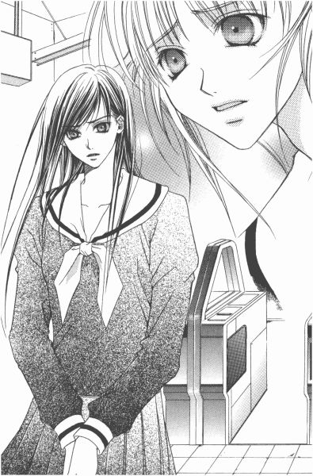
「どうして？」
「白薔薇さまのこと好きだからです」
「私も、好きよ。でも」
好きだからこそ、暴いちゃいけない、守ってあげなきゃいけない、って。祥子さまの気持ち、痛いほどわかる。
「お姉さま、さっきおっしゃったじゃないですか。たぶん白薔薇さまは『いばらの森』の作者じゃない、って」
「言ったかしら」
「はい。だったら、さっさと文庫読んで、白薔薇さまじゃないっていう確証をもちたいと思います」
「どう読んでも、白薔薇さまのこと書かれていたらどうするの？」
「別に......」
「別に、って」
「白薔薇さまが須加星だったら、たぶん尊敬します。文庫にサインしてもらうかもしれない」
と、祐巳が言うと、祥子さまは大きなため息を吐いた。
「あの......、お姉さま？」
また、とんでもない的はずれのことを言ってしまっただろうか。しかし、祥子さまは笑っていた。
「いいわ。あなたの、そういうところ」
「？」
「そうね。少し見習ってみようかしら。読むだけ読んで、それから考えてみればいいことだし」
「あの......」
全然話が見えないんですけれど。まさか、白薔薇さまの前で二人並んでサインを求めるなんてこと考えているわけじゃないとは思うけど。
以下省略って感じで、祥子さまは多くを語らず改札口の向こう側へと消えていった。由乃さんたちみたいに、せめて家が近かったらいいのに。そうしたら、もっと一緒にいる時間が増えるから。
バスを途中下車して寄った本屋は個人営業のすごく小さい店舗で、コスモス文庫は発売日に一冊ずつしか入らないらしいのだが、駅からだいぶ離れていることと地味な外観に助けられて、『いばらの森』は無事祐巳の所有物となったのであった。
シロイバラ
この感情は何だろう。私は自問した。
答えはでない。親友という言葉で片づけられるほど冷静な関係ではなく、けれど同性である以上たぶん恋愛と呼べはしない。
名前をもたない感情は、毎日少しずつ膨らんで、ちっぽけなこの身体の中では抑えきれなくなるほど、その存在を主張するようになった。
ここから出して欲しい。
カホリにこの想いを知らせなければならないのだ、と。
１
セイは高校二年生の春、初めてカホリと同じクラスになった。
最初は自分とは正反対のカホリに反発すらおぼえるが、次第に自分の欠けた部分を補うようにカホリの存在が心の多くを占めるようになる。
一生、離れずにいたい。セイはそう願った。だがカホリは高校を卒業後、修道院に入ることが決まっていた。
次第に親密化する少女たちを大人たちは心配し、カホリの転校話が二人の知らないところで進んでいく。自分たちの将来に絶望し、大人たちを信じられなくなった二人は、クリスマスの夜手と手を取り合って行き先のない旅に出る。
終着駅で電車を降り森へ入ったセイとカホリは、天国では離ればなれにならないと信じて睡眠薬を飲む。
だが、二人は一緒に死ぬことができなかった。
やがてセイが目覚めた時、しっかりつないでいたはずのカホリの手はそこになかった。白い病院の天井を見つめながら、セイは自分自身より大切な物を失ってしまったことを知って号泣した。
──かいつまむと、『いばらの森』はそういった内容だった。
「な、何てかわいそうな話なんだ」
ベッドの上に寝転がった祐巳は、手を伸ばして枕もとのボックスティッシュに手を伸ばした。まず頬からあごにかけてドーッと流れた涙を拭い、それからチーンと鼻をかんだ。
白い霧が立ちこめる深い森の光景が、心の中にまだ残っている。
禁断の恋、って一言でかたづけちゃえばそれまでだけど、心理描写が巧みで、ストレートに感情移入してしまう。ちょっと違うけれど、自分と祥子さまに重なる部分もあって、主人公のセイさんを応援しつつも、きっと悲しい結末が用意されているんだろうな、なんて予感しながら一気に読んだ。
二時間弱かな、こんなに早く文庫一冊読んだの初めて。家に帰ってすぐ読み始めて、今はもう外は薄暗くなっていた。
「ゆーみ。いい？」
ノックと同時に、弟の祐麒が入ってきた。
「何だよ、灯りもつけないで」
って言いながら、入ってすぐのスイッチを勝手につけた彼は、大洪水が訪れた後の姉の顔を見て素直に絶句していた。
「入っていい、って答えがまずあってから、部屋には入ってくるもんでしょ」
まだグズグズしている鼻をティッシュで押さえながら、祐巳は言った。弟の目にはどう映っているかわからないけれど、これでもレディのつもりでいるんだから。
「な、......何があったか、聞いていい」
たぶん、ありったけの勇気を振り絞って、祐麒は尋ねてきた。こういうところは男の子だ。場合によっては、力になってくれる気があるみたい。
「文庫、読んでた。悲しい話」
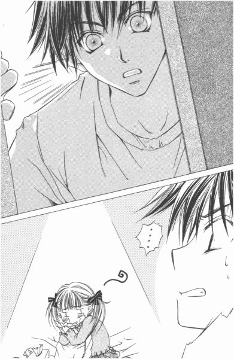
「なーんだ」
明らかにホッとしたような顔をして、肩で深呼吸なんかしているのを見ると、ちょっと複雑。もう少し脅かしてやればよかった。
「何か、用？」
「古語辞典貸して。俺のと違うの持ってるでしょ」
何だかピンとこなくって、って持ってきた自分の辞書を片手で振り回しながら言った。出版社によってそんなに違うものなのかな。
「いいけど」
祐巳は机の上から古語辞典を取って、「はい」と祐麒に渡した。ケースから出して、何やらパラパラ調べた後、彼は満足そうに「うん」とうなずく。
「これ、明日まで貸してて」
「だめ」
これは、別に弟いじめではない。だが祐麒は、不満そうに唇をとがらせた。
「どうしてよ」
「だって私、明日古文のテストがあるんだもん」
祐巳の答えを聞きおえた祐麒は、無表情で一言「ばか？」と言った。
「明日試験あんのに、小説読んで泣いてちゃ世話ないじゃん」
その通りだから、言い訳のしようがない。あなたは正しい、弟よ。でも、わかっていても、文庫がこの部屋にあるのに読まずにいられるほど意志が強くはないんだよ、お姉さんは。
「悪いこと言わないから、勉強しような。俺たちは、何もしなくても百点採れるほど優れた遺伝子を受け継いでいないんだから」
ぽんぽん。まるで十も年下の子供に言い聞かせるように、祐麒は祐巳の肩を叩いた。おいおい、わずかかもしれないけど私の方が先に生まれたんだぞ、と祐巳は突っ込みを入れたかったが、守られる立場みたいなのがちょっと気持ちよくてそのまま妹の気分を味わった。
ああ、これが祐麒じゃなくて祥子さまだったらなぁ、なんて思っちゃう。
「あんたも、学校で苦労しているのね」
「どして？」
「何もしなくても百点採れる人が、身近にいるみたい」
「姉ちゃんの周りにもいるだろう」
「......」
いますとも。おまけにこっちは容姿端麗、お家まですごいんだ、どうだ参ったか。──って、口に出せば出すだけ参るのは自分だってわかっているから言わなかった。
「ま、人にはそれぞれ取り柄ってもんがあるから」
落ち込む寸前の姉を慰めるように、祐麒がボソリとつぶやいた。
「私たちの取り柄って何よ」
「......子だぬきのような愛嬌のある顔に、生まれながらの天然ボケ」
「何それ」
「俺が先輩から言われた言葉」
「祐麒のどこが天然ボケなの」
「祐巳は、俺を上回る天然ボケだからわかんないんだ」
「でも、顔のたぬき度は祐麒の方が高いわよ」
「......」
「......」
「やめよう。低レベルの争いは虚しいだけだ」
「姉弟げんかしている暇に、勉強した方がいいもんね」
「うん」
「この辞書持っていっていいよ。私は祐麒の辞書使うから」
いつになく、「いいお姉さん」演じてしまったりして。お互いの傷、舐め合っている姉弟。何か嫌だなぁ。再放送でしかお目にかかれない、古いドラマみたいだ。
「悪いな」
祐麒は部屋を出ていった。でも、ドアが閉まって五秒もしないうちに、そこら辺に充満していた湿っぽい空気はエアコンをドライに切り替えるより早く、カラッカラに乾いてしまった。
「二人とも、ご飯よー」
階下からのお母さんの叫び声に、食べ盛りの子供たちは「はーい」という明るい返事とともに部屋を飛び出して、我先にと階段を転がるように下りていってしまったから。
たぬき顔に、天然ボケ。それに加えて、健啖というのも取り柄に入れてしまっていいのではないか、と祐巳は消極的ながら思ったのであった。
＊ ＊ ＊
由乃さんから電話があったのは、夜の九時半頃だった。
『ごめんなさい、夜分遅く。でも、何だか誰かの意見聞きたくて』
「どうしたの？」
と聞きながら、たぶん白薔薇さまのことではないか、と想像していた。そうなると由乃さんも、試験勉強せずに『いばらの森』を読んでしまったことになる。
『令ちゃんがね』
「へ？」
一瞬、レイとセイの聞き間違いかと思った。でも、まさか由乃さんが白薔薇さまのことを「聖ちゃん」とは呼ばないだろうし、小説の登場人物にちゃん付けするとも思われなかったから『いばらの森』のセイのことでもないだろう。
「令さまが、どうしたの？」
『......この件から手を引くって』
どうしてなのかしら、って由乃さんの声はちょっと震えている。
「どうして、って。私にわかるわけないじゃない。由乃さんに聞きたいくらいよ」
『そうか......。私だけがわからないんじゃないんだ。何だか混乱して、私自分の感受性に欠陥があるのかと心配しちゃった』
「落ち着いてよ、由乃さん。令さまが手を引くって、どういうこと？試験勉強するために『いばらの森』を読むの後回しにするとか、そういうことじゃないの？」
『小説はね、もう読んだみたい』
「読んだの？」
令さまも、こういうことにかけては我慢強くないらしい。
『でも、読まなかったことにする、って。噂のことについても、今後一切関わりたくないって』
「わからないなぁ。──あっ」
ぽりぽりとこめかみをかきながら、突然思い出した。
『何、祐巳さん』
「祥子さまも、何だか乗り気じゃなくなっていた。文庫本を買っていながら、読むの渋っている感じ」
『祥子さまも？』
「......うん」
何だろう、って。二人は受話器を握りしめたまま、あっちとこっちで黙り込んでしまった。
たとえ祥子さまが令さまと同じ理由で消極的になっていたのだとしても、結局どうしてそういうふうに変わったのかっていうことのヒントには全然ならなかった。
『ところで』
ややあって、由乃さんが尋ねてきた。
『祐巳さんはもう、あれ読んだの？』
あれ、とはもちろん『いばらの森』であろう。
「読んだ。由乃さんは？」
『私も。どう思う？』
どう、って。由乃さんが聞いているのは小説の感想というより、たぶん白薔薇さまが書いたものかどうかということだろう。以心伝心っていうのかな、顔見なくても仲よくなるとそういうのわかってくる。
『いばらの森』の作者のプロフィール欄には、手がかりになりそうなことは一切かかれていなかった。というより、ほとんど白紙状態。もちろんミスプリなんかじゃなくて、意図的に伏せられているのだ。
「どうかな。主人公のセイは、ちょっと白薔薇さまとタイプが違う気がするけれど」
でも、「伝記」じゃなくて「自伝的小説」なわけだから、骨組みが現実だとしても肉の部分はかなり脚色をしている可能性はある。
『私、読んでいて思い出したことがあるの。白薔薇さまって、昔は今みたいに砕けてなくて、ちょうどあんな感じだった気がする』
由乃さんと令さまは従姉妹でお隣同士だから、昔から学校のこととかよくおしゃべりし合ったという。特に去年は、高一と中三で校舎もちょっとだけ離れてしまったし、山百合会とか薔薇さまだとか珍しい話題が多かったから、由乃さんはもっともっとと話をせがんだ。そこで当然のように、山百合会の幹部連中がどんな人々なのか教えてもらったらしいのだが──。
『話した本人よりも、聞いた人間の方が強烈にイメージ焼きついたりするものよ。ましてや、実物知らないから、想像ばかりが一人歩きしたりして』
「うん？」
『白薔薇さまって──当時は 白薔薇のつぼみだったけど、少し怖い人かと思っていた。だから今年の四月、白薔薇さま見て別人だと思ったくらい』
「......」
あの、ふにゃふにゃのカラッカラの、どこが怖いっていうんだろう。由乃さんの話を聞きながら、それはやっぱり別人なのではないか、と祐巳も思った。
『でも、名前が同じなのよね。佐藤聖』
由乃さんは、須加星が白薔薇さまだって思っているんだろうか。一年前の白薔薇さまは、あの『いばらの森』の主人公と重なるからって。
でも、だとしたら、白薔薇さまは同級生と心中して一人生き残ったってことになってしまう。そんなことが現実の白薔薇さまの身に起こったなんて、ちょっと信じられなかった。
『少なくとも令ちゃんや祥子さまは、あの主人公を白薔薇さまだと思った。だから、あまり触れたくないとか』
「......そうかもしれないね」
すべてではなくても、一年前に起きた何かを、高等部一年生だった二人は知っているのかもしれない。知った上で手を引くべきだと判断したなら、妹である自分たちもそれに従うべきなのだ。
何だか、身体全体がみるみるしおれていく気がした。
「私たち、何しているんだろう」
昼間の意気込みは、どこかに消えてしまっていた。
『ラスト一日、試験がんばろう』
「......うん」
心なしか、由乃さんも落ち込んだ声をしていた。
受話器を置いた後、祐巳にはぼんやりとわかったことがある。
どちらにしても、自分は白薔薇さまのことを何も知らない。白薔薇さまの過去も、今の気持ちも、何もかも。
だから、文庫を読んでわかった気になりたかったのだ。
現実の白薔薇さまを無視して、過去を理解することなどできるはずないのに。
２
休み中の連絡事項とか、結構重要なことを担任が話しているホームルーム。
聞いている振りをして大半の生徒は上の空だってわかっているから、先生は黒板に要点だけ書いて解散してくれた。
試験勉強がおろそかだったから、二学期の通知表をもらうのはちょっと恐ろしい気がする祐巳である。でも、約一週間後のことはこの際忘れて、試験休みという宿題も何もない休暇に思いを馳せた。
とにかく、試験は終わったのだ。
（でも、その前に）
「志摩子さん、薔薇の館に行く前に白薔薇さまの所寄らない？」
丁寧に鞄の中に教科書なんかを詰めているフランス人形、──もとい、藤堂志摩子さんに声をかけた。
「どうして？」
ふわふわした巻き毛が、傾げた頭の動きにあわせてスローテンポでバウンドした。
「あの噂知っているでしょ？ 私、直接白薔薇さまに聞こうと思って」
一度は令さまの言うとおり、なかったことにしようかとも思ったんだけれど。本当に知らなかったのならともかく、知らないふりしたまま自然に振る舞えるわけがない。
それであらためて考えた。自分が白薔薇さまだったら、どう思うか。
腫れ物に触れるみたいにされるより、正面からぶつかってこられた方がいっそ気持ちいい。もちろん、それは祐巳の意見だから、白薔薇さまが同じように感じてくれるかどうかはわからないけれど。もし、不快に感じられたようなら、そこで潔く謝ってしまおうと考えていた。
「薔薇の館で聞いてもいいんだけれど、そうすると関与したくないっていう令さまや祥子さままで巻き込んじゃうから」
「......で、私を誘うのはなぜ？」
「だって、白薔薇さまは志摩子さんのお姉さまでしょ？」
「ええ、もちろん」
志摩子さんはやわらかくほほえんでから、「でも」と付け加えた。
「だからって、私が当然祐巳さんと一緒に行くという考えはおかしいわ」
「ど、どうして」
「私も、どちらかというと令さまたちに近い意見だから。それに、白薔薇さまに対して何か行動を起こすにあたって、妹である私にいちいち断る必要もないわよ」
志摩子さんが言ったのと同じような言葉を、以前一度白薔薇さまの口から聞いたような気がする。志摩子さんが白薔薇さま以外を頼っても嫌な気しない、とかなんとか。
「でも、気になるでしょ？」
「いいえ」
即答。
そういう姉妹だから、と志摩子さんは言葉を補った。
（そういう姉妹って、そういう姉妹って、そういう姉妹って──）
変わっている、って思う。
そりゃ人間同士のつながりだから、姉妹の形もそれぞれだとは思うけれど。少なくとも自分の場合は、祥子さまと仲よくしている一年生見かけたら嫌だし、由乃さんだってカップケーキを差し入れた生徒のこと気にしていた。
白薔薇さまと志摩子さんは、冷めている。これはどうやら、他と違って二学年差があるからって理由だけではなさそうだ。だとしたら、単に性格の問題なのかもしれない。以前白薔薇さまは、志摩子さんのことを似ているから一緒にいて楽って言っていたし。
「それより祐巳さん。もう行った方がよくはなくて？」
「え？」
「祐巳さんが訪ねていくなんて知らないから、早くしないと白薔薇さまは薔薇の館に行ってしまうわよ」
「そうだっ......！」
祐巳は鞄を抱えると、あわてて廊下に出た。
「あとでね、志摩子さん」
失敗失敗。一つのことに関わると、別の所がおろそかになるのは悪い癖だ。
試験が終わったら、久々にみんなでお茶会しようって話になっていたから、白薔薇さまはすでに教室を出てしまったかもしれない。
三年生の教室か、薔薇の館か。行き先を迷ったあげく前者を選んで一歩踏み出した時、楽しげな音楽とともに校内放送が流れた。
『三年藤組、佐藤聖さん。至急、生活指導室に来てください。繰り返します──』
（え？）
思うより早く、祐巳の身体はくるりと方向を変えた。佐藤聖さんは、白薔薇さまのことだ。
『三年藤組、佐藤聖さん』
だから行き先は、教室でも薔薇の館でもない。
『至急生活指導室に来てください』
そこは、職員室の隣にある。
（でも、どうして......？）
部屋の入り口に掲げられたプレートの文字を目で確認しながら、祐巳は愕然とした。
生徒のお手本となる立場の白薔薇さまが、「生活」を「指導」されるための部屋に呼び出しを受けるなんて。事情をよく飲みこめていない、ましてや他人事のはずの祐巳でさえこんなに悔しいのだから、今頃白薔薇さまはどんなにか屈辱的に感じていることだろう。
それなのに。
「あれー、祐巳ちゃんも呼び出し？」
当の白薔薇さまは、思いのほか明るくご登場になった。祐巳が駆けつけたのとは逆の廊下をのんびり歩いてくる。どうやら、祐巳の方が呼び出された人間より早く着いてしまったらしい。
「じゃあ、呼び出し理由は不純同性交遊かな」
「なっ......！」
冗談なんて言っている場合じゃないと思うんだけれど。それにしても、カラカラ笑う白薔薇さまの後ろに遠巻きに女生徒たちがつきまとっている図は、はっきり言って不気味だった。大半は一年生だけれど、中には新聞部の部長なんかも混ざっている。放送を聞いて、居ても立ってもいられなくなった生徒たちが団子になってしまったらしい。
「もしかして、この背後霊たちが私に取り憑いている理由、祐巳ちゃんだったら知っている？」
「知っている、って......。まあ。大ざっぱになら」
さすが白薔薇さま、背後霊とはうまいこと言う。──なんて感心してちゃいけない。
「も、......もしや、白薔薇さま。ここ数日の騒ぎをご存じない、とか」
「何があったの」
今度は少し真面目な顔。やっぱり大物は違う。生活指導室に呼ばれる理由がまったく見当つかないのに、こんなに明るく出頭してこられるんだから。
「そうだ。私も聞こうと思っていたんです。『いばらの森』は白薔薇さまが書かれたんですか？」
「いばら......？」
白薔薇さまが首を傾げたその後ろで、扉が開いた。
「ああ、佐藤さん。来ていたのね。お入りなさい」
生活指導のシスターが顔を出して入室を促した。
「はい。......じゃ、祐巳ちゃん、続きは後でね」
ウインクなんかして余裕いっぱいに入室していく白薔薇さまとは対照的に、祐巳は内心縮み上がっていた。なぜって、チラリと見ただけだけれど、生活指導室の中には学園長、中高等部の校長、学年主任、三年藤組の担任の姿が確認できたから。こんなすごいメンバーににらまれたら、何もしていなくても「ごめんなさい」って言ってしまいそうだ。
「祐巳さん」
背後霊たちをかき分け、由乃さんがおさげ髪を揺らしながら祐巳に駆け寄ってきた。それをきっかけにその辺に充満していた緊迫感がとけ、それまで緊張していた少女たちの集団もほろほろとばらけた。でも誰もその場所から立ち去る気配がなく、職員室や生活指導室周辺でうろうろしている。みんな、白薔薇さまが出てくるまでここにいるつもりらしい。
「白薔薇さま、何だって？」
由乃さんもまた、校内放送を聞いてあわてて駆けつけたのだという。
「......いつも通り明るかった。あと、呼び出しの理由、知らなかったみたい」
「知らなかったの？」
こんなに騒ぎになっているのに、って由乃さんも驚いていた。一年生ほどじゃなくても、三年生の教室にだってその気配くらいは漂っているはずだった。
その時、姿勢を低くしてチョロチョロとネズミのように前方に進み出た影があった。制服を着たネズミは生活指導室の正面で止まると、その扉に身体の側面をぴったりくっつけて静止した。壁と同化しようとしている忍者か、まったく。
「......あの、生活指導室は壁も扉も防音処理されているんですよ」
見かねた由乃さんが、もしもしって声をかけた。
「あら、ま、嫌だわ。私ったらつい夢中になってしまって。別に盗み聞きしようとしていたわけじゃありませんのよ。おほほほほほ......」
ネズミ、忍者、もとい新聞部の部長、築山三奈子さまは照れ隠しにその場で高笑いをした。
「おほほほほほほほ」
口もとにもっていった手が、キツネの形をしていた。
「よくよく見れば、そちらにいらっしゃるのは 黄薔薇のつぼみの妹、島津由乃嬢。それに 紅薔薇のつぼみの妹、福沢祐巳嬢ではございませんの。ごきげんよう」
「ご、ごきげんよう」
上級生からの挨拶を無視するわけにもいかず、祐巳と由乃さんは一応挨拶を返してからサッと回れ右した。
由乃さんはつい声をかけてしまったのだろうけれど、この三奈子さまっていうのはあんまり関わり合いにならない方がいい部類に属する人だった。新聞部が関わると、ちょっとしたことでも百倍や千倍に誇張されて広まってしまう。
「あら、逃げなくてもいいじゃない？」
三奈子さまは一人につき片手一本を使って二人の肩をつかむと、身体をくるりと回転させた。
回れ右を回れ右したら。はい、正解は元の位置に戻る。そして、正面には何かを探るような三奈子さまの顔。
「逃げるってことは、何か私に知られると困るような隠し事しているのかしら？」
三奈子さまの目が、キラリと光った。
「い、いいえ」
「滅相もない」
二人は首をぶんぶんと横に振る。祥子さまくらい強気じゃないと、この人とは同等にはお話しできないんじゃないかな。口をパカーッとあけて、一瞬のうちに一飲みにされちゃいそう。
「それはさておき。ちょうどいいところで会ったから、今回の『白薔薇事件』についての感想なんか、このお姉さんに教えてくれないかなぁ」
きびきびとした声を急に猫なで声に変えて、すり寄ってくる。こうなればなったで、逆に怖い。しかし、すでに『白薔薇事件』なんてタイトルつけているあたり......。前作の『黄薔薇革命』に比べて少々安易なネーミングではあるが、それは今回練るための十分な時間がなかったのではないかと思われる。
「何も言っちゃだめよ、祐巳さん」
由乃さんが肘で祐巳の腕を突っついた。
「わかっているって」
言われるまでもなく、祐巳だって一言たりとも発言するつもりなどなかった。その一言が、白薔薇さまにどれだけ迷惑をかける結果になるか、今までの経験上ゆうに想像がつく。
内部事情を知る福沢祐巳さんの談話、──なんて『リリアンかわら版』に書かれでもしたら、もう荷物まとめて一人旅にでも出るしかない。
「信用ないなぁ。これでも、あれ以来反省して多少は自粛しているつもりなんだけれど」
「あれ、......ですか」
由乃さんと令さまのアンケート用紙を混同して発表した件だろうか。それとも、由乃さんが令さまにロザリオを返したというそれだけの事実をもとに、涙なくては語れないようなうるわしい姉妹愛の小説もどきをでっち上げた件だろうか。
「実は困っているのよね。試験勉強にかまけて、築山三奈子ともあろう者が、この騒動昨日の午後まで知らなかったわけ。ほら、新聞部が出遅れちゃ、立つ瀬ないじゃない？明日からはもう試験休みだし、ここは一週間後に的を絞ってドッカーンてな具合にしたいじゃない？だから協力してくれないかな」
（......だめだ）
この人、全然反省していない。
「協力してくれたら、白薔薇さまのために『リリアンかわら版』が一肌脱いであげられるんだけどなぁ」
押してもだめなら引いてみろ、って。三奈子さまは今度はご馳走をちらつかせてきた。いくら祐巳が食いしん坊だからって、そうそうそんなうまい話に食らいつくほど馬鹿では──、馬鹿では──。
「いいのかな？ 大好きな白薔薇さまが退学しちゃっても」
「た、退学!?」
先には明らかに釣り針がついている怪しい餌に、祐巳は思いっきり食いついた。
「祐巳さん、落ち着いて」
由乃さんが肩をつかんで、一歩前に踏み出した祐巳の身体を引き戻した。
「でもっ、白薔薇さまが退学なんてことになったら！」
「よく考えてごらんなさいよ。学校側が小説書いたくらいで、生徒を退学にするわけないじゃないの」
「......あ」
祐巳は、釣り針つき餌を口から吐き出した。
あぶない、あぶない。危うく新聞部に釣り上げられるところだった。
「そうかなぁ。本当に大丈夫かなぁ」
三奈子さまは、意味ありげに笑った。
「うちの学校は、アルバイト禁止だし？ 小説書いて原稿料なり印税なりを手にしたら、明らかに校則違反よね」
「でも、アルバイトは原則禁止なだけで、ちゃんと許可もらえばやっていいことになっているはずです」
驚いたことに由乃さん、開き直ったのか三奈子さま相手に反論をはじめた。確かに少数だけれど、リリアン女学園でも理由次第でアルバイトは許されている。主に、家計を助けるためと、特殊技能の育成のため。特殊技能っていうのには、茶道や華道や舞踊なんかでお弟子さんがいる人とか、劇団に入っていて芸能活動している人とかが対象になる。もちろん、どういう形にせよ、学生でありながら外から収入を得るわけだから、学校側が保護者と本人を呼び出して十分な話し合いをした上で許可が下りるというわけだった。
「白薔薇さまが許可もらっていると思う？もらっていないからこその呼び出しなんでしょ？」
「......それは」
でも由乃さん、健闘むなしく後が続かない。どだい無理なんだって、新聞部の部長相手に対等に口論しようなんて。
「もちろん、校則違反の一つくらいで退学になるなんてそうそうないけれど。絶対にないなんてこともないのよ」
回りくどすぎて、祐巳の頭では処理するのが追いつかなかった。つまり何だ、一つの校則違反でも退学になる場合もある、って。そう言いたいんだと思うんだけれど。
「データによると、何年か前に風俗関係の店でアルバイトしていた生徒は生活指導室に呼び出しを受けたその日に退学処分になっているのよ」
データって、いったい何のデータなんだか。
「でも、風俗のお店と小説家って、全然レベルが違うじゃないですか」
勇気を振り絞って、祐巳も反論してみた。でも、返ってきたのは「あら」という冷ややかな笑み。
「考え方は人それぞれじゃない？ 自分の身体を売るのと精神を売るの、いったいどこがどう違うの」
「......えっと」
まったく、全然、明らかに違うと思うんだけど。でもそれを、うまいこと説明できない。蔦子さんなんかなら、こういう時に相手を言い負かす技を心得ているんだろうけれど。
そのうち遠巻きに見ていた一年生の生徒たちが、「風俗」なんて学園には不似合いな単語を耳にしてざわざわし始めた。
まずい。このままじゃ、白薔薇さまが風俗で働いていて呼び出し受けたなんていう、誤解された噂が広まっちゃう。
「『リリアンかわら版』で署名活動呼びかけてあげてもいいのよ。白薔薇さまを退学にしないでください、っていうやつ」
「でも、本当に私たち何も知らないから」
「あら、祐巳さんはさっき白薔薇さまとお話しなさっていたじゃない。実際、どうなの？例の『いばらの森』っていう小説、白薔薇さまが書いたの？違うの？」
さっきまで白薔薇さまが書いたって、半ば決めつけていたくせに。築山三奈子さまはまた、探るように迫ってきた。
（祥子さまのアップとは、また違った恐ろしさがあるなぁ）
ジリジリジリ。だんだん壁際に追いつめられていく。
さすがは三奈子さま。見た目はもろくてすぐに堕ちそうな由乃さんをあえて責めずに、ずっこけ祐巳を選ぶあたりは、なかなか人を見る目がある。由乃さんはああ見えて、その実芯があってなかなかくせ者だから。
「本当に、本当に、何も知らないんですったら」
祐巳が目をつむって叫んだと同時に、背中の壁が倒れた。
「祐巳さんっ、後ろ、ドア、開く！」
日本語を習いはじめた外国人の言葉のような由乃さんのアドバイスも虚しく、祐巳は突然空いた背後のブラックホールに後ろ向きに吸い込まれていった。
「ひぇ────」
どうして扉に寄りかかってしまっていたのか、とか、何で扉が外開きではなかったのか、とか、よりにもよってこんなに絶妙なタイミングで扉が開かなくっても、とか。背後へと倒れていくほんの一瞬の間に、たまたま偶然に重なった不運をこれでもかっていうほど嘆いた。
（このままだと後頭部打って、ますます頭悪くなっちゃう）
「あぶない！」
ばふっ。
（......ばふっ？）
危機一髪で祐巳はやわらかい何かに助けられた。頭は痛くないし、身体は斜め後方に倒れ気味ではあるが、ちゃんと上履きの底は床に両方ともついている。
「祐巳ちゃん、けっこう重い......」
「えっ」
つむじの辺りから、聞き覚えのある声がした。身を挺して祐巳を救ってくれたのは、何と白薔薇さまだった。シャンプーの匂いかな、ほのかに漂うミント系の香りにぴったりなさわやかな笑顔が顔だけ振り返ったその先に見えた。
「白薔薇さま、白薔薇さま、......私っ」
「ごめん。これ以上支えきれないから離れて」
白薔薇さまはよいしょって、祐巳をちょっと持ち上げて一人で立たせた。とっさに手を出して受け止めたから、すごい不自然な格好になってしまったらしくて、さすがの白薔薇さまも肩で息をしていた。
「それに、生活指導室の中で抱き合ったまま崩れちゃまずい」
耳もとで囁かれ、思い出してギョッとした。開いた扉のあちら側には、口を開けてこちらを見ている学園長やらシスターやら学年主任やらそういう人たちの姿がある。
「お騒がせいたしました。失礼します」
白薔薇さまは中の先生たちにきちんと礼をし、祐巳の頭もついでにペコリと押さえて部屋を出た。
「祐巳ちゃんの言っていた『いばらの森』、大まかなことはわかったよ」
ちょっとだけ苦笑した白薔薇さまは、それからすぐ、まだそこここにたまっている背後霊（今は浮遊霊か）に聞こえるように声を上げた。
「たぶん気になってしょうがないことだと思うから報告するけれど、残念ながら『いばらの森』を書いたのは私じゃないからね」
一瞬シーンとなった後、明らかに落胆したようなざわめきが起きた。いったい彼女たち、何を期待して白薔薇さまを追いかけてきたんだろう。
「あれ、由乃ちゃんも心配して来てくれたの？」
白薔薇さまはニコニコ笑って、由乃さんに声を掛けた。
「はあ。本当なんですか」
「本当、本当。私自身、さっき初めて事態を把握したところ。......ということで、今回は『リリアンかわら版』にネタを提供できなくてごめんなさいね。築山三奈子さん」
新聞部に穏やかな嫌味と、牽制加えることも忘れない。これで記事にしたらゆるさないぞ、っていう圧力をかけているんだろう。いくら三奈子さまでも、上級生でおまけに薔薇さまに刃向かう勇気ってないだろう。今回はガセだったわけだし。
「ささっ、じゃあ行きましょうか」
右手で祐巳、左手で由乃さんの肩を抱いて、白薔薇さまは機嫌よく歩きはじめた。
「あ、どこに？」
「薔薇の館でしょ？ 迎えに来てくれたんじゃなかったの？」
「そうだ、お茶会！」
校内放送なんかのおかげで、すっかりそのことを忘れてしまった。
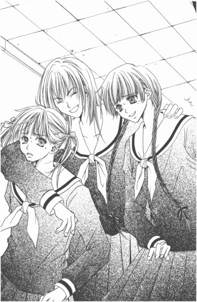
今頃みんな、薔薇の館でどんな気持ちで待っているのだろう。
紅薔薇さまや黄薔薇さま、祥子さまや令さま。
それから、志摩子さんは──。
「熱いぜ」
外は冷たい風が吹いているというのに、白薔薇さまは何だか季節にそぐわないことを言ってほほえんだ。
３
「派手に呼び出されていたじゃない？」
薔薇の館の二階のサロンで、待ちかまえていた紅薔薇さまが開口一番そう言った。
「個人的に呼ばれたことないから、ちょっとうらやましかったりして」
と言ったのは黄薔薇さま。
「それはどうも」
手を振りながら白薔薇さまは軽快に部屋の中央へと進み、空いている席にゆうゆうと腰を下ろした。
久々に見る、三薔薇のスリーショット。やっぱりいいなぁ華があって、と祐巳はうっとり見とれてしまった。
しかし、それにしてもそんな風に優雅にほほえみ合ったりしていていいのだろうか。白薔薇さまがはっきり須加星ではないって否定したのを耳にした祐巳でさえ、まだ消化不良であれもこれもと質問を浴びせかけたい衝動に駆られているっていうのに。薔薇の館待機組は、呼び出しがあったことについて触れたくらいで、あとはなにも聞く気配がない。
「どうぞ」
そこに志摩子さんが登場して、湯気のたったティーカップを配って回った。部屋に一緒に入ってきた由乃さんも、お砂糖や粉末クリームなんかのスティックをテーブルに配置している。
そうなるとセッティング関係でやることなど何も探せなくて、仕方ないから電気ポットに水道水を足して席に着いた。
「生活指導室に行っていたの？」
隣の席にすでに着いていた祥子さまが、小声で祐巳に聞いた。
「......はい」
叱られるのかと思ったが、祥子さまはただ「そう」とつぶやいただけだった。
祥子さまは、生活指導室までは来なかった。小説を読むのもためらいがちだった。もしかしたら、妹の祐巳が白薔薇さまの過去に首を突っ込むことに対して快く思っていないのではないか、そんな風に受け取れなくもない。令さまも、由乃さんに何も言わなかった。
取りあえず「お疲れさま」って、全員紅茶で乾杯した。誰がこっそり持ってきたのか、市販のお菓子がティッシュの上に広げられていた。
お茶会は本当に久しぶりで、こんな風にメンバー全員が揃うのも今年はこれで最後かもしれなかった。
「ちょっと報告させて」
一区切りついたところで、白薔薇さまがおもむろに立ち上がって言った。
「由乃ちゃんや祐巳ちゃんには話したことなんだけど、噂になっている小説の作者ね、あれ私じゃないから。──以上」
以上、って。それだけ文字通り報告すると、白薔薇さまは速やかに着席して、何もなかったようにまたお茶をすすった。志摩子さんの入れた紅茶を「上品でいい」とかなんとか言いながら。
「それが呼び出しの理由なの？」
紅薔薇さまが尋ねた。
「そういうこと」
「それで？」
黄薔薇さまが言った。
「別に。私じゃない、ってはっきり言ったら解放してくれた。それだけ。私自身現物を読んでいないし、実際そういう噂が流れていること自体、さっき知ったばっかだし。何か聞かれても答えようがなかったと思うけどね」
文庫を読んでいないというのは先生方も同じだったらしく、一応噂が流れていることだし、休みに入る前に取りあえず本人の話を聞いておこうという趣旨での呼び出しだったらしい。
「本当にあなたが書いたんじゃないのね？」
紅薔薇さまが確認すると、白薔薇さまは「マリア様に誓って」と右手を挙げてはっきりと言った。
「わかったわ。じゃ、この話はもうおしまいにしましょう。いかが、黄薔薇さま？」
「異議なし、ですわ。紅薔薇さま」
二人の薔薇さまたちはうなずきあって、そんな風に話を勝手に締めくくってしまった。
（えーっ!? そんなんでいいの？）
祐巳は心の中で、不満の声を高らかに上げた。
もちろん事実は白薔薇さまの報告通りなのだろうから、それでよしって片づけてしまって何も問題ないんだろうけれど。でも、薔薇さまたちだったら、噂が広まってしまった原因を考えたり、今後の対策を立てたりするものだって思いこんでいた。
紅薔薇さまも黄薔薇さまも、噂に踊らされていなかったから、白薔薇さまの話題に執着してないんだろうか。でも祐巳なんか、『いばらの森』を読んで号泣し、そしてもしかしたらそれが白薔薇さま本人のことかもしれないなんて考えていたものだから、こんな風に簡単に片づけられてしまうのは何となく納得できない。
（ああ......もう話題なんか、完全にクリスマス一色になっているし）
完全に、不完全燃焼。こんな調子じゃせっかくの試験休みも、白薔薇さまのことが気になって何も手に付かないのではないか。──そう考えてハッとした。それって、どこが覗き見と違うだろう。
（結局、私も白薔薇さまの背後霊の一人だったのかな......）
紅薔薇さまも、黄薔薇さまも、祥子さまも、令さまも、志摩子さんも。この件に関して積極的にならないのは、興味本位で動いていないからだとしたら──。
少し、いや、かなり落ち込んだ。こんな、ミーハーで浅はかな自分には、この場にいる資格などないのではないか、なんて考えるくらいに。
祥子さまの妹に選ばれて有頂天になっていたけれど、容姿とか学力とかそれ以外にも、根本的に自分には何か欠けているのではないか。その何かって、案外生まれつきのもので、いくら努力しても手に入らないものだったりする気がする。
（......自分で自分を追いつめて、立ち直れなくなるなんて。かなり馬鹿だ。私って）
ガクって、うなだれたところに、頭上から何かが降ってきてつむじ辺りに命中した。
「？」
それは、一度バウンドして祐巳のカップの脇に落ちた。そのままころころ転がる姿は銀色の球形で、思いのほか小さい。取り上げてみると、何とチョコレートを包んでいた銀紙を丸めた物だった。
祐巳がきょろきょろ見回すと、犯人は自首のつもりなのかテーブルの上に置いた手を少しだけ持ち上げて小さく振った。それ以外の人は、何も気がつかずに会話を続けている。
（何なんですか、白薔薇さま）
唇だけ動かして尋ねると、白薔薇さまは今度は両手をパーの形に開いた。
（十？）
それから右手と左手の人差し指を立ててクロス。
（バツ？）
再び両手をパーにして、最後に自分の頬を指さした。
（ジュウ、バツ、ジュウに顔？）
さっぱりわからない。首をひねると、白薔薇さまは、再び一連の動きを祐巳に向かって見せた。今度は口もぱくぱく動かしている。
（十かける十か）
10×10は......言わずと知れた１００。百に顔って......？
「百面相!?」
思わず祐巳は立ち上がった。
当然乙女たちのよどみないおしゃべりがプッツリと途絶え、祐巳に注目が集まった。
「何？ 祐巳ちゃん、発言でもあるの？」
黄薔薇さまが子供に尋ねるみたいに聞いてきた。
「あ、......はい。いいえ、──すみません」
真っ赤になりながらしどろもどろに答え、うやむやに着席した。
「寝ぼけているんじゃないの」
祥子さまが小声で注意した。
（寝ぼけていたわけじゃないんだけど......）
元凶はというと、斜め前の席で肩を震わせ、おまけに目に涙までためて笑っていた。
（こんな人のために、悩んでいたなんて......）
何だかばかばかしくなって、これ以上クヨクヨするのをやめた。
４
「祥子ー、祐巳ちゃん貸して」
お茶会がお開きになると同時に、白薔薇さまが祐巳の首に腕を回しながら叫んだ。
「それは別に構いませんけれど──」
「大丈夫、大丈夫。制服脱がせて遊んだりはしないから」
「......ふざけたことおっしゃると、お断りいたしましてよ」
祥子さまも多少慣れたのか、白薔薇さまの挑発を冷ややかにかわした。
「あの、キスっていうのもなしにしてもらえませんか」
二人の会話に割り込んで、囚われの身の祐巳はもがきながら言った。白薔薇さまは他人の妹だろうがお構いなしに抱きついたりほっぺにチュッだとかするから、油断できない。
「ＯＫ。残念だけど約束しましょ。じゃ借りるね」
白薔薇さまはそう言って踵を返すと、祐巳を連行したまま今度は令さまの所へ行って由乃さんを貸して欲しいと頼んだ。
「由乃さえよければ」
令さまは祥子さまのようには注文をつけずに、快く承諾した。
「令がうるさく言わない理由？ それは、単純。私が由乃ちゃんに対してはおいたしないからでした」
白薔薇さまはカラカラと笑った。
「えっ!? ......どうして、私だけ」
悪い先輩の餌食に。
「リアクションがいいからかなぁ。あと、祥子の反応も楽しい。一粒で二度おいしい姉妹。──ありがとう、合掌」
「......」
言い返すべき言葉がない。何だか、感心してしまうくらい明快な回答。しかし合掌はないだろう。仮にもリリアンはカトリックなんだから。
「──というわけで。後かたづけは三人でやりますので、皆さんどうぞお先に」
言葉は丁寧なものの、白薔薇さまのそれはやや強引な厄介払いって感じだった。そうやってみんなを追い出して、いったい何を始めるつもりなんだろう。まあ、由乃さんも一緒だから襲われたりはしないと思うけれど。
じゃ、後はよろしく。──なんて声を残して、「皆さん」は次々に二階の部屋を出ていく。祥子さまもやや怪訝そうな表情をしていたが、午後から用事があるとかで、令さまに続いて渋々階段を下りていった。
「何かお手伝いすること、ございます？」
一番最後に、志摩子さんが尋ねた。まあ、祐巳たちが残っているんだから、同じ一年生としてはそこでお伺いをたてるのは当然かもしれない。それに、考えてみれば白薔薇さまの妹である志摩子さんが仲間はずれっていうのはどう考えてもおかしい。
「別に、これといってはないけど」
白薔薇さまの返事は、言葉以外の情報が何も含まれていなかった。うまく説明できないけれど、姉妹なんだから言葉の裏に「本当はあなたにも残って欲しいのよ」とか「祐巳ちゃんや由乃ちゃんを借りたのには事情があるのよ、そこのところわかってね」とか、そういう思いがにじみ出ていてもいいんじゃないかな。せめて後ろめたい顔をしてみせるとか、さ。
「そうですか。それじゃ、お先に失礼します」
おいおい。そこで引き下がっていいのか、って。志摩子さんを目で追うと、「お姉さまにつき合わせてごめんなさいね」なんてほほえまれてしまった。
「ごきげんよう」
いつもと変わらず、天使のようなほほえみを残して志摩子さんもまた退場してしまった。ふわふわ巻き毛の残像が、今日はなぜか目に焼きついている。
「志摩子さんが一緒だとだめなんですか？」
由乃さんも祐巳と同じように感じたのだろう、白薔薇さまに答えを迫っていた。
「どうして？ 志摩子が残りたいんなら、全然構わないけど」
「あんな言い方じゃ、残りたくても残れませんよ。ね、祐巳さん」
返答に対してますます興奮した由乃さんは、祐巳に同意を求めてきた。
「そうなの？ 祐巳ちゃん」
白薔薇さまは「何のことかさっぱりわかりません」というような顔をして、祐巳の方に顔を向けた。
「私が志摩子さんだったら、やっぱりいちゃいけないんだと思いますけど」
「ふーん」
ふーん、じゃないだろう。わかったんだったら、早く志摩子さん追いかけたらいいのに。白薔薇さまったら、椅子にどっしり座ったまままったく動こうとはしない。
「何だったら、私が追いかけても──」
祐巳がビスケット扉に向かおうとすると、軽く止められた。
「あ、いいのよ」
「どうしてですか」
「志摩子はたとえ残るなって言われても、残りたければ自分の意志で残るような子だから」
「へ？」
「そういうこと。だから大丈夫、気にしないで」
何だか煙に巻かれてしまったような気がするんだけれど。でも、とにかく白薔薇さまがそうまで自信ありげに言い切るのをこれ以上言い返すこともできなくて。
「はあ、そういうものですか」
祐巳と由乃さんは、首を傾げながらも納得するしかなかった。それにしても志摩子さんって、白薔薇さまにとってどういう存在なんだろう。
「由乃ちゃんでも祐巳ちゃんでも、どっちでもいいんだけどさ。今、『いばらの森』持っている？」
「あ、はい」
二人はほぼ同時に自分の鞄の中を探った。先に祐巳の文庫が取り出されたので、白薔薇さまはそれに指をかけて言った。
「貸してくれる？」
「いいですけど。何するんですか？」
「本借りる、ったら読むに決まっているでしょ。鍋敷きにでもすると思っとるのか、君は」
「いえ。サインする、とか」
「須加星って？ ......それって笑えないよ、祐巳ちゃん」
それでも口もとは笑っていた。しかし、これから『いばらの森』を読むってことは、本当に白薔薇さまは作者じゃないわけだ。
「後片づけ、......しようか」
「......うん」
言い出しっぺが椅子を窓辺に寄せて文庫のページをくりはじめてしまったので、祐巳と由乃さんは仕方なく二人でテーブルの上のティーカップを運び、お菓子の食べ残しを一カ所に集めた。
「秘技瞬間湯沸かしの術」
由乃さんが、流しのたらいにポットのお湯を注ぎ、それを水道水で少しうめてからカップとスプーンとスポンジを中に沈めた。
「この中で洗って、すすぎだけ水道水使うの。どう？」
「それはグッド・アイディアだとは思うけど......。由乃さんさ、近頃剣客モノに留まらず忍者モノも読んでるんじゃない？」
「ばれたか」
水道水はますます冷たくなっていて、確かに真冬には凍るはずだって、祐巳に再確認させた。
（......冷たい水）
冷たい空気。
靄のかかった、深くて緑色の森。いばらの蔓で封印した、セイの想いが眠る森。
冷たい、っていう感覚が、『いばらの森』のワンシーンを祐巳の脳裏に呼び起こした。セイとカホリが手を取り合い、死に場所を求めて森をさまよう、そんな情景。
今思い出してもじーんとこみ上げてくるものがある。
歩き疲れた二人は、冷めてしまったお茶で、一粒ずつ代わりばんこに睡眠薬を飲む。薬がなくなった時、離れないように互いの指を交互に組んで、そして最初で最後の口づけを交わすんだ。
「いゃー、ご苦労ご苦労」
幻想の世界にグシャグシャと土足で踏み込むように、白薔薇さまはいつもの「おやじ仕様」で背後から近づいてきた。
「まさか、もう読まれたとか」
台布巾でテーブルを拭いていた由乃さんが、思わず腕時計を見た。
「そりゃ、まさかでしょ。十分や十五分で文庫一冊読めるはずないじゃない」
確かに。白薔薇さまが速読の技術をもっているなんて聞いたことないし。
「二人がよーく働くから、ご褒美あげようと思って中断しただけ。またすぐ、読書は再開するけど」
「途中までお読みになって、いかがですか」
という由乃さんの問いかけに、祐巳の「ご褒美？」という質問が重なった。白薔薇さまは一瞬だけ祐巳を見て、吹き出しそうになるのをカムフラージュするように、まず由乃さんの方に顔を向けた。絶対、絶対、心の中で笑っているはずだ。しかしそれにしても、何でこう真っ正直に言葉にでちゃうんだろう。
「感想っていうほど読んでいないから、まだよくわかんないけど、興味深いのは確かね。......一部の人が、書かれているのが私のことだって思うの、わかるような気がする」
そう言いながら白薔薇さまはポケットに手を入れて、二枚の紙片を取り出すと祐巳の顔の前でピラピラと揺らした。
「はい、お待ちかねのご褒美」
「何ですか、これは」
色つき画用紙にゴム印を押して作成した、切符サイズの紙片。よく見ると、「麺食」って書いてある。大学生が利用する食堂の一つ、麺食堂の食券だった。
「いつだったかな、担任の手伝いで夕方までつき合い残業した時に、お礼代わりに二枚もらったのよね。友達とラーメンでも食べて帰りなさい、って。でもさ、その時間まで残っている友達もいなかったし、そもそも麺食堂って四時前に終わっちゃうのよ」
なるほど。食券の裏には、三年藤組の担任教師の印鑑が押してあった。基本的に、中高生は大学の食堂は利用できないことになっているが、教師の許可があればＯＫで、その証明代わりに裏面にハンコをもらうことになっている。
「で、そのままになっていたの。二枚じゃね、なかなか使う機会がないから」
薔薇さまが連れ立って行くには一枚足りないというわけだ。かといって、大学の敷地内ではかなり目立つ制服姿のまま、一人で二回行くのは想像しただけでもかなりきつい。
「だったら、志摩子さんと一緒に行けばよかったんじゃありませんか」
あきれたように、由乃さんが言った。由乃さんの中では、二という数字はイコール姉妹って当たり前に答えが出るのだろう。例えば令さまが食券二枚持っていたのなら、何があっても由乃さんが誘われるべきなのだ。
「志摩子と？ 差し向かいでラーメン食べて、何話すの？」
考えてもみなかった、って白薔薇さまは目をキョトンとさせていた。
「何でもいいじゃないですか。普段話していることとか」
「普段、あまり話さないからなぁ」
「でも、姉妹でしょ!?」
「志摩子は大切。かけがえのない妹だし。でも、私たちはお互いにあまり干渉し合わないのがいいんだな。それが二人とも心地いいの」
「そんなことって......」
由乃さんは真顔で考え込んでしまった。たえず一緒にいて、それが当然っていう姉妹関係が成り立っているような人には、たぶん理解不可能なのだろう。でも、祐巳には徐々にわかってきた。白薔薇さまのところは、単に「そういう姉妹」なだけなんだ。
白薔薇さまのところと由乃さんのところが両極端だとしたら、祐巳と祥子さまは真ん中よりやや白薔薇さま寄りって感じかもしれない。やや、じゃなくてかなりかもしれない。
「でも、私たちが食券一枚ずつもらったら、白薔薇さまの分が」
「私ゃ、いらないから。二人で行っておいで」
「そんな。二つのラーメンを三人で食べましょうよ」
祐巳はもうすっかりご馳走になるんだ、って気持ちが切り替わっていた。お菓子だけではもの足りなくて、遠慮という単語をどこかに忘れてしまったようだ。
「そんなことより、今は文庫読みたい気分。だから、できればゆっくりラーメン食べてきて欲しいな」
「私たちが邪魔なんですね？」
「端的に言えば」
「......文庫本だったら、一週間くらい無利子で貸してあげますよ」
何も後輩にラーメンおごって（正確にはもらった食券だけど）まで、今ここで読書しなきゃいけない理由なんてないと思うんだけれど。
「家に帰ったら読みたくなくなるから。悪いけど、すぐ読むから待っていて」
そんなものだろうか。──仕方なく祐巳は食券を受け取った。まだ今ひとつ納得していない由乃さんを無理矢理引っ張って、麺食堂へ行くことにした。
「おーい。忘れ物」
薔薇の館を出たところで、頭上から白薔薇さまの声がした。
「何なんですか？」
中庭を中央寄りに少し踏み込むと、案の定二階の窓から身を乗り出す白薔薇さまが見えた。
「悪いけど、帰りに麺食堂の脇にある自販機から缶コーヒー買ってきて。一番背の低いブラックのホット」
そして心構えができてないところに、小銭入れが飛んできた。
「ぎゃっ」
かろうじてナイスキャッチできたのは、キャッチャーの腕はともかく、ピッチャーのコントロールがめちゃくちゃよかったせいだ。
「お駄賃代わりに、君らの分も買ってきていいから。じゃ、よろしくっ」
こちらの返事を聞かないうちに、二階の窓はバタンと閉められてしまった。地上の二人は、祐巳の手の中にある渋い小銭入れと、閉ざされた窓を交互に見上げて「はぁー」とため息をついた。
「白薔薇さまって......」
「......計り知れないよね」
「行こうか」
「......うん」
空腹のせいではないだろうけれど、何かどっと疲れてしまって。それから麺食堂までの長い道のりを、ほとんど無言で歩いていった。
白薔薇さまは「少し知っている先輩」くらいだととてもいいけれど、深くおつき合いするにはとても難しい人なのかもしれない。別に、食券くれたり小銭入れ放ってきたりしただけで、そう思うわけではないけれど。
祥子さまもけっこう読めないところがある。でも、ストレートだから一度パターンがわかると応用きく部分があるからそう難しくはないのだ。白薔薇さまの場合は、もっとひねくれてて奥の奥に本質が隠されているような気がする。
だから、白薔薇さまの妹をやっている志摩子さんっていうのは、やっぱりすごい人なんだろうなぁって、冷たい風が吹き抜ける大学の敷地内を肩を縮こませて歩きながら、祐巳は結論づけたのだった。
５
大学購買部の脇に、麺食堂はある。
広さは厨房込みで教室一個分くらい。麺食堂の真上には喫茶室があって、サンドイッチやコーヒーやケーキなんか食べられる（らしい）。で、購買部と麺食堂と喫茶室で一つの建物になっている。
それが学生食堂と大学校舎の間に小さくポツンと建っているわけは、想像するに、学生たちの要望かなにかがあって、後々造られたためだと思われた。
お昼もだいぶ過ぎていたし、大学も休み前で休講なんかも多いらしくて、麺食堂は人気がなくてがらんとしていた。
二人は他に選択肢もないので、迷わずラーメンを注文して麺食の小母さんに食券を差し出した。
「お湯の火を落としちゃったところだから、ちょっと時間がかかるけど」
小母さんは食券の裏をチェックしながらそう言った。人が途切れたので、経費節減のためにガスコンロを消していたようだ。よほど暇だったのか、通常二、三人いると思われる厨房内に彼女一人しかいない。
「時間の方は構いませんので」
由乃さんが「作っていただけます？」って、無邪気にほほえんだ。わざとじゃなくて、こんなふうに笑えるっていうのは、やはりもって生まれた才能なのかもしれない。こんなふうに頼まれて悪い気する人はいないだろう。
「じゃ、もう一度火をつけようか」
小母さんは食券を専用の箱に放り込むと、「よっこらしょ」と大鍋の方に移動した。
「座って待ってて。できたら呼ぶから」
うなずいて、二人は端の席に座った。他に客がいないとはいえ、やはり大学の施設を利用するのにあまり堂々とってわけにはいかない。
「私、麺食堂で食べるの初めて」
「私も」
祐巳は由乃さんと目配せして肩をすくめた。幼稚舎からずっとリリアンなのに、ちょっとテリトリー外の場所だから、冒険しているって感じがする。悪いことしているわけじゃないのにドキドキしたりして。それはたぶん、チョコボンボンを初めて口にした時の感覚に似ているかもしれない。
「ちょっと時間がかかる、って」
「どれくらいなのかしらね」
どうせ「一時間帰ってくるな」って白薔薇さまに言われているんだから、ちょうどいい時間つぶしになる。──なんて小声で話をしていたら、ものの五分かそこらで「できたよ」って声がかかってしまった。いったい、通常だったら何秒でできるものなんだろう。
揃って取りにいくと、小母さんはハンカチを首から下げて食べたほうがいいってアドバイスしてくれた。どんなにがんばっても、ラーメンの汁って絶対に飛ぶものらしい。
「そうか......。このアイボリーの襟にはねたら大変だもんね」
赤ちゃんみたいで恥ずかしいけれど、背に腹は代えられないということで、二人は指示通りハンカチを襟に引っかけてから割り箸を割った。ラーメンには、チャーシューとなるとが一枚ずつ、それから刻みネギ、海苔、メンマがのっている。
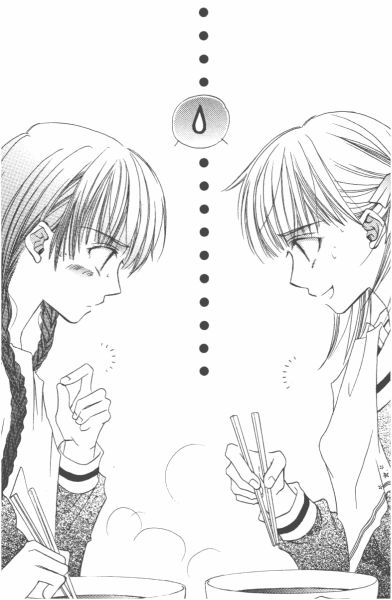
「いただきまーす」
まず、スープを一口。
「......おいしい」
「うん」
しょうゆ味の温かい汁が、胃から身体全体に広がっていくかのようだった。薔薇の館にいる白薔薇さまにも、一口分けてあげたい。
「白薔薇さま、さ」
一口麺を食べた後、由乃さんがつぶやいた。
「何のために、私たちを残したのかな」
「えっ......？」
チャーシューを口に頬ばりながら、祐巳は顔を上げた。由乃さんは、やっぱり解せないって表情している。
「だって『いばらの森』を借りるためだけなら、祐巳さんがさっき言っていた通り、家に持ち帰ればいいわけでしょ？家で読みたくないんなら、帰りの電車の中で読めないこともないし。もし一週間借りたままでいるのが性格上気になるんだったら、普通、借りることを考えないで本屋で買わないかな？」
「借りればただ、だからじゃない？」
四百数十円のお金を出し渋るタイプじゃないけれど、他にそれらしい理由が見つからないので、取りあえず祐巳はそう答えた。
「三人分の缶コーヒー代に百円足せば、『いばらの森』は買えるわよ」
それは、まさにその通りなんだけど。だったら別の考えが浮かぶかっていうと、まったくもってお手上げで。
そもそも事の起こりは何だったのだろう、なんて振り返ってみても、二日か三日か前の発端が、ラーメンの湯気の彼方に霞んでしまうほど遠くに感じられた。お腹が満たされると、もともと優れてはいない思考力が更に低下するらしい。
「じゃあさ。私たちが可愛いから、ラーメンをおごってあげたくなった、とか」
「祐巳さん、脳味噌とけてるよ」
由乃さんは呆れたようにため息をついて、再びラーメンどんぶりに向かい合った。汁を飛ばさないように慎重に、数本の黄色い麺がゆっくりとピンク色の唇に吸い込まれていく。
祐巳は時計を見た。薔薇の館を出てから、約三十分。一時間から三十分を引いて、残りは同じく三十分。
（微妙なところかな）
このままのペースでラーメンをすべて平らげて帰ったなら、どこかで時間をつぶすこともなく約束の一時間を消化することができるかもしれない。
（でも、そうなるとラーメンがかなり伸びちゃう）
かといって、制服に汁が飛ぶのは勘弁してほしいし。結局、由乃さんを見習って少量ずつ淡々と口に運ぶ以外なさそうだ。
たとえ麺食堂への出入りを解禁されたとしても、中高生がこの場所に大挙して押し寄せる危険性はまったくないって断言できる。制服を汚さずラーメンを食べるという技は、相当に難しく、時間もそれなりにかかるものだから。
厨房では、外で休憩していたもう一人の小母さんが戻ってきたようで、本格的に店じまいの支度を始めていた。
６
「コーヒー、あった？」
薔薇の館に戻った祐巳たちへの、白薔薇さまのお出迎えの言葉は、「おかえり」ではなくて「コーヒーあった？」だった。可愛い後輩よりも、コーヒーを待っていたみたいに聞こえて、ちょっとがっかり。
「......ありましたよ」
わざわざ椅子から立ち上がり子供のように「コーヒー」「コーヒー」と連呼して足踏みする白薔薇さまに、祐巳はリクエストの缶コーヒーと小銭入れを渡した。
「そんなにコーヒーが飲みたかったのなら、インスタント・コーヒー作ればよかったのに」
「インスタント、って気分じゃなかったのよね。本当のところ、コーヒー専門店で挽きたてのブルマン注文したい気分」
缶のプルトップ引き上げて、ゴクゴクと喉に流し込んで「ふーっ」と息を吐いた。小さい缶だから、一気で半分以上飲んじゃったんじゃないかと思う。
「インスタント・コーヒー＜缶コーヒー＜挽きたてのコーヒーなんですか？」
「そうよ。由乃ちゃんは違うの？」
「しいて言うなら、種類よりもミルクの量重視ですね。あと、温度」
「マイルド派か。祐巳ちゃんと同じだ」
「私の場合、祐巳さんほど甘党ではないですけれど」
由乃さんは甘さ控えめの缶入りカフェオーレを、顔の横で揺らして「ごちそうさまです」と笑った。
「祐巳ちゃんは何買ってきたのかなー？」
甘党とかそんなこと言われたら、出しにくくなっちゃう。そんな祐巳の様子を面白がって、白薔薇さまは「こら、見せろ」と追いかけてくる。
「その缶入りドリンク、誰のお金で買ってきた？」
まったく、スポンサーは強い。白薔薇さまは祐巳を後ろから羽交い締めすると、すかさず缶を取り上げた。
三、二、一。
「ぶぁっはっはっはっ」
予想通り、きっかり三秒後に、白薔薇さまの豪快な笑い声が薔薇の館の二階に轟いた。
「何、これ。缶入り汁粉!? こんなもの、この世に存在するの!?それに大学の自販機で売っているってことは、ちゃんと需要があるってこと!?」
「......あるんじゃないんですか。こうやって、予備軍の女子高生が買っているくらいですから」
こういう大爆笑には慣れっこになっていたので、祐巳は開き直って答えた。そうです、自分は甘党です。甘党のどこが悪いんですか、って気分。
「なるほど。へぇ......」
白薔薇さまは「こんな物がねぇ」と、缶をまじまじと見つめて感心していた。本当に今まで缶入り汁粉という物の存在を知らなかったようで、世の中には缶入り甘酒というものもあるって教えてあげたら、のたうち回って喜んだ。
白薔薇さまが使っていた窓辺の椅子の側に、新たに二つ椅子を出して三人は向かい合うように座った。ガラス窓を透って入ってくる日光が、ほんのおかげ程度だけれど温かく感じられた。
ここに持ってくるまで熱くて大変だった缶入りドリンクも、ちょうど飲み頃になっていた。
「読んだよ、文庫」
白薔薇さまは、前置きなしでいきなり本題に入った。
「文庫一冊一時間、ですか」
すごい集中力だと誉めると、「日本語だから」って平然と答えてくれる。もしかして原書とかそのまま読んじゃう人なのかな、って思ったけれど聞き返さなかった。側にいる人があんまりにも超人だと、またもや立ち直れなくなってしまいそうだから。
「須加がシュガーだって解けた時、私、一人で笑っちゃったわよ。佐藤と砂糖って、すごい強引じゃない？でも、須加星っていう名前から佐藤聖に思い至った最初の人って、いったい誰なんだろうね」
段カットの髪をかき上げ、気怠そうに笑った白薔薇さまは、いつもとちょっとタイプが違う気がした。うまく説明できないけれど、一枚薄手のカーディガンを着たか脱いだか、それくらい微妙な差なんだと思う。もしかしたら、こっちのバージョンの方がより素に近いのかもしれない、なんていうのは祐巳の勝手な憶測でしかなくて。どんな顔を見せていても白薔薇さまは白薔薇さまで、一人しかいないって結論に結局はたどり着くのだけれど。
缶コーヒーの残りを飲み干すと、白薔薇さまは律儀に缶の中身を水洗いしてから、それを缶専用のゴミ箱に捨てた。さすが生徒会長、ゴミの分別もぬかりない。
「だけれどいい勘しているかもしれない」
「はあ......？」
誰がですか、って由乃さんが聞いた。祐巳同様、白薔薇さまのどこからつながっているかわからない言葉に、クエスチョンマークだったらしい。
「私が書いた、って説を言い出した人のことよ」
白薔薇さまは笑いながら近づいてきて、祐巳の缶入り汁粉を奪って口をつけた。
「あーっ！」
「一口くらいいいじゃない、ケチ」
戻ってきた缶の中身はかなり減っていた。ごちそうしてもらって文句を言うのも何だけど、白薔薇さまの一口って結構大きいかもしれない。
「でも、違うんでしょう？」
兄弟げんかレベルの小競り合いが収まるのを待ってから、由乃さんが話を元に戻した。こういう時の由乃さんって冷静だなぁ、と思う。
「もちろん、書いたのは私じゃない。それはさっき言った通り。去年のこと書いて他人様に見せられるほど強い精神力、私にはないよ」
「でも、いい勘っておっしゃいましたよね？」
白薔薇さまは由乃さんの言葉にうなずいて言った。
「だって、似ているじゃない。私に」
ストレート。
どうってことない一言なのに、なぜか真っ直ぐ絶妙なタイミングとスピードで投げ込まれたって思った。
それ以上でも以下でもないって、言葉の上でよく使われることだけれど。本当にその言葉がぴったりと当てはまる、そんなことは確かにあるんだ。
似ているじゃない、私に。──っていう、白薔薇さまの言葉は、その意味だけをズバリと言い表していて。似ているっていう言葉の中にたくさんの情報が詰まっているんだけれど、でも結局はただ一つの事実を伝えているんだって。漠然と思った。
それで、白薔薇さまの言葉があまりに強すぎて、こちらからそれに返す言葉が見つからなかった。
そうしたら「聞いて、いいよ」と声がした。白薔薇さまが、無口になった祐巳と由乃さんに言ったんだ。
「二人とも、気になるでしょ？ あの小説を書いたのが私だってことになってしまった理由が、名前だけじゃないって薄々気がついているはずよね」
「......」
その通りだったので、返す言葉もない。
白薔薇さまの過去について知りたいっていう気持ち、確かにあった。そのこと自体白薔薇さまに申し訳ないし、ましてやそのことを本人に気づかれてしまうなんて最低。そんなに物欲しそうな顔をしていたつもりは、なかったんだけれど。
「そんな顔見たくて言ったんじゃないんだけどなぁ」
白薔薇さまは椅子にドッカと座り直して、祐巳たちの顎を指先でちょいちょいと持ち上げた。いつもは何とも感じない白薔薇さまの度アップなのに、今日は妙にドキドキした。
「話したくない部分は話さないけど、それでよければ、知りたいことを教えてあげようと思って」
「どうして──」
「だって、何となくでも君たちだけが知らないの不公平でしょ？」
「......」
その理屈、正しいのかどうなのかは置いておいて。そんなふうに言ってしまう白薔薇さまって、やっぱりすごいと思った。
「じゃあ、文庫借りるっていうのは、もしかして私たちを残すための口実だったんですか」
「そんなことない。『いばらの森』を、手っ取り早く読んじゃいたかったのは事実だし。事実無根としても私についての噂が流れている以上、渦中の本を読んでおく必要はあるでしょ」
それでも、上級生たちを先に帰したのは、いらぬ邪魔が入らないようにという心遣いだろう。もしこの場に祥子さまがいたら、祐巳が白薔薇さまの過去について質問するなんてこと、絶対に阻止することだろう。昨日今日の様子を見ていて、予想がつく。
「二・三年生たちが説明しないのは、私のことを思いやってくれているんだと思う。一年前の私はね、そのことに触れられるのすごく厳しかったの。それ、何となく知っている人たちだからね」
いまだに過敏なんだと思う、って白薔薇さま。自分を気遣っている人たちのことを、ちゃんと理解しているんだ。
「私、すごく仲がいい友達がいたのよ。それこそ親や兄弟よりも大切で、その人さえいれば他に何もいらないくらい好きだった」
祐巳は、『いばらの森』のセイとカホリを思い出していた。白薔薇さま自身が似ているって言っただけあって、イメージがぴったり重なった。
「将来はシスターになろうなんて考えている純粋な人でね。でも、去年のクリスマスにいなくなっちゃった」
「えっ!?」
祐巳と由乃さんは同時に叫んだ。
「それじゃ、まるっきり同じじゃないですかっ！」
名前が同じってだけでもすごいことなのに、その上相手が将来のシスターで、同じクリスマスに帰らぬ人となってしまったところまで一緒って。そんな偶然、あるんだろうか。まさかセイっていう名前の人がみんな似たような人生送るわけはないと思うけど。
しかし、それにしても白薔薇さまって、やっぱり『いばらの森』を地でいっていたわけだ。何だかすさまじい。祥子さまたちが触れずにいようとしている気持ち、わかるような気がする。
「まるっきり同じでもないよ。だからあの話を実話だと思われたら、ちょっと困る。私はその友達と一緒に旅にでたりしていないし、だから睡眠薬を一錠ずつ飲むなんてロマンチックな経験もしたことない」
それに『いばらの森』では、最後にカホリが死んだのではないかって匂わせてあったけれど、白薔薇さまの友達は転校したという話だった。
「じゃあ。生きているんですか、......カホリさん」
「何、生きていてガッカリしたの？」
白薔薇さまは、祐巳の額を人差し指で弾いた。まあ、生きていたんだからそれはめでたいことだけど、『いばらの森』でさんざん泣かせてもらった一読者にしたら「なーんだ」って思ってしまうのはどうしようもないことで。──だから、あれは白薔薇さまが書いたんじゃないんだってわかっていても、頭の中でできあがったイメージってなかなか修正できないものだから。
「それに祐巳ちゃん。カホリじゃないよ、彼女の名前は久保栞」
そんなふうに訂正されると、やっぱり白薔薇さまが『いばらの森』のセイではないんだなぁって、思うしかないんだけれど。
それに引き替え、由乃さんは鋭い。
「もしかして白薔薇さまは、誰かが白薔薇さまのことを参考にしてこの小説を書いた、って思われています？」
祐巳なんてただただ驚いているだけで、そういう可能性とかまでには思い至らなかったけれど。そうか、そういうこともあり得るんだ。
「どうだろうね」
白薔薇さまが笑った。
「違う箇所は多々あるし、ドキリとするほど重なる部分もある」
自伝的ってあるわけだからまるっきり作り物ではないだろうけれど、小説の形にする上で多少はフィクションも織り交ぜているはずだから、その辺は何とも言えないらしい。
「自伝的小説、ですか」
それって結構くせものかもしれない。「自伝」は自分の伝記で、「的」は「の」って意味でしょ。で、「小説」っていったら、どっちかっていうと「作ったお話」って感じだし。自伝で、作ったお話、ってもうさっぱりわからない。
「ちょっと待ってください。これって自伝的小説、ということになってますよね。それじゃ、おかしいわ」
由乃さんは、何かひらめいたのか、椅子から滑り落ちそうな勢いで白薔薇さまに詰め寄った。
「な、何？」
乗り遅れまい、と祐巳は横から口を挟んだ。
「だから、誰かが白薔薇さまをモデルにして書いたって線だと、矛盾するじゃない」
「あ、そうか」
『いばらの森』のセイが白薔薇さまをモデルにして描かれたとしたなら、須加星イコール白薔薇さまでなければならない。でも、白薔薇さまはその件に関しては全面否定しているわけだし。そうなると......、そうなると......、どうなるんだ？
「似たことが偶然起こったってことも、あるからね」
白薔薇さまが、つぶやく。そこをすかさず由乃さんが攻める。
「コピーに偽りあり、ってこともあります」
「偽りねぇ」
それからあとは、もう二人のピンポン・ラリー。祐巳なんかはまったく会話に入り込めず、ただ右見て左見てって白薔薇さまと由乃さんを交互に眺めるだけだった。
「ただの偶然にしては、小説中にでてくる学園、リリアン女学園にあまりにそっくりですもの。うちの学校の生徒か、関係者が書いたに違いありません」
「でも、由乃ちゃん。出版社は、嘘つかないよ」
「でも、自分のことを書きましたって作者が言ったら、編集部の記者は信用するんじゃないですか？この須加星って作家、これがデビュー作なんだしプロフィール載せてないんだし、バレるわけないって高をくくっているのかもしれませんよ」
「なるほど」
「なるほど、って。悔しくないんですか？ ご自分のこと勝手に書かれて、そのために作者に間違われて。あげくの果ては生活指導室に呼び出し受けて」
「別に、生活指導室は初めてじゃないから」
「そういうことを言っているんじゃありません」
由乃さんったら、とうとう白薔薇さまの代わりに怒りだしてしまった。気持ちはわかるけど。白薔薇さまったら、全然とんちんかんな反応しているんだもん。
「たとえさ、由乃ちゃんが言うように、誰かが私のことを参考に小説書いたとしてよ、それってどうにもならないことじゃない」
「え？」
「須加星つかまえて、新聞部にでもネタを提供しろっていうの？それとも取材費とかいって、印税の何割か請求するの？」
確かにそうだな、と祐巳は思った。一度世に出てしまったものを、今更人の記憶から消し去ることはできないし。第一、白薔薇さまが動けば、騒ぎがそれだけ大きくなるのは目に見えている。
「私はただ、白薔薇さまが泣き寝入りするっていうのが我慢できないだけなんです」
「泣き寝入りなんてしてないでしょ？ 生活指導室に呼び出されたけれど、単に話を聞かれただけで処分されたわけじゃない。これといって被害はない」
「でも──」
何か言いかけて由乃さんは、口をつぐんだ。
祐巳には、黙ってしまった由乃さんの気持ちなぜだかよくわかってしまった。白薔薇さまは間違いなく被害を受けているんだ、って由乃さんは指摘しかけたんだ。根も葉もない噂だったって証明されたとしても、過去の、触れられたくない記憶を、掘り起こされてさらされてしまったことには変わらない。ダメージ受けていないなんて、そんなの嘘だ。
だけど、たぶんそれを言ってはいけないって、由乃さんは感じたから。だから口を閉ざしたんだ。
過去のこと知られたって気にしてないよ、っていう態度こそが、白薔薇さまのプライドなんだから。
「あのねぇ。私は世界中の人たちにわかってもらわなくていいの。大切な人にさえ、わかってもらえればいいの。わかる？」
白薔薇さまは椅子の上で斜に構えて言った。スカートのプリーツの間から、チラリと覗く組んだ足は、白くて真っ直ぐで格好良かった。
「だから、祐巳ちゃんと由乃ちゃんに聞いてもらいたかったのよ。誤解や憶測を介したままの関係って嫌だから」
「白薔薇さま......」
胸がきゅんとなった。白薔薇さまは今、自分たちのことを「大切な人」だと言ってくれたってわかったから。
外野はどうでもいいんだって、白薔薇さまは言うけれど。本当のところは、これ以上この話題を引きずりたくないって気持ちなんだと思う。
そうだよな。
つらい記憶なら、あまり思い出したくないと思う。死別であろうと転校であろうと、その人が目の前からいなくなってしまったことによって白薔薇さまがすごく傷ついたならば、それは同じことなのだ。
人の心の中の重さなんて、他人が測ることができないんだから。白薔薇さまは、きっと誰よりその人のことが必要だったに違いないんだから。
何か質問あるかって聞かれたから、遠慮なく祐巳は手を挙げた。聞いちゃいけないことだったら、白薔薇さまがそう言ってくれるはずだった。
「転校したお友達は、今どうしているんですか」
「さあ......。どうしているかな」
白薔薇さまは窓の外を見つめた。別れてから一度として会っていないから、って独り言みたいにつぶやいた。
「会いたいですか」
今度は由乃さんが尋ねた。それに対して返ってきた答えは、「会いたい」とか「会いたくない」とかじゃなかった。
「会わない方がいいから」
人と人とのつながりって、そう単純明快にはいかないのかもしれない。
白薔薇さまとその人との間に何があったか知らないけれど、少なくとも白薔薇さまはまだその人のことを好きなんだってわかった。好きだけど、近くにいてはいけない。そんな関係があるなんて、祐巳は初めて知った。
白薔薇さまの本質は、もしかして炎のように激しいのかもしれない。そんなことを、ふと思った。だから、好きな人を火傷させないように遠ざけるのだ。
好きな人を好きなだけ見ていられるって、本当はすごく幸せなことなんだ。
祐巳は、無性に祥子さまに会いたくなった。
７
「祐巳」
終点でバスを降りＭ駅の階段を上りかけた時、背後から聞き覚えのあるよく響く声がした。
（祥子さま......？）
階段に一歩踏み出した片足を下ろして、周囲を見回す。しかし、いくらキョロキョロしても、祥子さまはおろか、リリアンの制服をきた少女の一人も見つけられない。
（空耳？）
会いたい会いたいと思って歩いていたから、祥子さまの声を聞いたような気になってしまったのだ。我ながら単純だな、と思いながら祐巳は再び階段へと向かった。
「何しているの、祐巳。ここよ、ここ」
今度ははっきりと聞こえた。だから大きく振り返り、来た道を数歩戻ってみる。すると、バスターミナルから少し出た道路に、黒塗りの自動車が止まっていて、その後部座席の窓から祥子さまがひらひらと手を振っているではないか。
「ど、どうなさったんですか、お姉さま！」
ピッカピッカの黒曜石みたいな車に祐巳が恐る恐る近づくと、祥子さまの手が出ていた窓がウイーンと閉まり、閉まったと同時に今度は扉がカパッと開いた。
「うわっ、うわっ、うわっ」
祐巳が興奮したのは、格好良く扉が開いたから。──ではなく、扉が開いて現れた祥子さまが、予想外の格好をしていたからだった。
「待っていたの。お乗りなさい」
奥の方に席を移動しながら、当然のように祐巳に命令する祥子さまは。髪をきちんと結って、着物を着て、化粧までして。正真正銘お姫さまと呼ぶにふさわしいお姿だった。
「早く乗って。寒いんだから」
どうしよう、って迷っている暇はない。お姉さまの命令は絶対。靴の底で絨毯を汚したりしないか心配しながらも、祐巳は車に乗り込んだ。
「行って」
祥子さまが運転席にいる人に一言告げると、車は滑るように走り出した。
「あ、あの......？」
「送るわ。家の側まできたら、指示して」
大体の場所はすでに教えてあったのか、運転手さんらしき人は何も告げられなくても駅からの最短距離を選んで車を走らせる。線路の下の地下通路を通って、Ｍ駅南口へ出た。知らなかった。車の乗り心地って、それぞれの車によって全然違うんだ。
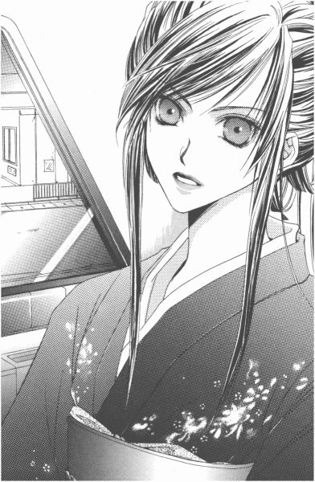
「振り袖なんて着て、何かあったんですか？ああ、お姉さまって制服姿も素敵だけれど、着物姿もものすごくきれい！」
ちょっと興奮してはしゃいでしまったけれど、祥子さまは別に叱ったりしなかった。背筋を伸ばしたまま、小さく笑う。
「これは振り袖じゃなくて、訪問着っていうのよ。父と交流がある日本画家の先生の個展があって、どうしても顔を出さなければならなかったから祐巳たちを残して帰ったのだけれど」
でも、白薔薇さまのことが気になったから、日本画の先生に挨拶だけして帰ってきたという話だった。運がよければ、帰宅する祐巳をＭ駅で捕まえられると計算して、あの場所で待っていたとか。いい読みしている。
それにしても、やっぱり祥子さまって上流家庭のお嬢さまだったんだ、ってあらためて感じてしまった。
上品な藍色に白や桃色の梅の花が描かれた着物に、鳥模様の青みがかった銀色の帯を締めて。十七歳にして「着物着慣れてます」って雰囲気が感じられて、やっぱり七五三とお正月にしか着ない人間とは違うんだなって納得しちゃう。祥子さまは普段から着物着て、お茶やお華なんかのお稽古したりしているんだろうな。
しかし着物を着ていくような日本画の個展って、いったいどんな場所なんだろう。おまけに、皇室の方たちが乗っているのをテレビで見るくらいで、普段あまり町中ではお目にかかれないような、黒塗りの車。白い手袋に帽子を被った運転手さん。足下には、朱だかえんじだかわからない絨毯のような敷物。
「白薔薇さまは、あなたたちに何の用があったの？」
祥子さまは、単刀直入に聞いてきた。だから祐巳も包み隠さず、祥子さまが帰ってからついさっきまでのことをすべて報告した。祥子さまに知られて困るような話は一切なかったし、帰りがけに白薔薇さまから「お姉さまに問いつめられたら、口を割ったっていいからね」って許可されていたことだった。もし駄目って言われたら、令さまべったりの由乃さんはすごく困ったと思う。
「そう......。白薔薇さま、あなたたちに話したの」
祥子さまは、祥子さまこそが秘密を打ち明けた本人のように、肩で大きく息をついて「強い方ね」と言った。
「あの頃私は一年生だったし、白薔薇さまは当時つぼみだった割にあまり薔薇の館には来なかったから、それほど親しくはなかったの。でも、白薔薇さまが栞さんと親しくしていたことは知っていたし、去年の今頃何かあったことも薄々感じていた」
そうそう。白薔薇さまのカホリは、「栞」という名前だった。
「でも。三学期が始まると、栞さんが転校していたことと、白薔薇さまが面変わりしていたことに驚いたわ」
「面変わり？」
「そう。長かった髪はばっさり切られていたし。痩せて、やつれて、抜け殻みたいで、まともに見ることなんかできなかったくらい。紅薔薇さまや当時の白薔薇さまがいたわって差し上げたから、どうにか立ち直られて。あと......、そうね。志摩子の存在も大きいとは思う」
「でも、白薔薇さまったら、志摩子さんには何も言わないらしいですよ。お互い、あまり干渉しないっていうか──」
「そうみたいね」
そこら辺が白薔薇さまに勝てなかった理由だって、祥子さまは笑った。そういえば、以前白薔薇さまと祥子さまで志摩子さんを取り合ったことがあったんだっけ。
「あの二人は、相手が何をしようが何を考えていようが、あまり関係ないの。もっと本質の部分でつながっているから、表面的な部分はどうでもいいっていう感じかしら。そう考えると、特殊な姉妹なんだと思う。姉が妹を教育する本来の姉妹制度の目的から外れた、言い換えれば違う次元に存在しているのではないかしら」
「本質の部分、......ですか」
精神の深い部分で強力につながっているから、何があっても相手の存在価値が揺らぐことなどないという意味だろうか。
「与えないし求めない。強いて言うなら、そこに存在してさえいればいいっていうところではないかしら。最近になって、やっと私もそういうものだってわかってきたけれど」
祥子さまは、たぶん志摩子さんに振られてからずっと、冷静な目であの姉妹を観察してきたのだろう。未練とかじゃなくて、純粋に彼女たちを理解するために。
祐巳は祥子さまの話を聞きながら、何となく崇拝という言葉を思い出していた。そこに存在してさえいてくれればいい、って。まるで神様に対する愛みたい。
中央通りを直進していた車は、交差点をなめらかに右折した。
「別にうらやましくはないわ。そういった形もあるって、認めはするけれど。私には向いていないもの」
さっきから気になっていたらしく、祥子さまは祐巳の方に身体を向き直ると「曲がっていてよ」と髪のリボンに手をかけた。身なりを正されながら、祐巳もそういうスキンシップがあった方がいいって思えた。
それで、「うらやましくない」って言い切った祥子さまの言葉が、自分の中からもわき出してくるのを感じた。
もしかしたら、そんな気持ちの重なり合いって、結構重要なのかもしれない。同じように感じられるから、こうやって祥子さまと姉妹でいられるんだって。
相性って、似ているとか似ていないとか、そんな物じゃなくて、お互いが居心地いい空気を一緒に作り出せるかどうかが勝負じゃないかってぼんやり思った。
いつも利用しているバスが停留場で止まっているのをスイと追い越し、車は丁字路を左折する。コンビニエンス・ストアとか住宅地の中にぽつりと取り残された小さな畑とかの中を、高級車が気取らずに走っていく。
家路も近くなったので、その信号を右とか、突き当たりを左に、とか。運転手さんに指示をして、ようやく我が家の前までたどり着いた。お父さんが設計した事務所兼自宅は、住み心地とか外観とか結構お気に入りなんだけど、さすがに超大金持ちのお嬢さまにお見せするとなると、多少弱気になってしまう。
「すてきなお宅ね」
祥子さまの家は、たぶん外から姿が見えないほど広い庭の中に立っているんだろうな。塀とかものすごく高くて、お庭は植木屋さんとかがしょっちゅう手入れしているような日本庭園とかあって──。あ、駄目だ。だんだん落ち込んできた。
「じゃ、終業式に」
祥子さまには、別れ際の余韻なんてものがまるっきりなかった。まあ、でも、男女の恋人同士じゃないんだから、キスしてさよならっていうのは変だし、かといって握手っていうのも訳わかんないし。第一、そんなポーズをする祥子さまって絶対に嫌だ。
送ってもらったお礼を言ってもらおうと、お母さんを呼びにいきかけると、祥子さまは「その必要はないわ」と言って祐巳を止めた。
「私がこんな格好していたら、ご家族の方はびっくりされてしまうもの。それに、後ろから車が来ているから。今度ゆっくりご挨拶させていただくわ」
「そうですか」
そろそろ夕方。表通りの渋滞を避けるために、この辺りを抜け道として利用する車が増える時間帯でもあった。
「送っていただいてありがとうございました」
「どういたしまして。ごきげんよう」
「......ごきげんよう」
黒い車の後ろ姿を見送りながら、祐巳はぼんやり考えていた。
（祥子さまは、毎日忙しいのかな）
ほんのちょっぴり寂しくなった。終業式に、ってことは、試験休みの間はぜーんぜん会う気ないってことだ。
約一週間、祐巳なんてほとんど暇しているんだから、電話一本くれたらどこにだって飛んでいくのに。それが無理なら、せめて声を聞けたらいいのにって思う。
でも、祥子さまから電話がかかってくるイメージって、いくらがんばっても思い浮かべることができなくて。かといって、こちらから連絡するなんてこと、おそれ多くてできそうもないし。
結局、そうやって一週間が過ぎていくんだなぁって、そういう予測だけはつくからガッカリする。
由乃さんに知られたら、「何で電話くらいできないの」って笑われそうだけど。
今のところ、まだそういう姉妹だからって。
そう思うことにしたから平気だった。
須加星は誰だ？
冷たいという感覚は、それが強くなると痛いという感覚と区別がつかなくなる。そして、何も感じなくなる。
私は、つないだ手がまだそこにあるのかを確かめるため、右手に力を込めた。けれど感覚が麻痺した指先は、カホリの手の手応えどころか、その指自体が確かにそこに存在していることさえ、私に確信を与えてはくれなかった。
同じ時間同じ場所で生を断ち切る決断をすることはできても、死というものは結局個人のものでしかないのだと、思えばこの時に漠然と悟ったのではないかと思う。
１
三日ほど経ったある日の午前中、由乃さんに電話してみたら、遊びに来ないかって誘われて。図々しいと思いながらも、遠慮なく出かけて行くことにした。
別に祥子さまの身代わりではないけれど、本当は駅前にでも呼び出してファーストフードでハンバーガー食べながら一緒に頭の中整理できたらいいな、なんて思っていた。でも由乃さん、お昼過ぎまで家のお留守番しなきゃいけないらしいから。
近所のパン屋でミートコロッケサンド二つと、カップに入ったサラダ二種類買って、いつも通学に使っているバスに乗った。Ｍ駅の南口に着いたら改札を横目に見ながら北口に出て、これまたお馴染みのバス。でも今日は、リリアンの生徒は一人もいない。
同じバスなのに、全然違う雰囲気だった。窓の外の風景も、何だか新鮮に見えたりする。
校門の前には、約束通り由乃さんが待っていた。
「ごきげんよう」
「ごきげんよう」
お互い制服じゃないのに、ついいつもの挨拶を交わしてしまって肩をすくめた。
由乃さんは、黒いハイネックのセーターに膝丈の黄色いタータンチェックのプリーツスカート、それに黒いタイツをはいていた。制服の時も思っていたんだけれど、色白だからすごく黒が似合う。
「あー。祐巳さん、男物着てる！」
「へっへっへ。由乃さん、目ざといね」
祐巳はグレーのキュロットスカートの上に、生成のセーターとブルーの薄手のコートを羽織ってきたんだけど、セーターとコートは弟のクローゼットからちょっと拝借してきたのだった。持つべき物は、サイズの変わらない兄弟。お返しに女物を借りられない祐麒には気の毒だが、頼まれればスカートでも何でも貸してあげる準備はある。
普段と違う格好で会うと、それだけで話が弾んでしまう。髪型だって、今日は二人とも二つに結んでないし。由乃さんが入院していた時もそうだったけど、何か変な感じ。
徒歩十分とか、それより少ないかもしれない時間で、由乃さんの家に到着した。
垣根を巡らした結構広い敷地に、『島津』と『支倉』の表札が仲よく並んでいる。門は二つあって、そこからそれぞれ玄関まで石畳を伸ばしているけれど、庭は中でしっかりつながっていた。
「これって、お隣っていうより──」
「うん。むしろ二世帯住宅って感じよね」
二軒並んだ裏側には、令さまのお父さんの道場があって、支倉家とつながっているという。夕方になると近所の小学生なんかが剣道を習いにくるので、結構にぎやかになるんだって。
「入って」
由乃さんはガラガラと横開きの扉を開けた。鍵は閉まっていなかった。不用心なんじゃないかな、って大きなお世話かもしれないけど思った。
「おじゃましまーす」
玄関を入って、すぐの階段を上がる。
「ねえ、そういえば由乃さんお留守番していなくちゃいけなかったんでしょ？よかったの？私を迎えにきたりして」
祐巳は由乃さんの後をついていきながら、尋ねた。
「平気平気、お留守番のお留守番頼んできたから」
「へ？」
焦げ茶色の渋い扉を開けると、そこには──。
「あ、お帰りー」
なんて、コタツでくつろいじゃっている 黄薔薇のつぼみが一人。
「れ、令さま！」
「え、何、祐巳ちゃん!?」
由乃さんったらどっちにも内緒にしていたらしくて、お互い不意打ち食らったように名前呼び合って固まってしまった。
しかし、それにしても。由乃さんと令さまって、本当に近しい存在なんだなぁって、実感しちゃう。だって、家のお留守番なんか頼めちゃうわけだから。
（比べちゃだめ、比べちゃだめ）
「あ、祐巳さん。今頭の中で、祥子さまに留守番させてみたでしょ」
「なぜ、それをっ！」
「顔に書いてある」
由乃さんって、勘がいいから気をつけないと。「どうぞ」ってコタツの布団めくり上げて席を勧めてくれる無邪気な笑顔に、ついつい騙されがちだけど。捕り物とか推理小説とかも愛読している彼女は、女探偵だって思っていたほうがいい。
由乃さんの部屋は、あまり飾りっけがなかった。壁はアイボリー、机とか棚とか窓枠とかはすべて焦げ茶。そこにもってくるカーテンやベッドカバーやコタツ掛けなんか、全部淡い色無地なもんだから、若い女の子の部屋って感じじゃない。レースや花柄を持ってくるだけで、すごくロマンティックな部屋になりそうなのに。でも本棚にずらっと並んだ文庫本のタイトルが「○○捕物帖」とか「剣客××」のままでは、乙女の部屋も台無しだけど。
「祐巳ちゃんが遊びにくるなんて、知らなかった」
ちょっと失礼、ってコタツから出て令さまは中座した。
（うーん。ジーパン姿の令さまも、なかなか格好いい）
お尻の位置が高くて、足がスラッと長くって。しかし制服でもナニな令さま、こうなるともう完全に男にしか見えない。
タンタンタンタンって、規則正しく階段を下りていく足音を聞きながら、由乃さんは小声で言った。
「テストの最終日、家に帰ったら、令ちゃんが居間で待ち伏せしてた」
令さまも祥子さま同様、放課後何をしていたか気になって帰ってすぐに由乃さんに報告させたらしい。これだけ近いんだから、当然といえば当然だけど。ちょっと鬱陶しくないかな、と思ったら由乃さん満更でもない顔していた。──仲がいいのは結構なことだ。
「私、あれからいろいろと考えたんだ」
由乃さんは真面目な顔で祐巳に告げた。
「白薔薇さまはああ言ったけれど、やっぱり『いばらの森』の作者が白薔薇さまじゃないっていう証明はしたほうがいいと思うの」
「もう、その話なしにするんじゃなかったの？」
「でも白薔薇さまのためになるんだったら、個人的に調べておいてもいいじゃないかな」
「由乃さんの言っていること、よくわかんない」
白薔薇さまのためになるかも、って。その白薔薇さまが「もういい」って言っているのに。それに個人的に調べるとかいっても、白薔薇さまに内緒で事を運ぶなんて不可能だと思うんだけど。
まあ、それでも由乃さんがすごくその気になっているから、話だけは聞くことにした。
「新聞部の部長......、築山三奈子さまの言葉が気になって仕方ないのよ」
「三奈子さまの言葉って？ ......ああ、白薔薇さまが退学になるかもしれない、って話？でも、そんなはずないって言ったの由乃さんでしょ？」
「あの時はそう思ったけど──」
学校側が不当な処分するはずはないとは思うけれど、って由乃さんはつぶやいた。白薔薇さまが「自分じゃない」って言った言葉を、どこまで信じてくれるものかって心配しているらしい。
「それに、試験休みの最中に先生たちが『いばらの森』を読んだとするでしょ？白薔薇さま本人でさえ、自分のことみたいって言っているのよ。一年前のこと知っている先生だったら、白薔薇さまが書いたって信じちゃうんじゃないかな」
「でも白薔薇さまが違うって言い続ければ......」
無実の罪で裁かれるなんてこと、学園内で起こるわけない。魔女裁判じゃあるまいし。
でも、由乃さんは祐巳の意見に同意しなかった。
「白薔薇さま、言い続けないかもしれない」
「どうして？」
「『いばらの森』読んだから」
「え？」
「だから、『いばらの森』を読んだからよ。白薔薇さま、気が変わって罪を認めちゃうかもしれない。理由はね、友達を庇うため。なぜなら『いばらの森』の作者、須加星の正体は久保栞さんだからよ」
「えーっ!?」
何かすごいことを由乃さんは言い切った。予想外の言葉に、なんかビックリしすぎてうまく反応できなくなってしまった。
「じ、じゃあ栞さんがセイで、白薔薇さまがカホリなわけ？」
「そうじゃなくて。相手の視点から書いたってこと」
そりゃ確かに彼女も当事者だから、仮に『いばらの森』を書いた本人ならば自伝的って言えないこともないだろうけど。そうか、物語がセイの側から書かれているから盲点になっていたんだ。
「でも、それって本当のことなの!?」
コタツに身を乗り出して確認すると、由乃さんはカラリと笑って答えた。
「ただの憶測」
「なーんだ」
「でもね」
自伝的小説っていう看板に嘘がないという前提のもとに考えたら、そういう結論に達したそうだ。
「まず可能性は三つあったわけ」
「三つ？」
祐巳は首を傾げた。三つなんて、そんなにあるんだろうか。
すると説明しようか、って由乃さんが笑ったので、祐巳はお願いしますって頭を下げた。
「まず一つは、『いばらの森』って小説は白薔薇さまとは全然関係ない作者によって書かれた自伝的小説だってこと。その場合須加星と佐藤聖という名前の類似性とか、かなり共通しているエピソードなんかについては、まったく偶然の一致ってことになるわね」
確かに似たようなことを経験した人がいなかったとは言い切れないけれど、と由乃さんは言った。学校の様子までもリリアンそっくりだと、ちょっと無理があるのではないかって。
「リリアンの在校生か卒業生だという可能性は？」
「範囲を限定すれば、ますます確率は低くなるでしょ」
「あ、そうか」
偶然の上に偶然が重なる。これほど似ていることが、狭い範囲でそんなに何度も起こりうることなのだろうかってこと。だったら、かえって同一人物って方が信憑性がある。
「そこで二つ目。白薔薇さまが書いたってこと」
「でも、白薔薇さま書いてないって」
「そう。だからこの線はなし。私も白薔薇さまの言葉信じられる。それで残った三つ目が」
須加星、久保栞同一人物説。
「白薔薇さまもそう思っているのかなぁ」
「わからない。でも、どっちにしろ今の状態は宙ぶらりんで、厳しいんじゃないかな。栞さんが書いていないと信じるにしても、もし『いばらの森』が彼女の目に触れたとしたらって考えたりするんじゃない？」
「栞さんは、白薔薇さまが書いたって思うよね」
うん。それはかなり厳しいかも。
でも、別れてからその人と一度も会っていないから、会わない方がいいと決めているから、白薔薇さまは誤解を解くことができない。
「だから、それを含めて私たちが須加星の正体を突き止めたらいいんじゃない？白薔薇さまは、『いばらの森』に関わるの、きっと怖いと思うから」
試験休みの今なら比較的自由に動けるし、って。
それで、一番最初の個人的に調べておいてもいいんじゃないかって話につながるわけだ。何だか、由乃さんの話にうまいこと引きずり込まれそうな気がした。
「お待たせ」
令さまが戻ってきたので、話は一時中断した。
「日本茶でいい？」
お盆をいったん床の上に置いてから、「どうぞ」って両手でお茶をもって祐巳の前に置いた。しかも、お茶碗に蓋と茶托がついている本格的なスタイル。
「令さまが、お茶のサービスを......」
「ん？ ああ、自分の家のようなものだからね」
さすがに祐巳も、今回ばかりは祥子さまが我が家の台所でお茶入れている図っていうのは想像してみる気が起こらなかった。
（......わ、お茶菓子まである）
何だかおいしそうなプチケーキが、菓子皿にきれいに盛りつけられていた。
不意のお客さまに、これだけのおもてなしができるかと問われれば、正直いって祐巳にはできそうもない。第一、お菓子の買い置きが我が家のどこにあるとか菓子皿の保管場所とか、まったく全然知らないし。
「令さまって大人の女の人みたい」
「それはどうも」
外見は完璧美少年のその人は、満足そうにほほえんだ。
「──でね、私電話してみようと思って」
突然、由乃さんは中断していた会話を再開した。
「電話って、何の話？」
お茶を出し終わって去りかけた令さまが、小耳に挟んで扉の辺りから舞い戻ってきた。
「コスモス編集部に決まっているじゃない」
由乃さんは、けろりと言い切った。
「本気!?」
「うん。令ちゃんも協力してね」
可愛らしく小首を傾げる由乃さんの横で、令さまはガクッとうなだれた。
「こそこそ犯人探しみたいな真似するなんてよくないよ」
しかし、由乃さんは強気だった。令さま相手に、ぐいぐい迫る。
「白薔薇さまのこと心配しているだけじゃ何にもならないじゃない。それに、こそこそなんかじゃないもの。白薔薇さまに断らないってだけの話でしょ」
「それがこそこそだっていうの」
「白薔薇さまが関わりたくないっていうだけで、どうして私たちの行動まで規制されなきゃいけないの？」
ポンポンポンって言いたいこと言えちゃうんだ、ここの姉妹。何か別の一面見せてもらったみたいで、ちょっと得した気分なんだけど、このまま口論を止めなくてもいいものかどうか。そこが祐巳にとっての、思案のしどころだった。
「正体を隠したがっている人の素顔を暴きたいなんてこと、由乃は本気で思っているの？」
「暴くなんて言い方しなくても」
「だってそうじゃない」
「そうじゃないもん、令ちゃんのばか」
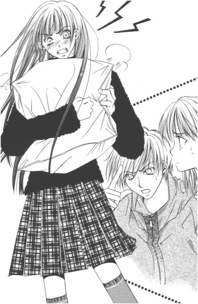
あろうことか由乃さんったら、令さまに向かってクッション投げつけた。
（おいおい。口で勝てないからって暴力に訴えるのは間違っているよ、由乃さん）
令さまは慣れているって感じで、片手でクッションをナイスキャッチした。
「いい加減にしな。せっかく祐巳ちゃんが来てくれてるのに」
（えー、話を私に振る!?）
「別に見られたっていいじゃない。これが、私たちのありのままの姿なんだから」
そういう令さまの外面を気にするところとかが、ますます気に入らないらしくて。キャンキャン吠える小犬みたいに、由乃さんったらわめき散らして収拾がつかなくなってしまった。
今日初めて知った。
由乃さんて、完全な内弁慶だったんだ。
２
それで結局どうなったかというと、令さまが折れた。
というより、根負けした。
『いばらの森』の作者探しには相変わらず反対意見でありながら、由乃プラス祐巳だけで無謀な行動を起こされるくらいなら、お目付役として加わりましょうって、そういう形になったわけだ。
（しかし、いつの間に私が由乃さんの仲間に入れられちゃったんだ？）
自分ははっきりと意思表示した覚えはないんだけど、って祐巳は首を傾げた。でも、どっちにしろ暴走した由乃さんを止めることなんか、もう誰もできない。
手始めに由乃さんは、「電話してみようと思う」を実行することにした。
「由乃さん、編集部の電話なんて知っているの？」
おもむろに電話の子機に指をかけるものだから、心配して尋ねてみる。
「電話番号案内で宮廷社の代表番号聞いて、まずそこにかけてみる」
由乃さんは当たり前のようにそう言った。すると、それを受けて令さま。
「ちょっと待ってて。三分でいい」
何かを思いついたように、部屋を出てまっしぐらに階段を駆け下りていった。暇つぶしに時計を見ながら待っていると、きっかり三分後に部屋のドアが開き、令さまは手に雑誌を携えて戻ってきた。
「ほら、これ」
差し出されたその本は、漫画の月刊誌くらいの大きさで半分ほどの厚みの雑誌だった。表紙にはお花に囲まれた少女のイラスト。タイトルは漢字で四文字『秋桜友達』。
「あきざくらともだち？」
由乃さんと祐巳は、同時にそう読んだ。
「コスモスフレンドって読むの。コスモス編集部で出してる隔月誌」
「令ちゃんの愛読誌？」
「そんなことはどうでもいいから、ここ見て」
令さまは、雑誌を裏返して裏表紙の端を指し示す。そこには小さい文字ながら、コスモス編集部の直通電話番号が書かれていた。
「すごい、令さま」
「さすがお目付役」
由乃さんは、さっそくピポパと印刷された番号をプッシュする。
『はい、コスモス編集部です』
七回コールで、相手方の応答があった。祐巳も令さまと同じようにして、由乃さんの側に引っ付いてもれてくる声に耳を傾けた。
「あの、コスモス文庫の読者なんですけれど。ちょっとお聞きしたいことがあって、お電話したんですが」
『あー、申し訳ありません。ちょっと今、コスモスの者はみんな出払っているんです。午後にでももう一度かけ直していただけないでしょうか』
若い男の人って感じの、軽い声。
「あの、午後っていうと──」
由乃さんは時計にチラリと目をやった。午前十一時五十分。宮廷社のお昼休みって、普通より早いのだろうか。
『そうですね、一時か二時でしたら誰かいると思うんですが』
「わかりました、かけ直します」
由乃さんは外線ボタンを切って、「はぁー」と息を吐いた。勢いつけて電話したのに、フェイントって感じだった。
「そういえばさ」
令さまが言った。
「出版社とかって、九時五時じゃないって聞いたことある。深夜まで仕事することもざらだって」
「深夜まで仕事して、それで朝は何時に来るの？」
「だから、午後なんじゃない？ 出勤してくるのが」
「......一時か二時に」
「......うん」
「......」
野球選手とか水商売とか、そういう人なら活動時間がずれているって、頭の中で了解してはいたけれど。出版社みたいな普通の（と一見思われる）会社のサラリーマンが、午前さまになるまで働いて午後出勤するなんて。何か不思議で。大人の世界には、子供のとはまったく違う時間割が存在しているんだ、なんて思ったりする。
誰も感想らしい感想を述べられないまま、正午になったので、祐巳の買ってきたサンドイッチとサラダを三等分してランチにした。
「ところで。編集部に問い合わせてみたとして、教えてくれるものかな」
甘くて温かいロイヤルミルクティーでパンの耳部分を喉に流し込みながら、祐巳はふと気になったことを口にした。ちなみにこのロイヤルミルクティーは、由乃さんが入れてきてくれたもの。この家の娘としては、さすがに隣家のお姉さんに二度三度と飲み物の支度をさせるわけにはいかないだろうけれど、由乃さんはあまりそういうこと気にする人ではなさそうだから。どちらかといえば須加星探しを黙認してくれた令さまへのささやかなお礼の気持ち、それを形に表したみたいに感じられた。だって、とっても丁寧に入れてあったから。
「まず、無理だと思うな」
令さまはパンが入っていたビニール手提げ袋の店名を眺めながら、当たり前でしょって感じでつぶやいた。
「この店のパンおいしいね。祐巳ちゃんの家の近所？」
「ええ、そうですけど。......やっぱり作者のことなんて、簡単に教えてくれないですよね」
しみじみ。放っておくと茶飲み友達の会話みたいなほのぼのとした空気になりそうなところを、由乃さんが割って入って喝を入れる。
「そんなの、話のもって行き方次第よ。二人とも、やる気あるの!?」
「やる気、って言われても......」
「......ねぇ？」
やる気あるのか、と問われた二人は顔を見合わせた。イケイケなのは、最初から由乃さんだけなんだけれど。
「ちなみに、由乃さんの言う話のもって行き方って？」
尋ねてみると、まあ見ていなさいって子機を手にしてリダイヤルボタンを押した。
「由乃、嘘言って聞き出すのはなしだよ」
たまらず令さまが口を挟む。
「わかってるって、うるさいなぁ」
一時から十五分過ぎていた。
ピポパポピ。
最近の電話は賢いから、ボタン一つ押しただけで、もう記憶していた番号にかけてくれている。
「あ、もしもし」
比較的早く、電話はつながった。由乃さんは先ほどと同様に読者であることを告げ、『いばらの森』の担当編集者に代わってもらいたいということを丁寧な口調で言った。
「あ、そうですか。いいえ、結構です」
さっきみたいに受話器に近づいていなかったから、相手方の声はこちらまで聞こえなかった。だから、由乃さんの反応で会話の内容を想像するしかなさそうだった。
「実は私の学校では、今『いばらの森』のせいで騒ぎになっているんです。......ええ、ある先輩が書いたのではないかっていう噂が広まってしまって。ほら、『いばらの森』を書かれている須加星先生は、プロフィールの記載が一切ないでしょう？その先輩、以前に似たような経験をしているので──」
こんな調子で、由乃さんは学校はアルバイト禁止で、先輩は呼び出しを受けて生活指導の先生からきつく問いただされた、ってオーバーに説明した。書いていないという証明がなされなければ、退学にもなり得るのだ、って切々と訴える。まあ最初に三奈子さまがそう脅したんだから、まるっきりの嘘ではないけど──。
「はあ。......ええ。......そうですか。ええ、わかります。......そうですね。......はい。お手数おかけいたしました。失礼します」
その間、約五分。問い合わせの電話としては短いのか、長いのか。とにかく由乃さんはお礼を言って電話を切った。
その表情から見て、不首尾に終わったことは明らかだった。
「そういう問い合わせには一切応じられません、って。退学云々という事態になっているっていっても、学校側からの正式な照会がなければ答えてはもらえないらしい」
「そりゃそうだわ」
「嘘いって聞き出そうっていう人も、いるんでしょうね」
前途多難。三人は腕組みして「うーん」って唸った。
とにかく、須加星についての問い合わせはかなり多いようだ。由乃さんの話では電話に出た人は担当編集者ではなかったそうだが、口調がなめらかで、対応し慣れているって感じだったらしい。
「しょうがない」
由乃さんがコタツからガバッと立ち上がった。祐巳は令さまとほぼ同時に、「諦めるの？」って尋ねた。それならそれでいいんじゃないかな、って二人とも思い始めていたところだった。
「まさか」
しかし、由乃さんは不死身らしい。逆境はむしろ、彼女のエネルギーを増幅させるべく作用するようだ。
「電話じゃ、らち明かないわ。編集部に行きましょ」
「え────!?」
どうしてそんなに元気なんだ、由乃さん。つい最近まで心臓悪くておとなしくしていた人と、同一人物だとはとても思えない。さては来るべき日のために、さなぎのようにじっとして力を蓄えていたんだな。
「『編集部に遊びにきたいお友達は、連絡してね』」
今にも出かける勢いの由乃さんに向かって、令さまは雑誌『秋桜友達』を両手で持ったままボソリとつぶやいた。
「──とここに書いてある。編集部に用がある場合は、アポがいるんだよ」
「じゃあ、今度は令ちゃん電話して。今日そっちにいって『いばらの森』の編集者に会えるように話つけて」
「どうして私が」
「だって、さっき電話したのと同じ声だったら、警戒されるじゃない。今日初めて電話しましたって雰囲気でお願い」
「えー。でも由乃の我がままなのに」
そう愚痴を言いながら子機を受け取ってしまうところが、令さまの甘いところだ。「だったら祐巳さん」と言われたらどうしようかと思ったけど、由乃さんは向き不向きをちゃんとわかっているらしい。
礼儀正しい言葉遣いで、令さまはコスモス編集部に電話をかけた。さすがに今日電話してその日のうちに訪ねていくっていうのは無理らしくて、友達と相談してまた電話しますって切った。
「どっちにしろ、担当の人は今日は編集部にいないらしいし」
「ふーん、わかった」
そう言ってうなずいたので、由乃さんは今度こそ諦めるんだろうなと思ったら。
「じゃ、直接行ってみよ？」
当たり前のように、そう言った。どうして、そんな考えが浮かぶんだろう。今日は来るなっていってるんだから、ここはゆっくり対策を立て直すのが正解なんじゃないかな。
「例えばその編集さん。須加星と打ち合わせして、ちょうど帰ってきたところに会えるかもしれないじゃない」
由乃さんは鼻の穴をふくらまして熱弁した。しかし、そんな奇蹟みたいな話がそこらへんに転がっているはずはない。作家さんは出版社の中で仕事しているわけじゃないって、知らないわけないのに。
「それに、駄目でもともとだし」
「もともとじゃないよ。交通費つかって、寒い思いして、それで駄目だったら報われないじゃない」
その通り。祐巳は、大きな拍手を令さまに送りたい気持ちだった。
「祐巳さんも、そう思うの？」
それに気づいたのか、由乃さんがチラリと冷ややかな視線を向けた。
「えっと......」
（まいったな）
答え如何によっては爆発しそうな勢い。由乃さんが弾けるとちょっと面倒だな、ってとっさに計算はできた。ヒステリーなところは祥子さまといい勝負だし。
「今日はやめておいた方がいいかなぁ、って思うんだけど。それにほら、由乃さんお留守番しなきゃいけないでしょ？」
「届く予定の宅配便さえ受け取れば、鍵かけて出かけちゃってかまわないのよ」
「宅配便、来たの？」
「まだ、だけど」
「じゃ、だめじゃない」
この線でいけそうだ、と祐巳は思った。令さまも由乃さんに見えないように、「行け行け」ってポーズして応援していた。
「......今日は無理かなぁ」
由乃さんがつぶやいたまさにその時。ピンポーンと妙に明るいインターホンが、二階のこの部屋まで届いた。
「ラッキー」
由乃さんは、勝ち誇ったようにほほえんでから、階段を軽快に下りていった。
３
午後三時過ぎ。
三人は、三様の面もちで宮廷社の前に立っていた。
突撃、って感じの由乃さん。それを止められなかった自分のふがいなさを猛省している令さま。そして先を読めずにここまで来ちゃったけど、内心「どうなっちゃうんだろう」の祐巳。
ＪＲで新宿まで出て、そこから地下鉄。Ｊ駅の地上出口からは、社ビルの正面玄関まで、カップラーメンができるくらいの早さで到着してしまった。
思ったより、ずっと大きなビルだった。だから、ここで本の印刷までやっているのかと勘違いして、令さまと由乃さんに大爆笑されてしまった。印刷は印刷所がやるんだって。そりゃそうだ。
「さ、行くわよ」
由乃さんが先頭きって、玄関目指し歩いていった。ガラス張りの自動ドアが、滑るように開く。
「いらっしゃいませ」
入ったと同時に、受付にいた二人のお姉さんが華やかな笑顔を向けた。顔で採用されたって言い切れるほど、二人ともものすごい美人だ。
受付嬢の奥には、体格のいいたぶん警備員さんと思われる男の人が控えていて、その後ろにもう一つガラスのドアがあった。社内に入るには、そのドアを通過しないといけないらしい。
「あの。コスモス編集部の方にお会いしたいのですが」
いくら「突撃」態勢の由乃さんとはいえ、警備員なぎ倒してこの関門を突破するつもりはないとみえて、受付に直行して用向きを述べた。
「はい。お約束がございましたら、こちらの用紙にご記入ください」
差し出されたその紙は、図書館の予約票みたいな仕様で、訪問者の名前とか電話番号とか書く欄があった。由乃さんはその紙を受け取って、受付脇の筆記台で途中まで記入したが、やがて諦めてボールペンを置いた。どの編集部の誰と何時に約束しているかっていうことまで、書かなければならなかったからだ。
「すいません。約束はしていないんです」
「は？」
中途半端に記入された用紙を受け取りながら、受付嬢は首を小さくひねって由乃さんの言葉を繰り返した。
「約束は、していらっしゃらない......？」
「はい。コスモス文庫の編集部の方にどうしてもお話を聞いていただきたくて」
「作品の持ち込み、とか」
「いいえ。ただの読者です」
祐巳は会話を聞きながら、出版社っていうところは「持ち込み」をする人たちもやって来るんだ、って感心してしまった。由乃さんに引きずられるようにしてここまで来ちゃったけれど、けっこういい社会科見学になったなぁ、なんて。
「こちら受付ですが──」
話を聞き終わると、受付嬢は内線電話らしき受話器を取り上げ、コスモス編集部に、アポなしの読者が訪ねてきている旨簡潔に伝えてくれた。
「少しお待ちくださいね」
電話を切ると、三人に向かってニッコリと笑った。子供相手に、ちゃんと応対してくれるところはプロだなぁ。祐巳の予測では、まず受付嬢のところで弾かれちゃうと思っていたんだけど。
そうしている間にも、玄関は結構な数の人の出入りがあった。よく観察していると、祐巳たちのように用紙に記入して受付に取り次ぎを頼む人と、社員証のような物を機械に通して受付を素通りする人と二種類いることがわかった。
十分ほどして、ジーパンにトレーナー姿のちょっと小太りな男の人が現れた。
「君たち？ コスモス文庫に用があるっていうのは」
雰囲気とか格好とか、身の回りにいないタイプなので、いくつくらいの年の人なのか、全然見当がつかなかった。その人が編集部の人だって聞いて、ちょっとガクッときた。だって、これだけ大きな会社の社員が、スーツ以外の姿で現れるなんて思わなかったから。
「今日はちょっとバタバタしていて、ゆっくりお相手できないので、日を改めて来てもらえないかな。予約って形でその時間あけておくから」
「いえ、一つだけ教えていただければいいんです」
「何だろう。作家のプロフィールだったら、ちょっと教えられないけど」
由乃さん、軽く出鼻をくじかれてしまった。コスモス文庫のお兄さんの先読み、さすがとしか言いようがない。
「『いばらの森』が自伝的小説っていうのは間違いないんですよね？じゃあ作者の須加星さんは、元リリアン女学園の久保栞という人じゃないでしょうか？」
由乃さんは、ものすごい早口で一気に言った。
（おいおい、質問は一つじゃなかったのか......）
おまけに。教えられないって前置きされていたことを、そのままストレートに聞いちゃって。たぶん、半分ヤケになっているんだと思う。
「そういう質問すごく多いんだけれど、須加星先生の場合それなりの理由があって表に姿を現さないわけなんだからさ」
「でも、知っている人かそうでないかくらい教えてくれても」
「固有名詞挙げるから当たりかはずれか答えろ、っていうのいちいちやってたらきりないよ」
前例をつくったら、みんなに同じことをしなければいけなくなる。それはよくわかる。うんうん、って納得していると、由乃さんはまたすごいことを発言した。
「須加星さん本人が答えてもいいって言ったら、いいんですか？」
「そりゃ、まあ」
でも、そんなことはありえないって顔して編集部の人は笑った。
「じゃあ、須加星さんに聞いていただけませんか。私はリリアン女学園の島津由乃っていいます。佐藤聖さんの一大事なんです。久保栞さんかどうかだけでも答えていただけないものか、って」
「だめだめ。そんなことできないよ。それこそ例外じゃないか。それにね、僕は担当編集者じゃないんだから。......とにかく、この件は諦めてください」
ああ、この人もう完全に締めの態勢に入っている。「今後もコスモス文庫をよろしく」なんて言って、さようならするつもりだ。
その時。
「あら、山岸さん？」
背後で自動扉が開いたかと思うと、女性の声が聞こえた。
「うわっ」
三人の前にいるトレーナー＋ジーパン氏が実は「山岸さん」だったようで、呼ばれてあわててビクッと背筋を伸ばした。でも「うわっ」ていうの、いったいどういう返事だろう。
「どうしたの？ あらま、可愛い女の子たちに囲まれて」
振り返るとキャリアウーマンって感じの若い女性が、ニコニコほほえんでいた。ほぼ同時に入ってきた人は、例の用紙を受付嬢からもらって筆記台で記入しているのに、この女性はそのままこちらに向かって歩いてくる。
（この会社の人なのかな......）
すると山岸さんは、どういうわけか突然落ちつきをなくした。近づいてくるその女性に、来るな来るなってそんな仕草にさえ見える。
この人が好きで、それであわてているのかとも思ったけれど、それはちょっと違うみたいだ。
「こんにちは」
山岸さんを無視して、その女性は三人に挨拶をした。
「ごきげんよう」
口癖とは恐ろしい。「こんにちは」と言われても、学校の仲間が側にいるせいか、祐巳はつい「ごきげんよう」って返してしまった。そうしたら令さまも由乃さんも、それにつられて「ごきげんよう」って挨拶した。
「きゃー、素敵。ごきげんよう、って。『いばらの森』の世界！」
無邪気にはしゃぐ女性の横で、山岸さんは力つきてガクッと床に膝と手をついた。
「あら、ちょっとどうしたの？ 山岸さん。私、なんかいけないこと言った？」
山岸さんは答えなかったけれど、態度で白状しちゃっている。この女性、山岸さんが言って欲しくないことを言っちゃったんだ。
「ビンゴ」
令さまがつぶやいた。そしてその女性を正面からとらえて、慎重に尋ねた。
「失礼ですが、『いばらの森』の関係者でいらっしゃいますね？」
「あーっ......」
山岸さんの、悲鳴のようなため息が低い位置から聞こえてきた。
４
キャリアウーマン風のその人の名は、佐々木さんといった。
佐々木さんは、脱力しきった山岸さんから大まかな事情を聞くと、「なるほど」とうなずいた。ちょうどいい時に帰ってきちゃったのね、と。
「確かに、私は須加星先生の担当しているけれど。でも、誰に聞いても同じよ。仮にも編集部の人間が作家の秘密を教えるわけないじゃない。それに、申し訳ないけれど私これから仕事があるし──」
佐々木さんが腕時計にチラリと視線を落とした時。
「ねえ」
突然、外野から話に加わってきた人物がある。筆記台で用紙に記入していた女性だった。
「いいじゃない、佐々木さん。話だけでも聞いて差し上げたら？」
受付嬢に用紙を手渡し、代わりにバッジのような物をもらったその人は、三人の女子高生とコスモス編集部の二人が溜まっている場所にハイヒールでさっさっと歩いてきた。小柄で痩せている。遠目ではわからなかったが、近くで見ると結構なお年のご婦人だった。
「仕事っていったって相手は私なんでしょ、少しくらいならお時間いいわよ」
「でも、春日さん......」
思わぬ助っ人に、コスモス編集部の二人はあわてふためき困惑模様。
「何でもかんでも、だめって言ってシャットアウトしてはいけないわ。ちゃんと話を聞いてそれに対してちゃんと納得できる事情を説明するくらいの気持ちの余裕は、お互いに必要じゃない？」
ちょうどお祖母ちゃんくらいの年代かな、って祐巳は思った。これくらいの年の人ってお節介でお説教が多いから。おかげさまで、今回は助かったけれど。
「その代わり、口添えしてあげたんだから私も同席して話を聞いていいでしょ？」
若い人の話聞きたくて、って人懐っこそうにほほえんだ。可愛い小母ちゃま、って感じの人。
もちろん、って三人は力強くうなずいた。このご婦人がいなければ、きっと佐々木さんだって話を聞いてくれやしない。
成り行きを見ていた佐々木さんは、「やれやれ」とため息をついた。
「聞くだけで終わっちゃうかもしれないけど、いいのね？」
「はい」
「わかった。じゃ、立ち話も何だから、ロビーに行きましょうか」
受付嬢に空いている席を確認して、佐々木さんは受付脇からつながった喫茶店のような場所に案内してくれた。山岸さんは「俺しーらない」って感じで、さっさと逃げてしまったので、仕切りに囲まれたボックス席には女五人が納まることとなった。
通路を通った時、別の席がチラリと見えたんだけれど、二人の男の人がテーブルに広げた漫画原稿のようなものをはさんで難しい顔をしていた。
由乃さんは。
促されるままに、白薔薇さまを「先輩」、栞さんをその「お友達」という代名詞を使って今までの事情を説明した。佐々木さんはそれに対して、「それで？」とか「うんうん」とか相づちを打ちながら、最後まで真剣に聞いてくれた。聞き上手、ってこういう人のことをいうのだと思った。
「なるほど。あなたたちはその先輩の無実を証明したいだけで、興味本位で須加星という作家の正体を調べようとしているわけではないのね。そのことはよくわかったわ。でもね、あなたたちが動かなくても大丈夫なのよ」
「え？」
令さまと由乃さんと祐巳は、アニメの中に出てくる三つ子みたいに、笑っちゃうくらい同じ動きで首を傾げた。
「佐藤聖さんって方、いいお友達をいっぱいもっていらっしゃるのね」
老婦人がほほえむと、辺り一面が紗をかけたように華やいだ。年をとったらこんな風に上品な表情で笑えるようになれたらいい、なんて思う。
「──って、ちょっと待ってください！」
由乃さんがテーブルに手をついて身を乗り出した。
「私、一言も『佐藤聖』なんて言っていませんけど!?」
（......あっ！）
祐巳も、やっとそこで気がついた。由乃さん、白薔薇さまとも佐藤聖とも言っていなかった。なのに、どうしてこのお婆ちゃんが知っているの、って当然の疑問だ。
「リリアン女学園の白薔薇さま。佐藤聖さんの名前を知らない人間は、コスモス編集部にはいないわ」
佐々木さんが、苦笑まじりに説明してくれた。
「四、五日前からコスモス編集部に、須加星の本名は佐藤聖かって電話がたくさんかかってきているのよ」
で、「若いお嬢さんたちは行動力あるわね」なんて感心しているこちらの老婦人がご存じなのは、さっき佐々木さんとお昼を一緒に食べながらそのことが話題になったからだそうだ。白薔薇さまは、本人が知らないところで超有名人になっていた。
「須加星を覆面作家としてデビューさせた時、まさかこんなことになるなんて考えてもみなかったから。佐藤聖さんには、不快な思いさせてしまったわ」
「名前の発音が一緒だった不幸」
「本当に」
佐々木さんと老婦人が口々に言ってうなずいた後、肝心なところを確認せずばなるまいと令さまが尋ねた。
「あの、それでは佐藤聖さんが須加星先生ではないってお認めになるんですね？そして、学校側はすでに承知している、と？」
「そういうことになるわね」
「リリアン女学園が、正式に照会してきたんですか」
「いいえ違うのよ。それがね──」
老婦人は言いかけて、隣で牽制している女性の視線に気づいて「言っていいでしょ」って聞いた。
「だめって言っても、おっしゃりたいんでしょう？......その代わり、三人とも絶対にこのことはオフレコよ」
佐々木さんがわざと怖い顔をして唇に人差し指を立てたので、祐巳たちはあわてて大きくうなずいた。
「それがね」
まず中断した場所に言葉を戻してから、老婦人は説明をしはじめた。
「昨日、ある人物からコスモス編集部に問い合わせの電話があったんですって」
「ある人物？」
「ええ。それが誰なのか、今は伏せておきましょう。それでその人物は佐藤聖以外の名前を挙げて、須加星の本名ではないかって尋ねたの。コスモス編集部の人たちは、その名前を聞いて驚いた。どうしてだかわかる？」
「須加星先生の本名だったんですね」
由乃さんが慎重に答えた。
「その通り。そして、問い合わせてきた人物の正体を知ってもっと驚いた」
「『いばらの森』の、もう一人の主人公だった、とか」
「大正解。三日前『いばらの森』を読んで、そこに書かれていることは自分のことだってわかったそうよ。でも、音信不通となっていた友人の連絡先がわからなくて、それで編集部に連絡をとったわけね」
祐巳はその時、電話してきたのは白薔薇さまだって思った。白薔薇さまが、久保栞さんイコール須加星であるって確信して、そして確かめようと行動を起こしたんだ。
「久保栞さんが、須加星先生ですか」
祐巳より先に、令さまが聞いた。
（ビンゴ！）
心の中で叫ぶ。
ジグソーパズルの最後のピースがぴったりとはまった気がした。頭の中に、冷たいいばらの森の風景が広がって、もう間違いがないって確信した。
でも、そこで佐々木さんは、思いも寄らない言葉をつぶやいた。
「誰、それ？」
そして、追い打ちをかけるように老婦人も。
「久保栞さん......ってどなた？」
一瞬ストップモーションがかかったように、ボックス席が凍った。
言葉で確認しなかったものの、由乃さんも令さまや祐巳と同じ答えに達していたことが、一番固まっているその表情でわかった。
「ちょっと待ってください......」
頭の中を整理するように、額を押さえて一度うつむいた由乃さんは、やがて脱力した表情で答えを導き直した。
「久保栞という名前を編集部の方がご存じないということは、つまり佐藤聖さんは『いばらの森』とは何一つ関係ないということですか」
脱力もするだろう。今まで、須加星ではなくても小説のセイは白薔薇さまだって、ずーっとずーっと思いこんでいたんだから。
ガラガラガラガラ。
できあがったと信じていたジグソーパズルが、音をたてて崩れていった。こんなことがあっていいのか、って。
「そうよ。それはさっき言ったでしょう？」
老婦人は当然のように主張したけれど、さっき聞いたのは佐藤聖が須加星ではないってことだけであって、佐藤聖が『いばらの森』とぜんぜん無関係だって話はたった今初めてでた話だった。
「でも、学校側が白薔薇さまの無実を知っているっていうことは──」
「そうよ、祐巳さん。編集部に連絡してきた人物って、リリアン女学園に関わりあるんだわ」
祐巳は由乃さんと一緒に興奮しちゃったけれど、「じゃあ、それは誰？」って問われれば、たった一人の候補者さえ挙げることができなかった。
「ちょっと待って」
令さまが、ぶつぶつとつぶやいた。
「ある人物って『いばらの森』でいうカホリなわけでしょ？じゃあ、やっぱりあの小説はリリアンが舞台ってこと？でも、それおかしくない？私たちは、その線を真っ先に除外したのよ？だって白薔薇さま以外に、それらしき人が見あたらないから」
それに、カホリの方が学校側にいるっていう矛盾。それともやっぱり書いたのがカホリで、学校に残っている方がセイなのか。
（あー、もう頭が爆発しそう）
普段から難しいこと考えて頭を鍛錬しないと、この先二年以上も残っている高校生活を乗り切れないかもしれない。
「どうしたの、もうお手上げ？」
佐々木さんはともかく、もう一人のご婦人はクイズ好きなようで、祐巳たちが推理をする様を楽しそうに眺めている。考えてみれば、少なくともこの二人の女性は、すでに答えを知っているわけだ。
降参、って手を上げたいところだけれど。由乃さんが許してくれそうもないので、やめた。令さまは根っからの勝負師だから、こういう時絶対に白旗上げそうもないし。
「そこにいるはずの人がいない」
令さまがつぶやいた。
「え？」
「場所はリリアンなのに、そこにいるはずの人がいない。それって──」
「......タイムマシーン？」
由乃さんが答えた。正解を見つけた、って顔をして。そして、令さまも「それだ」って大きくうなずいた。
タイムマシーン。
とっさに、セイとカホリがタイムマシーンに乗って未来だか過去だかに消えてしまったなんてことを考えた祐巳は、脳味噌にスが入っていた。由乃さんは、ただ喩えとしてその言葉を使ったにすぎない。
「時代が、ものすごく違うんだわ。そうよ。それこそ、噂も残らないくらい」
セイとカホリがリリアンにいたことは確かなら、どうして自分たちは知らないのか。
何年か前の出来事だったとしても、それ相応の事件ならば伝説のように語り継がれていくはずではないだろうか。
白薔薇さまの噂だって、何も知らないはずの一年生の間に浸透していた。白薔薇さまが卒業したら、噂はきっと伝説になる。伝説は時間の経過とともに神話化し、そしてそれさえも長い時間の中で風化する。
「タイムマシーン。なるほど、その通りかもしれない」
老婦人のつぶやきに、由乃さんと令さまは同時に反応した。
「お嬢さん二人は、もうわかったようね？」
二人は半信半疑の面もちで、それでもちゃんと老婦人を見てうなずいた。
（ちょ、ちょっと待ってよ。二人して、どうしてそんなヒントでわかっちゃうわけ？）
一人置いてけぼりの祐巳は、心底あわてた。
もしかして、自分は理解力ゼロなんじゃないだろうか。今まで国語のテストが平均点だったのは、漢字の書きとりとか選択問題でのまぐれ当たりとかそういう偏りがあったとか。
時代が違うって、そこまではかろうじて理解できたけれど。そこから、どうやって答えを導き出せるというんだろう。
タイムマシーンは、どこに二人を運んだか。
セイとカホリは、いったいどこの誰なのか。
「もう一人のお友達が悩んでいるわよ。教えて差し上げたら？」
もう一人のお友達であるところの祐巳は、懸命に考え中だった。由乃さんも令さまもわかった。ヒントはたぶんそこら辺に落ちているはず。
重要なのは、このボックス席についてからの会話だ。それも向かい側の席にいる、世代の違う二人の女性の発した言葉の中にある。
一人は二十代後半から三十歳くらいの女性。宮廷社コスモス編集部の佐々木さん。
もう一人は、年齢不詳。たぶん六十から八十までには間違いなく含まれると思うけれど、お洒落で上品なお婆ちゃん。名前は、佐々木さんが何だか呼んでいたみたいだけれど、忘れてしまった。
（あれ......？）
一度、目をそらしてから、それでも気になってその人を見た。
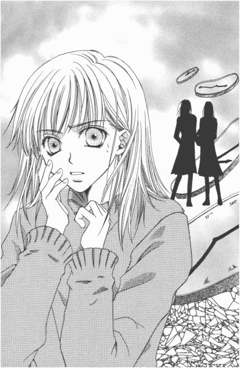
この人、いったい誰なんだろう。
佐々木さんのお仕事関係の知り合いで、たまたまこの場に居合わせた人で。ちょっとお節介で、知りたがり屋のお婆ちゃん。
（......にしては、事情通すぎない？）
考えてみれば何だか、このご婦人の存在だけがこの場には不自然で。なのに浮いているって感じは全然なくて、むしろ一番なじんでいるっていうか。自分の家に招待した女主人みたいに、この場を自由に仕切っている。
「ま、まさか」
みんなが忘れてしまうくらい大昔って、いったいどれくらい前のことだろう。十年、二十年、三十年。いや、もっともっとさかのぼらないと行き着けないかもしれない。
五十年、六十年前に青春時代を過ごしてきた人たちは、今いくつくらいになっているのか。
この老婦人くらいの年齢ではないのだろうか。
「正解よ」
すぐ顔に出る質の祐巳に、その人はよくできましたという笑顔をくれた。
「じゃ、あの、あなたが──」
肯定されたもののやはり信じられなくて、祐巳は口をぱくぱくさせながら尋ねた。
「私が須加星です。ご愛読、どうもありがとう」
嘘みたいな話だけれど、由乃さんの喩え話が現実となってしまった。
須加星が、打ち合わせがすんで担当編集者と一緒に宮廷社に戻ってくるかもしれない、って。由乃さんは予知能力が備わっているのか、それともそのパワーで未来をこっちに引き寄せてしまったのか。
取りあえず、エスパーである疑いは捨てきれない。侮れない友達だ、と思った。
５
「あれはね、新聞沙汰になったほどの事件だったのに、皮肉なもので戦争のおかげで忘れられたの」
須加星こと春日せい子さんは、遠い目をして言った。
説明されれば「何だ」って感じだけれど、ペンネームの須加星は本名のはじめと終わりの一字を取って別の漢字をあてたという、ごくごく単純な方法で命名されたものだった。
カスガセイコがスガセイに。何度考えても、やっぱり「なーんだ」だ。
サトウセイがシュガーセイになってスガセイに落ち着く「佐藤聖、須加星説」の方がひねりが利いていていいんじゃないかな。
でも、ご本人は佐藤が砂糖でシュガー（須加）って変化したことは、祐巳たちが言うまで気がつかなかったそうで、佐々木さん共々ボックス席でお腹抱えて大笑いしていた。ただ単純に、セイって名前の音が同じってだけの話かと思っていたらしい。
「あの......。新聞沙汰っていうことは、あの話はやっぱり実話なんですか」
由乃さんの質問に令さまが「失礼よ」ってたしなめたけれど、春日さんは別に聞かれて嫌なことではないらしかった。
「今の少女たちが共感できるように時代背景は現代に置き換えて書いたし、名前なんかは多少変えてはいるけれど、内容はほぼ同じよ。カホリだって本名は佐織という名前だったし、私はせい子でしょう？」
まだ関係者で生きている人もいるし、まるっきり同じっていうのはまずいだろうっていう配慮らしい。
ってことは、二人で心中しようとしたってことは事実なわけだ。でも目の前のお婆ちゃんが、そんなに激しい人だったなんて信じられない。
誰にも探されないように、二人手をつないで森の奥へと入っていって、そして一粒ずつ睡眠薬を口に入れていった、って。こことは別の世界で、永遠に離れずいられるように、と。
「でも、ラストが間違っていたらしいのよ」
らしいのよ、って春日さんが他人事みたいに言った。『いばらの森』書いた本人が、そんなふうに言うのっておかしいじゃないかと思ったけれど、話を聞いて納得できた。
「佐織が生きていたって、昨日連絡を受けるまで本当に知らなかったのよ。彼女も私が死んだと思っていたらしくて。だって地方紙に私たちの事件が小さく載ったのを回復してから見せられたんだけど、それには『一人死亡、一人重体』ってあったんだもの」
「一人死亡？」
「名前は伏せられていたから、自分が生きているなら相手が死んだと思い込むわよね」
春日さんはカラカラと笑った。
「どうして、そんな記事が......」
「偶然の誤報だったの。昨日図書館行って過去の新聞記事調べてきたんだけれど、翌日の新聞にお詫びと訂正が載っていたわ。でも、両親たちがそれをうまく利用したんだと思う。そうでもしないと、二人を別れさせられないものね」
「えー、そんな」
「まあ、娘のことを思ってしたことでしょうけれど。せめて死ぬ前に打ち明けてほしかったわね。でも、父は脳いっ血であっけなく逝っちゃったし、母は長生きしたけど晩年は痴呆症だったから仕方ないかしらね」
それで、「セイとカホリ」ことせい子さんと佐織さんは、お互いに死んだと思い込んで何十年もの間生きてきたのだ。
「そうだわ。じゃあこうしましょう、春日さん。『いばらの森』の続編書くんです」
佐々木さんが、急に仕事用の顔を作って提案した。
「ある日、死んだと思っていたカホリから連絡があるんです。そこから、話が始まるって感じで......」
「そうねぇ。でも、現実の方が追いつかないわ」
今度、春日さんは佐織さんに会いにいくのだそうだ。何十年か前に離ればなれになった、クリスマス・イブに。
「ここまでちゃんと生きてきたから、神様がプレゼントをくださったのかもしれないわね」
今後、須加星さんに関する問い合わせには、コスモス編集部でもう少し柔軟に対応するということだった。実はさっきお昼ご飯食べながら、春日さんと須加さんはそういう相談もしてきたらしい。
基本的にプロフィールは明かさないけれど、勘違いした人にはちゃんと本人ではないという回答をするって。そうすることによって、今後白薔薇さまと同じような誤解を受ける人が少なくなるはずだ。
ところで。須加星が覆面作家としてデビューしたのは、二つ理由があるそうだ。
一つは春日さんは今はある会社の会長さんやっていて、本名で作家のお仕事をすると差し障りがあるっていうのと、もう一つは『いばらの森』のセイのイメージを守るために作者のプロフィールを一切伏せたということだった。自伝的っていわれれば、読者の少女たちは作者本人の今の姿を見たいと願うものだから。そこでお婆ちゃんが姿を現したら、夢が壊れちゃうって考えたんだって。
でも、祐巳は、目の前にいる春日せい子さんを見て、セイのイメージが壊れたなんて思わなかった。
だって、こんなに素敵なお婆ちゃんなんだから。
またお会いしましょう、と言って春日さんと佐々木さんはビルの奥の方に消えていった。時計を見ると午後の五時半で、宮廷社の受付もそろそろ閉めるということだった。
「また、だって」
由乃さんが笑った。
「本の中でかしら」
令さまがつぶやいた。
「あ」
自動ドアが背後で閉まって、一歩歩き出そうとした時、祐巳は突然思い出した。
「ねえ、佐織さんて今現在リリアンとどういう関わりがあるの？」
「あ」
「あ」
由乃さんと令さまが、輪唱のように小さく叫んだ。
引き返そうにも、ガラス扉の鍵がまさにかけられたところで、緊急事態というわけでもないから無理矢理「開門」なんてドアを開かせるわけにもいかない。それに仮に開けてもらっても、佐々木さんたちを再度呼び出してもらうほどの度胸もないという、ないないづくしだったので、ここは諦めて帰ることにした。
とにかく今日はいろんなことがありすぎて、三人ともすでに心身共にくたくただった。早く帰ってお風呂にでも入りたい。そうしないと、頭の中の整理ができそうもない。
実際祐巳がそのようにして頭の中を少しずつ整理整頓し始めると、またもや大事なことを思い出した。
（......サインしてもらうんだった）
ああ、もう。今更、ってことばかりで、嫌になった。
イブに会えたら
心の中のいばらの森に、今でも私は眠っている。
十六歳のまま変わらない白いカホリの身体とともに、私は自分の心をそこに残してきたのだから。
１
十二月二十四日。
この日はクリスマス・イブであると同時に、リリアン女学園高等部二学期の終業式でもある。
今日は楽しいクリスマスって世間はにぎやかだけど、夜家族でケーキを食べるくらいで別にこれといって予定がないから、気持ちの上ではそれほど盛り上がっていないし。明日から冬休みっていっても、昨日まで試験休みだったからあまり休みのありがたみもない。
そんなことより、終業式には成績表が返ってくる。成績なんてどうでもいいっていうくらい頭のいい人たちはあまり気にならないかもしれないけれど、その他一般でくくられそうな生徒にとっては大事なわけで。我が家は違うけど、成績でお年玉やお小遣いの額が上下したりするところもあるらしいから、人生かかっている。
「あーあ」
「祐巳さん、今朝何回目のため息かしら」
カシャ。
蔦子さんが今シャッターを切ったカメラを「どうだ、おニューだぞ」って前に出しながら、祐巳の机の前に登場した。まるで印籠をかざす黄門さま。おい、助さんと格さんがいないと様にならないぞ。
「ふっふっふ。蔦子さんは知っている。その大きなため息の理由ってやつを」
ちょうどいい退屈しのぎを見つけたとばかり、蔦子さんは楽しそうに言った。
いつもよりだいぶ早く学校に着いてしまった朝。今日は簡単なホームルーム、その後お聖堂でイブのミサがある、というスケジュールだ。
「祐巳さんのお悩み、その一。成績表」
「まあね」
採点済みのテストはまだ返ってきていないけれど、手応えっていうのでだいたい予想はつくものだし。テストは日頃の理解度を知るための参考にすぎない、なんて先生方の言葉、全面的に信じられるほど純粋ではないから。
「その二。まだ出していない年賀状」
「あっ！」
思わず大声がでた。出してないどころか、その存在自体忘れていた。白薔薇さまの一件で、いろいろなことがお留守になっていたのだ。試験が終わったら年賀状、ってお母さんから三十枚はがきもらって机の引き出しに入れたまま。よくも今日まで思い出さずにいたものだ。年賀状はお早めに、なんてテレビコマーシャルぼんやり見ていたはずなのに。
「祐巳さん、とうとう痴呆症か」
困ったわね、と言いながら、またもやカメラをカシャ。おいおい、老人なんか撮って楽しいか？
「でも、ため息の一番大きな理由は、 紅薔薇のつぼみよね」
「──」
そうなのだ。
約一週間ぶりに会えるということで、今朝は興奮して早起きなんてしてしまった。だけど、校門の前で祥子さま待ち伏せするなんて図々しくも大胆な行動はとてもとれなくて、グズグズしながらとうとう教室まできてしまった。
ばかだなぁ、せめて廊下にいればすれ違うチャンスもあったのに、って。後悔することだったらいくらでもできるんだけれど、「まだ間に合うから」って行動起こせるほど強気になれるものならはじめから苦労しない。
（それに）
今日が終業式ってことは、明日からまたしばらく会えないということで。一度会ってしまえば、今度はさよならする時のことばかり考えてしまいそうだった。
試験休み前の祥子さまの態度から想像するに、今度は年越して来年の始業式まで会えない可能性が大で。大どころか、確定って感じだから。
寂しいな、って思う。由乃さんのところみたいに、歩いて何歩の世界に住んでいないし。白薔薇さまや志摩子さんみたいに淡泊じゃないから、会わなくて平気なんて思えないし。
学校が休みで寂しいなんて思ったこと、もしかして生まれて初めてかもしれない。祥子さまは、全然こんな気持ちにならないのだろうか。
何だか、不公平な気がした。
２
二学期の成績は、心配していたほど悪くはなっていなかった。
だから、って全然心の中のもやもやが晴れないっていうことは、やっぱり原因のほとんどは祥子さまにあったということだろう。
イブは、生徒たちのために昼間ミサが行われる。基本的に自由参加だけど、たくさんの生徒が出席する。
無宗教の人たちをもにわか信者にしてしまうこの日、カトリックの学校に通っている人間がおろそかにしてはいけない。男性とおつき合いしていて、今日これからデートという生徒だって取りあえずミサには出る。出席しない人たちの理由はたいがい、家族と一緒に別の教会のミサに出かけるからとか、ボランティアで施設のクリスマス会に参加するからとかで。結局リリアンの生徒って、基本的に真面目だったりする。
「おーい、こっちこっち」
お聖堂の、結構前の方の椅子で白薔薇さまが手を振っている。
同じクラスということもあって、連れだってやってきた志摩子さんと祐巳は急いで「こっち」というその場所に向かった。ミサが始まる前で人の出入りがあるとはいえ、神聖なお聖堂でのオーバーアクション。すぐにやめさせないと、呼ばれたこっちの方が恥ずかしい。
「席あるから、座って座って。ほら、祐巳ちゃんはここ」
白薔薇さまが指し示した場所を見てギョッとした。ちょうど一人分空いた空間の隣には、祥子さまが座っていたのだ。
「お、お姉さまっ......」
「何、驚いているの。失礼ね」
驚きもしますとも。
だって会うのはミサが終わってから薔薇の館でって勝手に想像していたもんだから、ちょっと不意打ちって感じ。まさか白薔薇さまがメンバー全員の席取りしているなんて思わないもの、目立たない端とか後ろとかの席に座って、密かに祥子さまの後ろ姿を探そうなんてイエズス様に申し訳ないような不純なことを考えていた。
「お姉さま、お久しぶりです。あ、ご挨拶がまだでした。ごっ、ごきげんよう」
「静かにして、お座りなさい」
祥子さまは冷ややかに告げた。
「......はい」
帰宅した主人に、うれしさのあまり飛びついて怒られた飼い犬の心境。ああ、でも怒られたって側にいられた方がいいから幸せ。
お行儀よく祐巳が座ると、すでに志摩子さんは白薔薇さまの横の席にごく自然に納まっていた。腕と腕が、触れるか触れないかそれくらいソフトに。当たり前のように、そこが志摩子さんの定位置って感じだった。
三奈子さまが言うところの『白薔薇事件』ではあるが、試験休み明けの今日、思ったよりずっと騒ぎは治まっていた。白薔薇さまが一年生たちにきっぱり否定したのがよかったのか、それともコスモス編集部の対応に納得したのか。もしかしたら、ただ単に飽きられただけかもしれないけれど。とにかく、クラスでももう白薔薇さまの話題は取り上げられていなかった。一週間前に話題に乗り遅れてしまったクラスメイトたちが、今頃『いばらの森』を読んでいたくらいだ。
新聞部も、記事にできなかったみたいだし。
「休みの間、元気にしていて？」
正面を向いたまま、祥子さまが尋ねた。
「あ、はい」
「どうしているか気になってはいたのだけれど。無茶なこと、してはいなかったでしょうね」
何でもお見通し、ってことなのかな。その通りだから、何も言い返せないんだけど。
「信用していないわけではないのよ」
顔見ていないのに、今日の祥子さまは祐巳の心を読めるみたい。小さく笑って、言葉を補った。
「信用していても、会えない間は妹のことを心配してしまうものなの。特に、今回は父の仕事の都合で日本にいなかったから」
「は？」
「フランスに行っていたのよ」
新宿にでも行っていたみたいに、さらりと言うので。「ああ、そうなんですか」なんて気の利かない答えしか返すことができなかった。
だけど。
そうか、祥子さまは日本にいなかったんだ。
だったら、試験休み中一度も会えなかったのは当たり前で。一人で寂しがったり拗ねたりしていたのがばかばかしく思えてきた。
聖歌隊が入場してきて、もうじきミサが始まるから今は言わないけれど。後で、休み中にあったこと全部話そうって決めた。
祥子さまがそれほど興味を示さなかったとしても、構わない。そうしたら早口で話してすぐ終わればいい。
取りあえず、こっちからもアクションをおこさないと。
こんなところだけ似た者姉妹で、二人ともあと一言、いつでも言葉が足りないようだから。
３
「これ、いったい何なんですか？」
薔薇の館に一歩入ったとたん、祐巳は中の風景に目を見張った。
「何、って。クリスマス・パーティーでしょう？」
黄薔薇さまが、「何を今更」って顔して答えた。
「くりすます、ぱーてぃ？」
「祐巳ちゃんはまだ幼いから、そこら辺の事情を知らないかもしれないけれど。イエズス様の誕生日の前の日には、日本では神代の時代からパーティーを開く習わしになっているのだよ。理由なんて野暮なこと聞いちゃいけない。そういうきまりなんだから」
なんて、後から入ってきた白薔薇さまが、祐巳の耳もとで囁いた。──もう、完全にからかっている。誰もクリスマス・パーティーの意味を聞いてやしないし、その説明にしたってめちゃくちゃだ。
めちゃくちゃといえば、この部屋で。
パーティーだから飾りつけようっていう趣旨はわかるんだけど。幼稚園のお遊戯会でもしないようなすごい小道具で部屋中が飾り付けられている。
（クリスマスというより、むしろ七夕）
折り紙を切って作ったイカリングのような鎖とか、紙テープ丸めて作ったクッキーみたいな星とか。紅薔薇さまなんか楽しそうに、画用紙にホイル貼ってこしらえた王冠被ってティッシュの花なんか作っている。
（一周回って、元に戻っちゃったのかなぁ）
あまりに先端進みすぎると、こういうものがいっそ新鮮に感じるのかもしれない。
不思議な人たちだから、できるだけ驚かないようにしているんだけど。それでも日々驚かされている気がする。
「祐巳ちゃんさ、パーティーの相談していた時にぼんやりしていたからね」
令さまは、ロールカステラにココアで色づけしたホイップクリームをぺたぺた塗って、即席ケーキを作っている。
フォークで木肌の模様を描いて、小枝の形チョコを飾ると──。
「ブッシュ・ド・ノエルだ！」
「市販の材料で作ったわりに、豪華でしょ？」
令さまは得意げに笑って、クリームのついたフォークの先を祐巳の口の中にそっと入れてくれた。甘くて、ちょっとほろ苦い味が、舌の上でほろほろと溶けていく。
「何か、お手伝いすることありますか」
流しは由乃さんと志摩子さんが占領していて入るところないし、幼稚舎の子供みたいな顔して飾り付けしている紅薔薇さまの楽しみ奪っちゃ申し訳ないし、ケーキ作りのアシスタントなんかできそうもないし、下手にテーブルセッティングに手なんか出すと黄薔薇さまに怒られそうだし。
祥子さまはミサの後教室に忘れ物を取りにいったきりで、まだ薔薇の館に来ていなかった。
「お仕事欲しい？」
すっかり忘れていたけどまだ背後に張りついていた白薔薇さまが、祐巳の首に腕を回しながら言った。
「だったら、ちょうどいい仕事がありまっせ。ほな、行きまひょか」
「......」
いったい、どこの人のつもりなんだ。
「あの、具体的に何を──」
「いいからいいから。おとなしくお姉さんといい所に行こうね」
「いい所っ!?」
有無を言わせず、白薔薇さまは祐巳を羽交い締めしたままずるずると引っ張っていく。その様子を見ていながら、メンバーたちは誰一人助けてくれないどころか「行ってらっしゃい。遅くならないでね」なんて手を振って見送っている。こんな調子だから、白薔薇さまがやりたい放題するんだ。
（志摩子さーん。自分のお姉さまにはちゃんと首輪つけてつないでおいてよー）
でも志摩子さんには祐巳の心の叫びは聞こえず、何の話で盛り上がっているのか由乃さんと流しで洗い物をしながら大爆笑していたのだった。
薔薇の館を出ると、白薔薇さまはやっと解放してくれた。
「まずは下足箱ね」
「は？」
「君の使命は、速やかにカメラちゃんを探すことだ」
（カ、......カメラちゃん!?）
腰が砕けた。牛乳飲んでいる最中だったら、間違いなく鼻の方に行っちゃってた。
「......カメラちゃんって、もしかして武嶋蔦子さんのことですか」
恐る恐る伺いをたててみると、そうだという。
「あの子の場合は、蔦子ちゃんというよりカメラちゃんの方が通りがいいんじゃない？」
「はあ──」
でも祐巳は、間違っても蔦子さんのことをカメラちゃんなどと呼ぶ勇気はない。
「蔦子さん見つけて、どうするんですか？」
「カメラちゃん探すのに理由は一つ」
「......パーティーのカメラマンにするつもりですね」
「人聞きが悪い。パーティーにご招待するだけでしょ？カメラの持ち込み可、ってことで。本人涙流して喜ぶよ」
さっさと探さないと帰っちゃうじゃない、ってせかすから、まあ蔦子さんの趣味にも貢献できるということだし、ここは白薔薇さまの指示に従うことにした。
靴用の小型ロッカーの中には、まだ蔦子さんの外履きが残っていた。冬休みを前に女子高生の撮りだめをしているのかもしれない。
「マリア様の前かな」
白薔薇さまが言った。
「夏休みとか冬休みとか、休みの前っていうのは、姉妹の儀式が盛んだからね」
それに、今日はクリスマス・イブ。ロザリオを授受するには、これ以上ないほどの絶好のシチュエーション。
蔦子さんの場合本人が儀式するわけじゃなくて、そのシーンを隠し撮りするところに問題があるんだけど。
「どうします？」
マリア様の前まで迎えに行ってもいいけれど、行き違いになる可能性があるし、フェイントでまだお聖堂あたりにいるかもしれないし。
「ちょっと外出てみようか」
上履きのまま昇降口から外に出ると、白薔薇さまは舐めた人差し指を上に向けた。風向きなんかで、蔦子さんの居所がわかるわけないのに。
「ややっ、あっちの方角から誰か来る」
耳のいい白薔薇さまの言葉通り、図書館の角を曲がって人が現れた。残念ながらそれは蔦子さんではなかったけれど、祐巳が知っている人物だった。
「春日さん!?」
駆け寄ると、アイボリーのコートに焦げ茶の帽子を被ったその人はなつかしそうに顔を上げた。
「あら、誰かと思ったら。......福沢祐巳さんでしたっけ？」
「はいっ。その節はお世話になりました」
「祐巳ちゃん、お知り合い？」
ゆっくり追いついた白薔薇さまは、ちゃんとした上級生モードで「いらっしゃいませ」と挨拶した。
「ごきげんよう」
春日さんは、たぶん何十年か前には毎日友人たちとかわしていたであろう言葉で、それに応えた。
「えーっと。こちら春日さんっておっしゃって、リリアンの卒業生で──」
どこまで話していいものか迷っていたけれど、白薔薇さまは別に詮索などせずに「後輩がお世話になりましたそうで」ときちんとお礼を言って頭を下げた。
「佐藤聖と申します」
白薔薇さまの自己紹介を聞いて、春日さんは一瞬だけ驚いていたけれど、すぐにほほえんで「そう、あなたが」とだけつぶやいた。
「ああそうだ。よろしければ、これから薔薇の館にいらっしゃいませんか？仲間内でクリスマスのパーティーをやるんです」
白薔薇さまは、とても気さくに初対面のお婆ちゃんを誘った。この人が何者か、全然知らないはずなのに。
「ありがとう。でも、これから人と会わないといけないのよ」
春日さんはそう言って申し出を辞退したものの、校内で迷子にならないように道案内してくれないか、って白薔薇さまに言った。
「いいですよ、私たちでよろしければ。ね、祐巳ちゃん」
「あ、はい」
もしかしたら春日さんは、もう少し白薔薇さまと話をしたかったのかもしれない。
だから祐巳は来客用玄関までは一緒に行ったものの、そこから先は白薔薇さまにお任せして、一人で蔦子さんを探しにいくことにした。
「どちらまでご案内いたしましょうか」
「学園長室にお願い」
二人の姿を見送りながら、何だかわからないけれど、祐巳はとても興奮した。春日さんと白薔薇さまが、今並んでリリアン女学園の校舎内を歩いている。
目に見えないタイムマシーンが、ここにある。
でも、不思議。
もしかしたら白薔薇さまが須加星だという噂がたたなければ、佐織さんは『いばらの森』を読むことがなかったかもしれない。
もし『いばらの森』を読まなければ、もちろん宮廷社に電話して問い合わせるなんてことしなかったろうから、春日さんたちは相手が生きているって知らずに一生を送ることになったかもしれなくて。
（あれ......？）
校舎内に戻って廊下を歩きながら、ふと考えて足を止めた。
（学園長室？）
春日さんは、学園長室に何の用があって行ったのだろう。
学園長室っていうのは、文字通り学園長がいる部屋だから、当然学園長に会いに行ったんだろうな、って予想はつくけれど。
（ちょっと待って、春日さんはクリスマス・イブは確か佐織さんに会いに行くって言っていたんじゃ......。それに学園長の名前って、確か──）
シスター・上村。上村佐織。
祐巳は振り返って、来客用玄関からつながる廊下の先を見た。
春日さんの姿は、もうそこにはない。──まるで幻だったみたいに。
祐巳はその場で、呆然と立ちつくしてしまった。
「祐巳？」
肩を叩かれて振り返ると、そこには祥子さまが立っていた。
「あっ!? え、お姉さまっ！」
「ちょうどよかったわ。一緒に薔薇の館にいきましょう」
「えっと、でも今......」
事情を話すと、祥子さまは心配いらないって教えてくれた。
「武嶋蔦子さんなら、今しがたスキップしながら薔薇の館に向かったわよ」
どこで嗅ぎつけたか、蔦子さん。侮りがたし。さすがカメラちゃんなだけある。
「ああ、そうだ。忘れないうちに」
歩きながら「これ」って祥子さまに差し出されたのは、包装された平たい小箱だった。
「あなたにあげるわ」
「......フランスのお土産ですか」
とんちんかんな祐巳の質問を、祥子さまは苦笑して訂正した。
「クリスマスプレゼントでしょ」
「えっ!?」
思い切りリセットボタン押されたみたいに、頭の中が真っ白になった。
だって、今の今までクリスマスプレゼントを交換するなんて発想、思いつきもしなかったんだから。この十六年間、クリスマスプレゼントというのは親から一方的にもらうものだって決まっていた。
「開けてご覧なさい」
戸惑いながら包装を解くと、箱の中から白いハンカチが現れた。ゴージャスなレースで縁取ってあって、角の一つにＳの文字が白い糸で刺繍されている。
「お姉さまがいつも使っているのとお揃い......？」
たぶん祥子さまがまとめて注文したものの一つではないかと思われた。
「使ってくれるでしょう？」
「あ、ありがとうございます。......でも、私──」
「いいのよ。私が一方的に渡したかっただけだから。......そうね」
祥子さまは祐巳の頬の辺りにそっと手を伸ばし、髪を縛っていた黒いリボンを解いた。
「あなたが気にするのなら、代わりにこれをいただいていい？」
祥子さまは自分の黒髪を束ね、祐巳のリボンで縛った。その様子があまりに自然で、美しくて。祐巳の胸に熱いものがこみあげてきた。
「メリー・クリスマス」
祥子さまは祐巳の手をとって囁いた。
──世界中の人々が、幸せにこの日を迎えられますように。
「......メリー・クリスマス」
手をつないで歩きながら、涙が出そうになったので。
雪が降ればいいのに、と祐巳は天を仰いだ。
白き花びら
──こんな思いをするくらいなら、二度と他人を求めたりはしない。
十六の冬。
私は身を切られるほどの、つらい別れを経験した。
春のはい蕾
１
私が初めて栞と出会ったのは、春のある日。いつもよりだいぶ早めに学校に着いてしまった、そんな朝だった。
取り立てて用事があったわけでもないのに、なぜそのように早く登校してしまったかというと、早い話起床時間を間違えた、それだけのことだった。朝の支度からすべていつもより一時間繰り上げて行動した私は、最寄りの駅の構内に入ってもまだその過ちに気づかず、電車に乗っていつもと混み具合が違うことでやっと事態が飲み込めたのだ。
もともと時計が嫌いで、いちいち時間を確認するということをしない性分。目覚ましのアラームを聞くくらいなら遅刻した方がましと本気で考えているのだから、こういう失敗は今後とも起こりうることだと諦めている。
ＪＲのＭ駅から出ている循環バスを学園前の停留場で降りると、朝の光が寝不足の目に少し痛かった。
手をかざして空を仰ぎ、私は背の高い校門をくぐった。深い銀杏並木の下から見上げる青空は、緩やかな道を描いて、まるで天の川のようだった。
（ミルキーウェイか......）
恥ずかしくなるほど、ロマンティックな響きだ。クラスメイトの前で私がそんな言葉を吐いたら、みんなどんな顔をするだろう。
──意外ね。ひねくれ者の佐藤聖さんにも、そんな可愛らしい部分があったなんて。
しかし、わざわざ彼女たちを喜ばせるようなこと、私が言うわけもない。
背中まで伸びたバサバサの髪を、一度かき上げて、「ばかみたい」とつぶやく。
（何が？）
答えに一番近い言葉は「すべて」で、「自分」。
世の中何も不満がありません、って無邪気な顔をして、ほほえんでいるこの学校の生徒たちとか。
未だに自分の子育てに疑問のかけらも抱いていないという、困った両親とか。
上位の成績をキープしているから、取りあえず不良のレッテルを貼らずにいてくれる学校側とか。
何もかもうんざりしながら、それでも日常生活を送ってしまう自分とか。
そんなもの、すべて。
自分を含めた世の中の大部分を好ましい物として認識できないのならば、たぶん私自身が一番問題なんだろう。
私が生まれるより前から存在しているこの世界は、多数決によってきっと正しいものにできあがっているに違いない。適合できない一握りの人間には、適合できない分だけ責任がある。
その辺をわきまえているから、取りあえずはおとなしくしているわけだけれど。十六という中途半端な年齢は、時には困ったくらい正直に、「清純な乙女」のふりをすることを拒絶することがある。
なぜ、みんなと一緒に笑わなければいけないのか。
なぜ、興味のない話題を、つき合いというだけで聞かなければならないのか。
だから私は黙り込むしかない。
仕方ない。ここは天使たちの牧場なのだ。
だから、二股の分かれ道にいるマリア様は、私にとっては仁王像にさえ見えた。
（ほら......）
こんな風に澄ました顔をしているけれど、ここで待ちかまえて、学園に入ってくる生徒たちを可とか不可とか選別しているに違いない。
私は右手でピストルの形を作って、白いマリア様の像に向ける。箱庭のような緑の小さな森の中に立つ聖母マリアは、両手をあわせリリアン女学園の生徒のために四六時中天に祈りを捧げている。
「アーメン」
心の中で「バーン」と言って、笑いながら走って逃げた。
愉快。
若葉の萌え出した木々の間を走り抜けるのは、爽快だった。辺りに人がいない時に、一度これをやってみたいと思っていた。
誰に見られたって構わないけれど、詮索されるのは面倒くさい。
私はマリア様なんか信じていないから、祟りなんて怖くないのだ。ナザレのイエスもその母マリアも、ずーっと前に死んでしまった実在の人物だ。二千年近く経っていれば、幽霊だってもうずいぶんとくたびれていよう。
それにマリア様が神様に近い存在ならば、こういう悪い子羊こそを救うべき。さあ、早くここに降りてきて迷える私の魂を救いたまえ。
──アーメン！
心の中で何度も叫びながら走った。
季節は春まっさかり。
私は高校二年生になったばかりだった。
何が不服というわけでもない。ただ、私の中には何一つ潤いがなかった。乾いた広い荒野を抱えて、私は途方に暮れているのだ。
何をしたらいいのかわからない。
何をしたいのかさえもわからない。
肩で息をしながら、私はお聖堂の外壁にもたれていた。いつの間に、こんな所まで来てしまったのか。潜在意識が、校舎とは逆の道を選ばせてしまったのかもしれないけれど。
ちょうどいい。一時間だけここで休ませてもらおうと、私はお聖堂の中に入っていった。
暗くて静かな廊下を少し歩いて、重厚な飾り扉を開けると真っ先に目に飛び込んでくるのが、中央奥の十字架に磔にされた木製イエス・キリスト像。視線を左に移せばフルカラーの聖母像。右に色鮮やかなステンドグラス。床には中央の通路をはさんで、左右に長椅子がずらりと並ぶ。
シスターたちの朝拝は終わったのだろうか。中に人影はなかった。
私は後ろから二番目の列の、壁際の椅子を選んで仰向けになった。天井には、天使の絵が描いてある。これを、こんな風にゆっくりと見たのは初めてだった。
キリスト教は信じていないけれど、このお聖堂は美しいと思う。仏教寺院も嫌いではないから、そういう宗教がらみの建築物が好きなのかも知れない。
私は自分の肩を抱いて瞼を閉じた。こうしていると、何だか気持ちが安定した。固い殻に守られて、丸まっているような気持ちになる。
誰も、私に触れるな。私のことなど、忘れてしまえ。
身体は睡眠を求めているのに、妙に頭は冴え冴えとしていた。それでもいい、私は同じ姿勢のまま目を閉じてそこに横たわり続けた。
どれぐらいそうしていただろう。やがて時間の感覚が薄れ、自分が起きているのか夢をみているのかわからなくなっていた時、どこかで微かな物音がした。
休息をとっていた草食獣のように、私の身体はすぐに反応し、バネ仕掛けの人形のごとく飛び起きた。別に誰に見つかってもいいじゃないかと、思考の方が後から行動を追いかけて囁く。
私のたてた音に対して、逆に驚いたのだろう、先の物音をたてたであろう人物はハッとしたように振り返った。──一番前、中央寄りの席。
二人はお互いがそこにいることを知らずに、その場で別々の時間を過ごしていたらしい。
跪いて祈りを捧げていたのか、低い位置からゆっくり立ち上がったその人を見て、私は息をのんだ。
ステンドグラスの光を右肩に受けたその人は、あまりに白く、そして神々しかった。
「......ごきげんよう」
彼女はほほえみをたたえながら、ゆっくりと歩いてきた。リリアン女学園高等部の制服を着ていて、真っ直ぐな髪は腰にかかるほど長い。近くで見ると、最初に感じたほど肌の色が白いというわけでもなかった。
「......新入生？」
私は、値踏みするように彼女を見ていたかも知れない。
「そうです。今年度からリリアンに」
はきはきとした声質が、耳に心地いい。
「──でしょうね」
全校生徒の顔などいちいち覚えてはいないが、彼女とどこかで一度でもすれ違っていたら絶対に忘れはしないだろう。
「名前は？」
「久保栞です」
くぼ、しおり。
私は胸の奥深くにその名前を刻みつけた。何ということもない名前であるのに、彼女のものであるというだけで特別清楚に感じられるから不思議だ。
他人に対してほとんど関心を示さない私が、どうしたことか久保栞という一学年下のこの少女について、突然無性に知りたくなった。そして、私はその感情を正直に彼女にぶつけた。名前に飽きたらず、どこのクラスであるかとか、どこの中学に通っていたのかとか、住所はどこかとか、そういったことまで不躾に質問をした。
最初、栞は戸惑っていたようだった。だが私の言動が単なる興味本位によるもので、攻撃性などないことがわかったのか、一つ一つの質問に丁寧に答えを返してくれた。
栞は長崎の中学を卒業し、推薦でリリアンの高等部に入学したということだった。そのわりに発音に癖がないのは、もともとの生まれが東京だからだそうだ。小学三年生の時両親が交通事故で亡くなり、長崎の叔父のもとに引き取られ、義務教育が終わったと同時に生まれ故郷に戻ってきた。東京に親戚もないので、現在は学生専門の女子寮からこの学校に通っている。
十五年間の過酷な人生を、栞は包み隠さず語った。そのことは、私を少なからず感動させた。たった今出会ったばかりの、無礼な上級生の私を許し、受け入れられる心の広さを、私は心地よく感じた。
大人びた彼女は、ささくれ立っている私の手が触れても傷つかないだけの潤いをすでに持ち合わせているようにさえ見えた。
「もう、よろしいでしょうか」
少しの沈黙の後、栞は腕時計を見てつぶやいた。
「そろそろ行かないと」
私は、もう少しこうしていたいという気持ちと、その場の気まずさとが入り交じって、複雑な思いでうなずいた。うなずいた後、なぜか無性に切なくなった。
「ごめんなさい、お引き留めしてしまっていたのね」
「いいんです、慣れていますから」
他校からの新入生は珍しくてよく質問攻めにあうのだろう、栞は皮肉でも何でもなく微かにほほえんだ。
「そうだわ。私の名は──」
「存じています。 白薔薇のつぼみ、佐藤聖さま」
「えっ......？」
「新入生歓迎式で、紹介されていらしたから」
栞はそう答えると、丁寧に頭を下げてお聖堂を一人出ていった。栞のいなくなったお聖堂は、どこか輝きを失って見えた。
２
私は自分が思っているより有名人なようだ。
栞は、山百合会主催の新入生歓迎式で私を知ったらしい。確かにその日、白薔薇さまであるお姉さまに命じられて式の手伝いをさせられはしたが、面白くなくて、それでもエスケープなんて許されなくて、仕方なくそっぽを向いていた記憶がある。
もしあの時もう少し真面目にしていたら、私は栞を大勢の中から見つけることができただろうか。
答えはイエスであると、確信している。どんなに大勢の中にいても、栞は一人、周囲の者たちとはまるで違う、独特な気を放っているはずだった。
「久保栞？」
水野蓉子が、驚いたように顔を上げた。
「な、何よ」
「......いえ、あなたの口から人の名前が飛び出すのなんて初めて聞いたから。珍しいな、と思って」
放課後になって、久しぶりに薔薇の館に来てみればこれだ。優等生で世話好きな蓉子は、何なのかよくわからない書類を横に片づけてから「それで？」と続けた。
「別に。今朝、そういう名前の一年生と知り合ったっていうだけの話。聞けばあなたの妹と同じクラスだから、何か噂でも聞いているかと思って」
「祥子と、同じクラス......？」
覚えはないらしい。見る者にあんなに強烈な印象を与える彼女であるのだから、それなりの情報を得られると思っていたのだが、はずれだった。
「知らないならいいの」
さようなら、と帰りかけたら、蓉子に思い切り腕をつかまれた。
「せっかく来たんだから、少しはいなさい。前々から言おうと思っていたんだけど、聖、あなた、つぼみとしての自覚が足りなすぎる」
自覚があり余っている蓉子がいるんだから、一人くらい不足していてもいいのではないか。私は半分くらいそんな考えに侵されていた。
「なりたくてつぼみになったわけじゃないし」
「でも白薔薇さまの妹になった時点で、同意したも同じでしょう？」
「その頃お姉さまは、まだ白薔薇さまじゃなかったもの」
「また、そんな屁理屈言う。私、来年のこと考えると頭痛くなるわ」
蓉子は額を押さえてため息をついた。
そりゃそうだ。自分以外のつぼみは、全然あてにならないんだから。
黄薔薇のつぼみの江利子は、やることはやるけれどいつでもつまらなそうな顔しているし。私は笑いながら平気でサボるし。来年私たち三人から同時につぼみという言葉が外れた時、大げさでも何でもなく、山百合会は崩壊するかもしれない。
それならそれでいいと思う。だって私自身が、来年のこと考えると頭痛になりそうなんだから。
「とにかく、もう少しここにいて。せめてあと一人誰かが来るまで」
蓉子は、決して私の腕を放さなかった。
「私に逃げられたって、あなたの責任じゃないでしょ」
「でも、嫌なの。一人でいる時にあなたを引き留められなかったっていうのは」
「ふうん」
私は、椅子に腰掛けた。別に蓉子のためではなく、ただ立っていることに疲れただけだ。それでも蓉子は、「ありがとう」と言って、また書類に目を通していた。
五分ほどして、ギシギシと階段を上る音が二階のこの部屋まで届いた。
「あれー、珍しい人がいる」
私のお姉さまである白薔薇さまが、蓉子の妹の小笠原祥子を伴っての登場だった。
どういった組み合わせなのか、珍しいのはそっちも同じである。ドア付近まで出迎えると、お姉さまは新しい人形を手に入れたみたいにうれしそうに祥子を前面に出して笑った。
「偶然廊下で会ったから、一緒に来ちゃった。祥子ちゃんは日本人形みたいにきれいだから、ついつい構いたくなっちゃうの」
お姉さまの言うとおり、祥子は誰の目から見ても間違いなく美少女といえる容姿を備えていた。一学年下の彼女のことは、高校に入る以前から知っていた。知っていたといっても、一方的にこちらの目に入っていたというだけで面識というほどのものもないのだけれど。
彼女の場合、その類まれなる容姿と富豪の令嬢という肩書きによって、ある意味学園の有名人であるといっていい。蓉子が祥子を妹にした時、どうしてこんなに面倒くさい子の面倒をみる気になったのか疑問だった。蓉子が引き受けなければ、祥子を妹にしようなどという勇気のある上級生はきっと現れなかったに決まっている。
「バタ臭い顔で申し訳ありません。お姉さま」
「あら、拗ねているの？ 馬鹿ね、聖の顔は聖の顔で好きよ。何せ顔で妹に選んだんだから」
「恐れ入ります」
言いながら、心の中で満足する。私は、お姉さまから「顔で選んだ」という言葉を聞くのが好きだった。内面なんて見えないものだから、外見を誉められた方がよほど説得力があると思うのだ。
「お座りなさいな」
祥子が蓉子の隣の席にちょこんと座ったので、私はお姉さまの横の、当然のように空いた椅子へと腰掛けた。馴れ合いのような和気藹々の雰囲気は苦手だが、この薔薇の館は嫌いではなかった。それを知っているのか、お姉さまは口やかましく会議やお茶会に出席するよう言わない。どうせ、私の場合出たければ出るし、嫌ならば出ないのだから。言うだけ無駄だってわかっているようだ。
そう。お姉さまは、最初から私の扱いがうまかった。
高校入学したての頃、私には何人かから姉妹の申し込みらしきものがあったけれど、どれもしっくりしなかった。放っておいてくれればいいのに、どうしてお姉さまを決めないのかと、外野が毎日無責任にやいのやいのうるさく言った。その対応がかえって面倒くさいと思いはじめた頃、当時 白薔薇のつぼみだったお姉さまが現れた。
彼女は、私の顔を好きだと言った。この顔を見ていたいから側にいなさい、と。その一言で、私は妹になることに決めたのだ。
目に見えるものを示されて、私の気持ちは少しだけ楽になった。
だから、たまにはお姉さまの顔を立てて、こんな風に薔薇の館に顔を出したりもする。会議なんてもちろん面白くはないけれど、ただ聞いている振りしてそこに座っていればいいだけだから。
蓉子や祥子やお姉さまたちの話し声や軽やかな笑い声をＢＧＭに、私は心の中で「マリア様の心」を歌った。どうしてその曲になったかというと、一番始めに脳の間の空洞を通り抜けたというだけのこと。知っている曲なら、別に演歌でも何でもよかった。
私は、同じ年頃の少女たちとの雑談が苦手だった。だから休み時間も、文庫本を読んで過ごす。クラスの中で浮いていることを、私は正しく自覚していた。
紅薔薇さま、黄薔薇さまなどがやって来て、会議が始まった。私は「マリア様の心」をキリのいいところでやめ、今度はお聖堂で会った少女のことを考えはじめた。
久保栞。
蓉子の言うとおり、私が誰かに興味を示すなんて非常に珍しいことだといえた。
３
私は、自分で驚くほど積極的になった。
まず手始めに、その翌朝早めに家を出て栞を校門の前で待ち伏せようと考えた。Ｍ駅発のバスを利用している栞は必ず正門を通るはずだった。駅やバス停などを避け、あえて校門を選んだのは、リリアンの生徒が一方通行に進むこの場所の方が、効率よく人探しできるものだと判断したためだ。
我ながら幼稚だと思う。あわよくば、偶然を装って校舎まで並んで歩けるかもしれないなどと胸を高鳴らせて待った。たとえば栞が友達と一緒に登校する可能性とか、拒絶されるかもしれないなんてことは、この時脳裏をかすめることさえなかった。
確かに、そのような不幸な結果にはならなかった。なぜなら、いつまで待っても栞は校門をくぐって私の目の前を通り過ぎることがなかったからだ。
黒い制服の波もすでに途切れた。私は校舎に向かって走ることさえ忘れて、守衛さんによって門の一部が閉められるのをぼんやり眺めていた。
遅刻とか休みとか考える前に、まず自信がなくなった。昨日の少女は、果たして現実世界の住人であったのだろうか。久保栞という名前に蓉子は聞き覚えがないようだったし、お聖堂で会った時他に人はいなかったから、彼女が本当に一年松組の久保栞であると証明する術は何一つなかった。でも不思議と、この世のものではない存在だという方が彼女には似合っているように感じられた。
昼休みになって、私は一年松組を覗きにいった。二年生の姿なんて見慣れているだろうに、このクラスといったら訪れた上級生を興味深げに遠巻きから眺めるだけで、取り次ぎに出ようという生徒一人いやしない。
「どうかなさったのですか、聖さま」
ちょうど教室を離れていたのだろう、背後から祥子が現れて私に声をかけてきた。
「久保栞さんってこのクラスよね」
まず私はそれを確認せずにはいられなかった。
「ええ、そうですが」
祥子は少しだけ首を傾げて、どうして、という気持ちを表に示した。
「彼女、今日休み？」
実在すると確認できたとはいえ、ざっと見た限り、教室内にその姿は探せなかった。
「いいえ」
「遅刻してきた？」
「ちゃんと朝拝の時間には教室におりましたわ。それから──」
祥子は私が次にするであろう質問の答えを、先回りして言った。
「今どこにいるかというと、たぶんお聖堂ではないかと思われます」
「お聖堂......」
「彼女、敬虔なクリスチャンなんです。ですから、朝もかなり早く来てお祈りをしているみたいですけれど」
それで解けた。
栞は私が登校した時間より以前にすでに学校に来ていて、私が待ち伏せしていた頃はお聖堂で神に祈りを捧げていたのだ。
昨日の出会いを鮮明に思い出せるくせに、なぜ栞がその場所にいたかとか、それが何時頃であったかとか、私はまるで考えはしなかった。栞が私と同じように、睡眠をとるためにあの場所に赴いていたわけなどないのに。
栞が敬虔なクリスチャンであると聞いて、ああなるほど、とうなずけた。私が栞の中に見た「白いもの」、それはたぶん彼女の信仰心だったのだ。
「 白薔薇のつぼみが訪ねていらしたこと、お伝えしておきましょうか」
「それには及ばないわ」
「これからお聖堂にいらっしゃるのですね」
「──別に」
私は、ろくに礼も言わぬまま祥子に背を向けた。祥子に非があるわけではないのだ。ただ彼女は勘がするどく、ある意味邪気がない。わかってはいるが、私は栞への関心を年下の祥子に見透かされているようで不快になった。
一度自分の教室に戻りかけ、やはり思い直して進路を変えた。祥子に言われたからお聖堂に行かないというのも幼稚な発想であるし、何より雑音の多い教室という場所に、今すぐ身をゆだねる気分にはどうしてもならなかった。
取りあえず校舎から出て、新鮮な空気を吸いたい。私は、普段締め切りとなっている非常口から外に出た。若葉は日々緑にしげり、きらきらとしたその美しさは、授業なんてばかばかしくなるほど目に快感を与えてくれた。
文庫本の一冊でも持って出ればよかった。このまま授業をサボって、緑の中でだらだらと時を過ごせたらどんなに気持ちいいだろう。
意識的か無意識か、私の足は校舎から離れ東に向かって進んでいた。もしかしたら栞に会えるかもしれない。しかし会えなくてもよかった。むしろ、会って何を話したらいいのかわからないのだ。
今の自分に一番正直な気持ちは、栞を遠巻きに眺めたい、ということだと思う。栞に私の存在を気づかせず、ずっと見つめることができたら──。
天を見上げてそっと目を閉じれば、自分が緑の中に溶け込めるような気がした。私は梢になり、若葉になり、その間を走る風になる。そうやって、私は消えてしまいたかった。佐藤聖という存在を、この世から人知れず抹殺したいといつの頃からか願っていた。
目を開けると、奇蹟のように栞がいた。十メートルくらい先をゆっくり歩いてきて、そして一メートル手前で立ち止まった。
「ごきげんよう。 白薔薇のつぼみ」
当たり前のように、そこにいる。彼女は私とは正反対に、この世界に愛されこの世界を受け入れているのだと、そう思えてならなかった。私が栞に惹かれたわけは、たぶんそういうことではないだろうか。
「あなたに会いにきたの」
私は、栞に救ってもらいたかった。この適合しない魂を浄化して、正常に戻してもらいたかった。
「あなたに会いたかったの。この気持ち、迷惑？」
私はもう一度繰り返した。私は母にさえ見せない表情で、栞の心にすがっていた。いつしか私は、常に私自身を守っていた心の鎧を脱ぎ捨てていた。拒絶された時の退路はすでにない。自分をさらけ出してでも得たいものを、栞の中に確かに見つけた気がした。
「迷惑だなんて」
澄んだ湖水のような穏やかなまなざしで、栞は答えた。
「私も、お会いしたいと思っていましたから」
自分でも驚くほど素直に、私は一粒の涙を流した。栞を与えてくれた神に、心から感謝したい気持ちになった。
夏の温室
１
私と栞は、あの春の日の出会い以来、少しずつ、けれど確実に親しくなっていった。
学年が違う私たちは、できるだけ時間を見つけて、一日一回は二人きりで過ごせるよう努力した。朝お聖堂へ通う栞に私がつき合うこともあったし、昼休みに外で食事をすることもあった。クラブ活動をしていない二人は、放課後の校庭を一緒に散策することもできた。
私は、二人きりという時間を大切にしたかった。だから栞を薔薇の館に連れていくことはもちろん、お姉さまはじめ山百合会幹部たちに紹介することさえ考えられないことだった。
私はますます薔薇の館から遠ざかり、栞にのめり込んでいった。
「もう少し、距離を置いた方がいいんじゃない？」
初夏のある日。
放課後、蓉子が私のクラスまで来て忠告した。
「何のこと？」
この後栞との待ち合わせを控えていて、私は少しイライラしていた。
「わかっているでしょう？ 久保栞のことよ。あの子、あなたの何なの？」
「何って」
わざわざやって来て、何かと思えばそんなくだらない質問をするなんて。お節介にもほどがある。薄っぺらな英和辞典を鞄に詰め込みながら、私は思わず苦笑した。
「笑い事じゃないわ」
「ああ、ごめんなさい。ただ、あなたも気が休まる暇がないわね。手のかかる妹の面倒だけでも大変なのに。......祥子の習い事全部やめさせたって噂、本当？」
「今は私たち姉妹のことを議論している時じゃないでしょう。久保栞とあなたの問題よ」
「問題、って」
蓉子が言いたいことは、十分すぎるほどわかっていた。
私と栞の関係は特殊なものであると、自ら認めることができた。私たちは、蓉子と祥子のような関係ではなかったし、私とお姉さまのそれとも違っていた。
説明するのは難しいが、たぶん私たちは、せっかく持って生まれた二つの手を、両方とも同じ相手と結んでしまっているのだと思う。結果、他を完全に排除してしまうことになるのだ。
誰かと手をつないでいても、外のあらゆる物をつかむためにもう一方の手を空けておくような多くの人々と、そこら辺が決定的に違っている。蓉子の言う「距離をとる」という言葉の意味は、きっとその辺を指しているのではないか。栞とつないだ手を、せめて片方だけでも離すべきだ、と。
ただ一人の人間だけを認めて、他が見えなくなってしまうのは確かに危険なことかもしれない。しかし、私にはどうすることもできない。栞とつながった深い絆は裁ち切りがたく、また修正を加えてしまえば、それはもう私たちではあり得なかった。
「あなたが妹にしたいなら、それでもいいわ。何も無理に引き離そうって言っているんじゃないの。でも、今のままでいいはずはないでしょ？正式にロザリオの授受を行って、皆にちゃんと紹介なさい」
「考えておくわ」
私は鞄を手にすると、椅子を机の下に押し込んだ。もうこの話は、一瞬たりとも続けたくなかった。
「考えておくわ。......だから、行っていい？」
「......いいわ。きっとね」
蓉子は意外にあっさりと解放してくれた。賢い彼女のことだから、あまり責めすぎると逆効果になることをすでに計算できているのかもしれない。
私は、生徒のまばらになった廊下を小走りで栞のもとへと向かった。
考えておくとは言ったものの、私には栞を妹にするつもりなどなかった。私たちは、いつでも対等であったから。今更皆に認めてもらうためだけにロザリオの授受するなんて、あまりに滑稽すぎる。姉妹の儀式は、象徴がなければ安心できない人たちがするものだと私は心の中でせせら笑っていた。
「どうしたの？」
目があったと同時に、栞が言った。
「別に、何もないよ」
私は、栞の肩を抱いて歩き出す。誰もいない場所に行きたかった。どんなに汚れた所であってもいい。他人の目さえ届かなければ、私にとってはこの上もない清浄な場所となりうるだろう。
私は、栞を汚したくはなかった。二人の関係を汚い目にさらされたくはなかった。
私たちが親しくなったことで、誰かに迷惑をかけたことなどない。少なくとも、私は栞とつき合うようになってから、彼女の影響で真面目に授業に出るようになったし、遅刻や欠席もしなくなった。誉められこそすれ、非難されることではないはずだった。
私たちは、ただ一緒にいたい、それだけなのに。
校舎の裏手で、私は栞を抱きしめた。
「何か、言われた？」
栞は私の肩に頭を預けて、小さくつぶやく。
「私たちの味方は誰もいないのかもしれないね」
「そんな風に言うものではないわ」
きっと私以上に風当たりが強いはずなのに、栞は絶対に他人の悪口を言わなかった。つき合いが悪くなったとはいえ私はいまだに 白薔薇のつぼみで、背後には山百合会の幹部たちの影がつきまとっている。私と栞の関係を面白く感じていない人々が、目に見える抗議に出るとしたら、それは新参者で年若い栞に向けられることの方が多いだろう。言葉には出さないけれど、栞の方こそ私のせいでつらい目にあっているかもしれなかった。
「だめよ、投げやりになったら」
私たちは学園生活でますます孤立し、その分相手を大切に思う気持ちが高まっていった。
２
夏休みになった。
私は毎日のように学園に通って、栞と一緒の時を過ごした。
学生寮が八月の大半閉鎖となるため、その間栞がリリアン内にある修道院に身を寄せることになったからだ。長期休暇であるのに、栞は長崎の叔父のもとへは帰らず、東京に留まった。詳しい事情は知らないし、あえて私は聞こうともしなかったが、栞の保護者である叔父と知り合いである我がリリアン女学園の学園長が、両親のいない栞の東京での親代わりということになっているようだった。
図書館の開放日に、私は午前中から閲覧室にこもって宿題を片づけることに熱中した。日によって時間が前後するが、少し経つとシスターたちの手伝いなどを済ませた栞がやって来て、同じように自分の宿題に取りかかった。
私たちは真面目だった。勉強をすることで二人を見る周囲の目が変わるとは思っていなかったが、学力が落ちれば即相手のせいにされるだろうことを悟っていた。私たちは並んで勉強をし、片づけるべき宿題がなくなってからはひたすら興味深い本を読んで時を過ごした。
ある日、私たちは古い温室にいた。
栞は午前中水泳の補習があったので、私はそれが終わる時間に合わせて校門をくぐった。私と入れ違いで、髪を湿らせた少女たちの集団が帰っていくのに出会った。思ったより早めにプールは終了したらしい。
栞に早く会いたくて、私の足はとたんに速くなった。速いだけではなく、軽やかに地面を蹴っていた。
マリア像の前の二股の分かれ道を右に折れた所で、私は額と肩になま温かい大粒の水滴を受けた。──雨だ。
図書館の脇を抜け、講堂を視界に納めながら走ると、やがて栞の姿が見えた。
「栞！」
雨は次第に強くなり、とても濡れて歩くなどといったロマンティックな状況ではなかった。出がけはカラリと晴れ上がっていたので、もちろん折り畳み傘など持参していない。私たちは、雨宿りする場所を探した。まだ真昼といっていい時間なのに、これは夕立と呼んでいいたぐいの雨だった。
私と栞は、古い温室に飛び込んだ。
ガラスが欠けたり床が抜けたりしているが、立派に雨をしのぐことができる。程よく温まった空気は、水泳後の栞にとって心地よいものだったらしい。彼女は両手でガードしていた二の腕を解放し、「温かい」とほほえんだ。
「一雨くるかもしれない、って早く終わったのよ。でも先生の読みより少しだけ、雨の方が早かったみたいね」
棚の鉢を移動させ、私たちはその場所に並んで腰掛けた。
「プールで濡れるのは仕方ないけれど、制服が濡れたら悲惨でしょう、って。みんな降られずにバスに乗れたかしら」
栞はビニールバッグの中からスポーツタオルを取り出して、私の髪についた水滴をそっと拭った。タオルに染みていたプールの独特の匂いが、一瞬だけ鼻をかすめ、やがてすぐにそれも感じなくなった。
「私はいいから、自分の髪を拭いたら？」
ぶっきらぼうに言ったのは、気持ちを悟らせたくなかったせいだと思う。私は栞に髪を拭いてもらったそれだけで、自分で自分を制御できなくなるほどの激しい動悸に正直いって戸惑っていた。
言われた通り、栞は自分の髪をまとめて片側の肩から下ろして、タオルをあてがった。タオルで挟むようにゆっくりと水分を吸い取るその仕草を見ながら、私はやはり自分が今何をするべきなのか、何をしたいのかわからずにただその場にいるだけだった。
私がそんな気持ちでいるとは気づかぬ栞は、小さなあくびをしたかと思うと、いつの間にかうたた寝を始めていた。
きっと、疲れているのだろう。
私は彼女を起こさず、そのまま側に寄り添った。
激しい雨なら、すぐにやむ。
雨に閉じこめられた古い温室の中で、私は誰にも邪魔されずに栞を感じていた。今この瞬間だけ、栞のすべては私のものだった。
なぜ、私たちは別々の個体に生まれてしまったのだろう。
どうして、二人は同化して一つの生命体になれないのだろう。
私は栞の吐息を感じながら、二人の湿った長い髪を何気なく一筋ずつとって、それを一つの束にした。しかし色も質も違う二種類の髪は、押さえていた手を離すとすぐにはらはらと分かれてしまう。退屈に任せて、縄のようにねじったりもしてみたが、結果はあまり変わらなかった。
私はなぜだか意地になって、二人の髪を三つ編みにした。栞の髪を二筋、私の髪を一筋とって。そして、やっと私たちの髪は一つになった。
「何してるの」
寝ぼけ眼で、栞が尋ねた。
「ううん、何でもない。もう少し寝ていてもいいよ。雨がやんだら起こしてあげる」
「うん」
私は髪だけでは足りずに、手の指を一本ずつ栞の指の間に滑り込ませた。くすぐったい、と身をよじらせながら栞は笑ったが、私の手を振り払うことはなかった。
雨よ、やむな。
私も瞼を閉じた。
雨よ、やむな。
闇は、私たちを目に見えるすべての物から閉ざす。確かなものは、栞の鼓動と温度と吐息だけ。
永遠にこうしていたい。
私は半ば本気で、このまま時が止まるものだと信じていた。
秋の恋情
１
時間の経過とともに、栞の存在は私の中でますます大きく膨らんでいった。
まだ夏の面影をひきずっている九月。
休み前と何ら変わることのない平凡な日常生活に、私はなかなか順応できずにいた。夏の間まぶしい日々を与えてくれたこの学園が、無性に息苦しくなった。学年の違う二人は同じ学園内にいても、共に過ごす時間は限られていた。暇さえあれば栞に会いたい。授業中も栞のことだけを考えて過ごすようになった。
私は、いつしか自然の中に取り込まれるよりも強く、栞と溶けあって消えてしまいたいと願うようになっていた。
この気持ちは何であろう。
自分以外の誰かを求める、その行き着く先はどこなのだろう。
私には、私の中にあるこの気持ちが男女の恋愛とどこが違っているのか、見極められなかった。
私は栞の精神を愛していた。肉体はその器としてのいわば付属品として、価値を見いだすべきものだった。
しかし、いつからか私はわからなくなってしまった。
栞の側にいたい。
栞を離したくない。
栞と一つになりたい。
この気持ちは、いったい何なのであろうか。
私は、恋愛に関する小説を片っ端から読みあさった。どこかに私の気持ちを解説し、解決法を伝授してくれるものはないかと思った。でもその結果は、小説嫌いの人間を一人誕生させただけだった。
どんなに名作と讃えられた物語でも、自分の身に起きた現実の出来事の教科書にはなりえない。
同性愛を扱った小説も読んではみたが、私の求める答えはどこにも記されてはいなかった。
次に私は、生物やその生殖に関係する本を読み始めた。
その結果思ったことは、私の体内の信号伝達装置はどこか壊れているのかもしれない、ということだった。子孫を残したいと考える遺伝子の策略にはまって男女の恋愛が始まるのならば、遺伝子を半分ずつ持ち寄って一つの生命を作ることができない同性の私たちが、どうしてこのように惹かれ合わなければならなかったのか。その理由は、どうしてもわからなかった。
月のものさえ、精神的に私を責め立てるようになった。女をやめたいなどとは思わなかったが、なぜ性別などというものが存在するのかと、真面目に疑問に感じた。
雌雄同体のミミズを、本気でうらやましいと思った。
２
疑問に答えをえられぬまま学園祭の季節を迎え、私は久しぶりに薔薇の館に通うようになった。
二人だけの時をもちたいと願っても、肝心の栞がクラス参加の展示制作に追われていて、連日のように遅くまで教室に詰めている。わたしは、自分が栞のためにクラスの行事をボイコットしても、その逆を強いることはできなかった。かといって私は、私抜きの方がスムーズに進行するであろうクラスの出し物に今更参加表明する気持ちなど持ち合わせてなく、栞を待ちながらぶらぶらして時間をつぶした。そんな時、蓉子が半ば強引に私を薔薇の館に連れていったのだ。
「暇なら、手伝いなさい」
お姉さまは、日頃の不義理を責めることなく私を迎えた。言いたいことなら山ほどあるだろうに、まるで毎日ここで会っていた仲間に接するがごとく自然だった。それは、その場にいるすべてのメンバーに共通していた。
ありがたいという気持ちはあったが、同時に余計なことをという気持ちも働いて、なかなか素直に受け入れられなかった。それでも私は、それからほぼ毎日の放課後を、時間つぶしの名目で薔薇の館に赴いた。
学園祭の準備と称した会合への参加は、思ったより退屈なものではなかった。
つんとすました小笠原祥子が大の男嫌いであったり、江利子の妹となった支倉令が見た目と正反対に女らしい内面をもっていたり。そういう一年生たちの素顔に触れることを、楽しんでいる私がいた。
そんな時、ふと思う。
本来ならば 白薔薇のつぼみである私が、二年生の半ばになっても正式な妹をもたないことは許されないことであろう。強制されれば反発もできるが、未だ圧力らしきものは私のもとへは届いていない。強いて言うなら、蓉子の何か言いたげな視線くらいなものだ。たぶんお姉さまが盾になってくれていることは間違いなさそうだけれど、それに対して私は何を返せばいいのかわからなかった。
私はお姉さまに、姉妹の縁を切って私に代わる新たな妹を迎えてはどうかと、それとなく水を向けてみた。この先、栞を妹にすることはないだろうし、かといって他の誰かを形だけの妹に据えることなどできようはずもなかった。
「駄目よ」
お姉さまは私の申し出を一笑にふした。
「私は別に孫の顔を見ることだけが生き甲斐の、情けないお婆ちゃんじゃないの。あなたの後に誰が白 薔 薇を継ごうがどうでもいいわ。それより、約束を違えないでちょうだい。あなたは私が卒業するまでは、ちゃんと私の側にいるのよ」
三年生となって、それでも妹をもたなくても、それはどうにでもなることだからと、お姉さまは私の髪を撫でながら言った。だから、無理することはない。自分が後悔しない道を歩きなさい、と。
すでに皆が帰った薔薇の館で、お姉さまの言葉は胸に染みいった。やはりお姉さまは、白薔薇さまという称号をいただくだけの価値がある偉大な人なのだとあらためて感じた。私は三年生になっても、お姉さまのように心優しい言葉を誰かにかけてあげられそうになかった。
学園祭も無事終わり、山百合会幹部主催の手話劇も好評を博した。
またもや薔薇の館から足が遠のきがちになった私を、蓉子が放課後の廊下で待ち伏せていた。
「何？」
「そんな顔しないで。まるで私が疫病神みたいじゃない」
違うの？ 私は心の中でつぶやいた。それが顔に出たのか、蓉子は苦笑してつぶやいた。
「私は、あなたによほど嫌われているみたいね。......仕方ないか。私は不器用で、白薔薇さまのように上手に接することができないから」
「あなたのどこが不器用なのよ」
世話焼きで、人当たりがよくて、優等生で、平均的な美人で。いいお嬢さんという見本のような彼女が、人づき合いに不器用なんて笑わせる。
「たまには、私につき合って」
蓉子は答えを聞かぬまま、歩きはじめた。栞との待ち合わせまでは、まだ時間がある。渋々、私は蓉子の後をついていった。
「以前、私が言ったこと覚えている？」
人気のないのを確認し、蓉子は中庭へ私を誘った。
「また、お説教？」
予想していたこととはいえ、うんざりする。私は栞について他からとやかく言われるのが嫌いだったし、ましてやそれを口にするのが蓉子であるとなぜだか一番堪えるのだ。
「距離をおいて、って言ったんだけれど。私」
「そうだったかしら」
「私、今でもそう思っている。いいえ、ますますそう思うようになってきた。あなたは少し冷静になって、栞さんとの距離を見直すべきだわ」
中庭の景色も寂しくなった。春から夏にかけて色とりどりだった花壇は、まるでうたかたの夢のように儚く、今は野菊が控えめに咲くだけだった。
「私たちのこと、何も知らないくせに」
軽い牽制のつもりで、私は蓉子に向き直った。
「じゃあ、あなたは、栞さんの何を知っているの？」
逆に切り返されて、私は戸惑った。
「何、って......」
私は知っていた。栞の清らかな心を。よく通る澄んだ声を。神秘的な顔を。──これ以上、栞の何を知る必要があるというのだ。
「大きなお世話かもしれないけれど、聞いて。あまり深入りしない方がいいと思う」
「ほんと、大きなお世話ね。だいたいどうして、そんなことわざわざ言うのよ」
「あなたが傷つくところを見たくないから」
蓉子は、思いがけない言葉を投げかけてきた。なぜ、そんな考えに至るのか、私にはわからなかった。
私が傷つく？ いったい、どうして。
「今のあなたは、栞さんにすべてを注いでいるように見えるわ。だいたいあなた方二人、今後のことについて話し合ったことがあるの？栞さんはきっと強い人なんでしょう、だからいいわ。でも聖、あなた栞さんがいなくなった時受ける、自分のダメージ考えてみたことある？」
「今後のこと？ 栞がいなくなる？」
蓉子は、まるで身体中にびっくり箱を仕掛けてきたかのように、次から次へと思いがけない言葉を浴びせかけ、私を驚かせた。
確かに、栞と二人で将来のことを語り合ったことなどなかった。
だが少なくとも学生の間は、私たちの関係はこのまま変わらずにいられるだろう。高校を卒業してもリリアンの大学に通えば、私は栞に毎日会うことができる。栞がリリアン以外の学校への進学を決めるなら、私がそこを受験し直してもいい。
そうやって過ごしていくうちに、大人になれば、いずれ二人の関係にも答えらしきものが見えてくるかもしれない。私は考えなければならないことを、約五年間先送りにするつもりでいた。
「あなた、本当に何も聞かされていないじゃないの」
蓉子のまなざしは、批判から同情のそれへと徐々に変化していた。私は不快だった。哀れまれるくらいなら、あれこれと陰口たたかれる方がよっぽどいい。
「どういうこと」
「栞さんが高校卒業後、修道院に入ることになっているって、あなたがどうして知らないの」
「──え」
私には、蓉子の言葉の意味がすんなりと理解できなかった。
「彼女、シスターになるのよ」
血の気が引く思いがした。
「嘘」
「何で、私が嘘をつくの。友達に嫌われる損な役回りまでして」
「でも......」
そんな話、一度も聞いたことがない。確かに栞は敬虔なクリスチャンだが、敬虔なクリスチャンがすべてシスターになるわけではないはずだ。
しかし反面、栞にこれ以上似つかわしい職業などない気もした。──聖職者。出会った時、私こそ栞の中に救いを求めたのだった。
「......栞に聞かないと」
蓉子は私の肩にそっと触れて、「大丈夫？」と尋ねた。私の精神は決して大丈夫ではなかったが、どうにかうなずくくらいのことはできた。
今は一秒でも早く、栞のもとへ行かなければならなかった。
どこをどうやって走ったか覚えていない。気がつけば私は、待ち合わせ場所のお聖堂の入り口の前にいた。
栞はいなかった。こういう時は、大抵は中で祈りを捧げている。
そのことも、私の苛立ちに拍車をかけた。いつもならば、栞の中の清らかさを愛おしく感じることができるのに、その信仰心こそが私から大切な者を奪う敵であるかのように思えてならなかった。
「栞」
私は中に入るなり、きつい口調で彼女を呼んだ。栞は初めて会った時と同じ席にいて、数秒経ってからゆっくりと振り返った。
歩幅を大きくして近づいてくる私の形相を見て何か察したのか、栞は「どうしたの」と言って歩み寄った。
「高校卒業したら、シスターになるって」
私は栞の両肩を鷲掴みし、本当なのかと回答を迫った。
私は否定して欲しかった。嘘でもいい、栞の口からそれは間違いだと、噂を流した人間をめちゃくちゃに罵ってでも私に弁明して欲しかった。
しかし、現実はあっけなく厳しい。
「本当よ」
栞は、真っ直ぐ私の目を見てそう告げた。
「この学校に入る前から、それは決まっていたの」
「なぜ、今まで隠していたの!?」
「隠していたんじゃない。言う機会がなかっただけ。言ってどうなるものでもないから」
「言ってどうなるものでもない、って──」
私はその後の言葉を探せなかった。いや、私には最初からそのことに対しての発言権は認められていなかったのだ。栞が私に言わなかったのは、もともと私が蚊帳の外の人間だったということに他ならない。それを思い知って、自分がとんでもなく滑稽に見えた。
「私は栞のこと好きだったけれど、あなたは違っていたの？」
「そんなこと──」
「どうせ私が卒業するまでのつき合いだって、気楽に考えていたのね？」
そうとも知らず、栞との将来のことを真剣に思い悩んでいた自分は何てお目出度いのだろう。
「聖のこと、好き。信じてもらえないかもしれないけれど、私がこんなに誰かを好きになったの初めて」
「だったらどうして」
私の手の届かぬ所へいくと言うのだ。私が好きなら、生涯私の側から離れなければいいのに。
「聖のこと、好きよ」
栞はもう一度言った。
「でも......、ごめんなさい。私の存在があなたを傷つけてしまうのね」
私の代わりに、栞は静かに涙を流していた。私は、自分がそんなにももろい人間だとは思っていない。けれど栞の目にも私は、蓉子の指摘通り傷つきやすいものとして映っているようだった。
「どうしても、シスターにならないといけないの!?」
未練たらしく、私は栞にすがった。
「私が好きだったら、やめるって言って。私の側から消えないでよ」
「聖......」
私は無様だった。だがどんなに無様であろうと、栞のことを諦められなかった。
「私より、神様を選ぶわけ？ シスターは栞以外にもなり手はいる。でも、私には栞しかいないのよ！私を見捨てるの!?」
「シスターになるのは、私の希望なのよ。両親が死んだ時、はっきりと決めたの」
自分の道を見つけた友達のことを、一緒に喜ぶなんてこと私にはできやしない。待てば必ず帰ってくるという保証のある海外留学などとはわけが違う、決心したからには生涯を神のために捧げる覚悟で修道院の門を叩くはずだ。神様のものとなったら、栞はもう二度と私の手には届かない。
「そんな風に責めないで」
栞は目を伏せて、私の視線から逃れた。
「やめる、って言って」
私は回り込み、栞の正面に出た。
「もう、決めたことよ」
「じゃあ、どうして私の目を見て言えないの？迷っているからじゃないの!?」
「違──」
少し身構えて後ずさりする栞が憎らしくて、私は追いかけて捕まえた。
「栞」
好きよ、と言って、私は栞の唇に自分の唇を寄せた。
「......嫌っ」
微かに触れあった瞬間に、頬に痛みが走った。どうやら私は、抵抗した栞に叩かれたらしかった。
「マリア様がみているから......！」
栞のちょうど後ろには、聖母マリア像が慈悲深いほほえみをたたえて私たちを見下ろしていた。
「それが、栞の答え......？」
栞は何も言わなかった。肩で息をしたまま、私を真っ直ぐに見つめ返していた。
「わかった」
私は、うなずいて栞に背を向けた。
突然、すべてがわかってしまうことがある。私はマリア様に負けたのだ。
二千年前の幽霊なんて、馬鹿にしていたマリア様に。
ただの作り物の像に。生身の私が。
おかしくて涙も出やしない。
栞が呼び止めてくれるのを心のどこかで願いながら、私はお聖堂を出口に向かってゆっくりと歩いていった。
栞の声は、聞こえなかった。
私も、振り返りはしなかった。
冬の残花、そして
１
その日以来、私は何をする気も起きなくなった。
栞のために勉強での結果を出さなければならないという強迫観念もなくなり、当然、私の授業態度は悪化し小テストの結果も思わしくはなかった。
私は職員室に何度か呼ばれ、理由を聞かれた。今までだって生活態度は良くなかったし、クラスメイトとの協調性が皆無であったのは変わらないのに、学業がおろそかになると目の色を変えて指導しようという担任の態度に嫌悪感をもった。
勉強する気が起きない原因は、一年松組の久保栞に失恋したからです。──そう言ってやったら、担任をどれだけ驚かせることができるだろう。お説教されている間、私はそういう空想をして時間をつぶした。お前はもともとできる子なんだから、なんてセリフ、まともに聞いていたら耳が腐る。
もちろん空想と現実は別物だから、私は栞の名前を担任の前で一言も口走らなかった。私の学力低下は、ひとえに自分自身の不行状の結果であって誰のせいでもない。
会わなくなっても、私は栞のことが忘れられずにいた。けんか別れしたと聞いて、距離を置くようしつこく言っていた蓉子は満足しただろう。けれど、私の気持ちは物理的距離とは反比例にますます栞を恋い慕っていた。
二学期の学期末試験を終え、一週間の試験休みに入って数日経ったある日。私は学校から呼び出しを受けた。
わざわざ休みの日に学校に行くのは気が乗らなかったが、呼び出しという響きに青ざめた母親が私を車に押し込んで無理矢理連れていってしまった。
テストの結果が思わしくなくて、それに対するいつものお説教だと高をくくっていたが、それにしては様子が少し違っていた。考えてみれば休みの日に、わざわざ母親同伴というのは相当深刻な状況なのかもしれない。
生活指導室という、職員室の側の重々しい部屋に私と母親は通された。そこには、見ただけで鳥肌がたつまでになった担任の中年男性教師と、一年松組担任の若い女性教師、そして二人のシスターが待ちかまえていた。一人は生活指導担当のシスター、もう一人は学園長だった。
私は栞の担任の姿を見つけて、状況が少しだけ飲み込めた気がした。今日の議題は、私の成績に留まりはしないのだろう。どこで聞きつけたか、私と栞のことを問題にしようとしていることは明白だった。
私たちが現れると、生活指導室の扉は閉ざされ内側から鍵がかけられた。だから、栞は今回呼ばれていない。それとも、日や時間をずらして彼女も同じように呼び出されているのだろうか。しかし私の口から、栞の名を出してそれを尋ねることなどできなかった。私はいつものように適当に聞き流したりせず、話の動向を見極める必要に迫られていた。
挨拶もそこそこに、担任は私の期末テストや出席簿などをさながら参考資料のように取り出して、母親にゆゆしき問題であると告げた。
私を優等生と信じて疑わなかった母は、悲鳴に似た叫び声をあげて、何かの間違いだと興奮して訴えた。
「もちろんですとも、お母さん。佐藤はもともとは模範的な生徒です」
母にまず十分脅しをかけておいて、次に担任教師は私の事を誉めはじめた。来年度の生徒会をまとめていく人物だとか、優等生の友達が多いとか。そして話の最後に、私が好ましくない生徒となった大きな原因であるとして、栞の名を挙げることを忘れなかった。
私には、担任が自分の指導力不足をなじられる前に先手を打ったとしか思えなかった。まるで魔女かなにかのように、栞のことを目の敵にして語った。彼にしてみれば、栞以外に私が堕落した原因の心当たりがなかったのだろう。
「本当なの、聖ちゃん」
母はヒステリックに叫んだ。
「栞のせいではありません」
私は母にではなく、担任にでもなく、学園長に向かって言った。栞のことをよく知っている学園長以外、この場にはわかってもらえそうな人はいなかった。
「私の成績が落ちたことと、栞と、どうして結びつけなければならないんです。悪いところがあったとしても、それはすべて私の責任です。栞は何も悪くない」
「久保栞も、そう言いましたよ。あなたは悪くない、自分が悪いと」
学園長は、すでにすべてをわかっているようだった。わかった上で、それでもあえて私と母を呼んだのだ。
今更ながら、自分の浅はかさを悔いた。私は、栞とけんか別れしたとしても、真面目に勉強だけはしておくべきだったのだ。私が成績優秀者でいる限り、担任は事を大げさにしなかったであろう。そして担任が騒がなければ、学園長のところまで問題がいくことはなかったはずだ。他の生徒だったら大目に見てやりましょうという態度をとれても、東京での親代わりという立場にある以上、学園長は栞のことを自分の権限でうやむやにすることができなかったのだ。
私は、涙ながらに栞を弁護したが、担任はそれを逆手にとってますます増長した。
栞の担任教師はキャリアの差か迫力に完敗したのか、何も言い返さずにうつむいてしまった。自分の受け持ちの生徒だったら、もう少し庇うことができないものかとイライラした。
結局厳重注意ということで、私は放免された。成績が落ちたくらいで処分をするはずはないのだが、中間テストでの成績との間にあまりの落差があったから釘を刺しておくことにしたのだろう。私は終業式の日にほぼすべての科目が赤点ギリギリという、過去最低の試験結果を手にすることになりそうだった。
「学園生活は勉強だけがすべてではないけれど、一つのことにのめり込んで周りが見えなくなることは寂しいことではないかしら」
学園長の言葉が、私に追い打ちをかけた。
私にはわかった。母も、その場の他の先生たちも気づくことがなかった、私の栞への本当の思いを、学園長だけには見抜かれてしまった。
この先私はどうなってしまうのか、明日のことさえわからなかった。
２
帰宅してから、私は栞の寮に電話をかけた。
帰ってすぐは、母親も興奮してなかなか私を放してくれなかったが、独り言のようにある程度栞についての悪口をリピートすると、気が済んだのか自室に戻ることを許された。私は、もはや疲れて反論する気持ちも起きなかった。
寮に栞はいなかった。二日ほど前に外泊届けを出して、それ以来帰ってきていないという。
私は、それからリリアン女学園内にある修道院に電話をした。けれど、栞は来ていないという話だった。そうなると栞の行き先など、もうどこも心当たりはない。私は途方に暮れた。長崎の叔父の連絡先でさえ私は知らなかった。
ただ一言、栞の元気な声が聞きたかった。私のためにつらい目に遭ったことに対して、一言詫びを言えるのならば、それだけで栞に冷たく電話を切られても満足できた。
私は毎日寮に電話をかけて栞が帰っていないか、外から連絡がなかったかを確認した。けれど栞と連絡が取れるどころか、彼女の所在さえ突き止めることができず、そのまま終業式の日を迎えてしまった。
わかってはいたものの、私は一学期よりどの教科も成績が落ちていた。それでも思ったより落ち幅が少なかったのは、やはり中間テストの結果がものを言っているのだろう。母親がヒステリー起こさない程度の成績であるといえた。
私はまったく興味のない、イブのミサに出席した。二学期の終業式の日、リリアンでは神父さまが余所から出張してきて昼間ミサを行うのだ。自由参加であるから出る義務はないのだが、私は栞を一目見たくてお聖堂に出向いた。学校にさえ来ていれば、彼女は必ずミサに現れるはずだった。
私は自分でも驚くほど小心で、慎重だった。私の一挙一動によってまた栞に迷惑をかけるかもしれないという危惧が、奔放だった私をがんじがらめに縛りつけてしまっていたのだ。
思った通り、栞はミサに参加していた。比較的前の方の席で、静かな表情を見せて座っていた。
私は少し距離を置いて栞を見つめた。無事なその姿を見て、私は感動した。私の中で、栞は神以上に神様らしい存在だった。
薔薇の館でクリスマスのパーティーをするからいらっしゃい、と蓉子がクラスまで誘いにきた。
「令ちゃんが、おいしいクッキー焼いてきたって。それだけでも来る価値あるわよ」
「ええ......」
気が向いたら行く、そう言って私は校舎の外に出た。
「待っているからね」
蓉子の声が、私の背中にびしびしと届いた。
私は上履きのまま、お聖堂へと足を向けた。約束は何もしていなかったが、そこに行けば栞に会えるかもしれないという予感があった。
お聖堂の外壁にもたれて、栞は私を待っていた。
「お待たせ」
呼びかけに顔を上げた栞は、驚くほど自然に私の胸の中に飛び込んできた。
「栞？」
驚きと喜びと戸惑いが入り交じった感情をどうにか抑えて、私は人のあまり通らないお聖堂の裏手まで栞を連れていった。
そこで私たちは、どちらからともなく口づけを交わした。言葉では説明できない複雑な感情を、そうして相手にぶつけているかのようだった。
「会えない間、私はあなたのことだけ思っていた。......お祈りしてても、あなたの顔が頭から離れない。どうして、こんな風になってしまったのかわからなくて。......情けなくて」
やがて少し落ち着くと、栞はぽつりぽつりと語り始めた。試験休み中は、修道院の学園長の部屋で過ごしていたのだとか。上京してきた叔父を交えて、今後のことを話し合ったとか。
「学園長先生は私たちのこと察していて、それでとても心配なさっているの。私に道を踏み外さないように、熱心にお話ししてもくださった。私は先生のお話にすごく共感して、やっぱりあなたとは一緒にいてはいけないって、そう思って。もう会わないって、先生とも約束をしたのよ。でも、だめだった」
会った瞬間、堰は切られたのだ。私たちは抗うことのできない大波にさらわれて、行き着く先などもう見えなかった。ただ、今は一緒に流されていく相手の手を離さないようにするのが精一杯だった。
「私たち、どうなるんだろう」
「わからない」
それでも、このままでは必ず引き裂かれるであろうことは確かだった。私たちは急に心細くなって、互いをきつく抱きしめた。相手の体温を、鼓動を感じて、一人きりではないことを確認し安心したかった。
「栞。一緒に逃げよう」
ずっと前から、心のどこかでその思いはあったのかもしれない。いずれ私たちはこの日常を捨て、ただ一人の人を選ぶであろう、と。
「......え？」
「大丈夫、私たちはきっとうまくやっていける。知らない土地に行って、誰にも邪魔されずに生きていこう」
「生きて......？」
「そうよ」
嫌か、と私は栞に尋ねた。私と一緒に行く気はないのか、と。
「嫌なわけないじゃない。聖と一緒なら、私はどこへだって行けるわ。でも、そんなこと──」
私は栞の唇を人差し指で押さえた。
「できるよ」
できるかできないかは、やってみなければわからない。やる前からできないなんて、思いたくなかった。
「必要最小限の荷物だけまとめて。すぐに決行しよう」
私はそのまま栞を連れて逃げたかった。時間が経てば、決心が鈍るかもしれないという不安がどこかにあったし、家出なんて勢いでしてしまうものだと知っていた。
とは言っても、現実問題として制服姿のままではあまりに目立つし、どこへ逃げるにしても旅費や当座の生活費は必要だった。だから私も一度家に戻って、キャッシュカードくらいは持って出なければならない。
私たちは人目のこともあって、別々に学園をでることになった。それぞれ荷物をまとめて、夕方駅で待ち合わせをした。
「それじゃ」
お聖堂の裏で、私は栞と別れた。
「あとでね」
栞は小さく手を振って、私が校舎へ戻るのを見送った。
あとでね。
私は、そのほほえみを忘れない。
その時の私は、数時間後に必ずやまたその笑顔に会えると信じて疑うことはなかった。
３
私は約束の時間より四十分も早く、待ち合わせ場所に着いてしまった。
Ｍ駅の三、四番線ホームに午後五時。わかりやすいように、進行方向側の一番端を選んでいた。
栞はまだ来ていなかった。
私は少し戻って近くのベンチに腰掛け、駅ビルの書店で買った時刻表を開いた。このホームに降りる階段は一つだから、バスで駅まで来る栞は、必ずこのベンチの前を通るはずだった。
時計嫌いの私が今日は腕時計をして、栞と会える時間を待ちわびた。
けれど、栞を待つ時間は苦にならなかった。むしろ、私はその時間を楽しんでいた。
彼女がきたら、まずどこへ行くか相談しなければならない。時刻表のＭ駅に赤ペンで丸印をつけ、乗り継ぎなしでより遠くまで行ける電車を探したり、新宿駅や東京駅まで出る可能性を考えたりしているうちに約束の時間はすぐにやってきた。
私は時刻表を閉じて、手さげ鞄の中にしまった。母に怪しまれると面倒なので、私の荷物は買い物に出かけるくらい少なかった。替えの下着と通帳類、それさえ持っていればあとはどこかで買うことはできる。
クリスマスのパーティーを山百合会の幹部連中とするのだと嘘をついて、私は家を出た。大人受けのいい蓉子や信頼されているお姉さまと一緒ということで、母はすんなりと送り出してくれた。
遅くならないように、楽しんでいらっしゃい──。私はほんの少しだけ、母に申し訳ない気持ちになった。
目の前でオレンジ色の列車が止まり、深呼吸のように乗客を吐き出し、また飲み込んで西に向かって走っていく。数分間隔で、同じ光景が何度も何度も、飽きもせずに繰り返された。
時たま、手に大きな四角い箱を大事に抱えて電車を降りるサラリーマンの姿が見られた。そういえば、今日はクリスマス・イブ。駅南口のバスターミナルを取り囲む木々にも電飾がつけられ、いつもの素朴な街並みがお化粧を施したみたいに華やかだった。
満員電車がわかっているんだから、最寄りの駅でケーキを買えばいいのに──。私は呆れ顔で腕時計を見た。
五時十二分。
（クリスマスケーキ、か）
私はクリスマスケーキの、樅の木や山小屋や天使なんかのごちゃごちゃした飾りが大嫌いだった。メリークリスマスと書かれた、チョコレートのプレートも嫌だった。だから父親はいつも何週間か前から、私好みのケーキを予約して当日崩れないように細心の注意を払って持ち帰ってくれたのだ。
近頃は家でクリスマス・パーティーをすることもなくなった。三年前に新たに会社を興してから父は忙しくなったし、私もケーキを楽しみにするほど子供ではなくなったから。
五時四十分になっても、栞は現れなかった。
十分な余裕をもって時間を決めたのに。これは、どう考えても遅い。
クリスマス・イブ効果で道路が混雑して、バスが遅れているのだろうか。それとも、待ち合わせ場所を勘違いしているとか。
念のために私は、ホームの端から端まで歩いてみた。歩きながら、一、二番ホームと五、六番ホームも眺めてみたが、栞らしき少女の姿は探せなかった。
もしかしたら、学園長に見つかって足止めを食らっているのだろうか。私は居ても立ってもいられなくなって、売店の公衆電話の受話器をとった。試験休み中に何度かかけた、リリアンの修道院にかかる電話番号はそらでも言えた。
私の名前では警戒されると思い、クラスメイトである祥子の名を騙って栞への取り次ぎを求めた。しかし栞は今日の四時頃、きちんと挨拶して修道院を出ていったということだった。
そのまま受話器を放さず、私はすぐに寮に電話をした。出たのが四時であったなら、とっくに駅に着いていていいはずだった。栞はどうしても必要なものがあって、一度寮に戻ったのかもしれない。
だが、そこにも栞はいなかった。留守ではなく退寮したという話に、私は耳を疑った。
私とどこかへ行くために手続きをしたとは思えなかった。
では、どうして？
寮を出て、修道院も引き払って、栞はどこに行くつもりだったのだろう。
そして今、栞はどこにいるのだ。
時計は無情にも時を刻み続け、とうとう七時を回ってしまった。
もう、栞は来ないのだ。私はそう考えていた。
けれど、ホームを立ち去ることができずにいたのは、もしかしたらたった今、栞がその階段を下りてきてくれるかもしれないという、わずかな望みを捨て切ることができずにいたからだ。
来ないであろうことはわかっても、その理由までは私にはわからなかった。
心変わりなのか、それとも避けがたいアクシデントが彼女の身に降りかかったのか。考えすぎて、私の思考能力はショート寸前だった。
もう、何もかも面倒くさい。このまま今日の日とともに消えてしまいたい。明日などいらない。私はどこへ行くこともできず、ベンチに座り続けた。
酔っぱらいに一回、駅員に一回声をかけられ、そこまではしっかりしていられたが、ＯＬ風の二人づれに「気分でも悪いの？」と尋ねられた時には、もう少しで涙が出そうになった。
「大丈夫です。友達と待ち合わせているんです」
私は涙をこらえて、うつむいた。早くこの二人の女性が、この場からいなくなればいいと思った。涙をこぼしたら最後、自分の意志では止められないだろうことを、私は十分すぎるほどにわかっていた。
「罰ゲームなんじゃないのー？」
少しお酒が入っているのか、楽しげに二人は改札口へと続く階段を上っていった。にわかに寒くなって、私は自分を抱きしめた。足を組んで、首をすぼめて、風にあたる面積を小さくしてみても、まだ寒さは癒えなかった。去年のクリスマス兼バースデー・プレゼントにねだって買ってもらった厚手のこのコートでさえ、私を温めることなどできない。今私に必要なのは、栞の手のぬくもりだけだった。
私は目を固く閉じた。夢ででも、栞に会いたかった。
肩に触れられたような気がして、私は目を覚ました。
うとうとしていたらしい。一瞬時間の感覚をなくしていた。
時計を見ようとして腕に落としかけた視線を、思い直して背後に向ける。私を揺り起こした手は、まだ私の肩の上にあった。
「十一時過ぎたわ。もう、今日中に東京を出るのは無理じゃない？」
呆れたような、ほほえみを浮かべ立っていたのはなつかしいお姉さまだった。
「どうして」
「栞さんの代わりに、迎えにきたの」
「栞は!?」
私は辺りを見回した。栞という言葉を聞いて、すぐ側に彼女がいるような錯覚にとらわれた。
「栞さんはいないわ。栞さんはあなたと行かないそうよ」
「嘘よ！ 誰かが栞を隠したんでしょ!?栞はどこ？今から私、助けにいく」
私は混乱して、なおもホームの上で栞を探し続けた。
「誰も隠してなんかいないわ。彼女自身で選んだ道よ」
お姉さまは、ポケットから紙片を取り出して私に渡した。折り畳まれた紙をかじかむ指でせわしく開くと、中からは栞の几帳面な文字が現れた。
冒頭の一行が、私を絶望の谷底へと突き落とした。
『ごめんなさい。やはり私は、あなたと一緒に行けそうもありません』
そこには、栞が自分の意志で私と訣別することがはっきりと証明されていた。手帳を破いて書かれた手紙は数枚に及び、栞の心情がびっしりと綴られていた。私はそれに一応すべて目を通したが、彼女の言わんとしている意味はほとんど理解できなかった。たった一つわかったことは、私は栞に捨てられた。そういうことだった。
「栞さんは、一度この駅に来たのよ。ホームにいるあなたを遠くから見つめて、それでやっぱり行けないって思ったんですって」
「来たのなら......、なぜ直接『行かない』って私に言わないの」
彼女の口から伝えられたなら、あるいは納得できたかもしれない。紙切れ数枚が手もとに届くより、よほど真心が伝わるというものだ。
「会ったら、決心が鈍るからでしょうね」
「鈍る？」
「当たり前でしょう？ 大人びて見えても、あの子はまだ高校一年生なの。揺れて当然の年齢なの。それはあなたにだって言えることよ」
お姉さまは私の手を取って、「帰りましょう」と言った。私はお姉さまの腕に抱かれて、階段を上り、改札を抜けた。
「栞はどこかに行くの？」
「ええ。遠いところ。試験休み中に学園長と相談して、転校することになっていたようね。そこに向かって旅立ったわ」
この駅から──。お姉さまはそう言って、駅構内を振り返った。
その頃私は、何をしていたのだろう。こんな結末が訪れるとは思いもよらず、栞との未来を思い描いていたのかもしれない。
「私のせいで......」
こらえていたはずの涙が、一粒頬を伝った。
「彼女が納得した結果よ」
不安とか絶望とか孤独とか怒りとか、私から一気に吹き出したすべての感情をお姉さまは受け止めてくれた。私は、あふれる涙を止めることはできず、お姉さまの胸で泣き続けた。
「でも、私に会いさえしなければ──」
栞はリリアンで幸せな三年間を送っていたかもしれない。
「そうね。でも会って良かったのよ。人生は勉強だから。会って良かったって思える未来にすれば、それでいいのよ」
「そんな未来なんて、きっと来ない」
「大丈夫。あなたは死んだわけじゃないんだから。傷はいつか癒えるものだわ」
しかし私は、死んだのと同じだと思った。側にもう、栞がいないのならば。
私たちは南口に出た。イルミネーションが涙の中できらきらと光って、星くずのようだった。
「あなたには私がいるでしょう？」
「え？」
「あなた、まさか本気で、私があなたの顔だけを愛していると思ってないでしょうね」
私はお姉さまの言葉に驚いて、一瞬涙が引っ込んだ。
「......違うんですか」
「失礼ね。あれは、あなたの負担にならないための方便よ。私はあなたの扱い方がうまいの、知っているでしょ」
「でも、お姉さまは卒業してしまうじゃない」
「あなたを心配しているのは私だけじゃないわよ。ほら」
指さした先に、蓉子が立っていた。二十四時間営業のファミリーレストランの前で、手に息を吹きかけながら、こちらに気づいて顔を上げた。
「蓉子ちゃんったら、あなたのこと心配しすぎて馬鹿になっちゃったみたいね。店の中で待っているように言ったのに」
お姉さまは、カラカラと笑った。
その蓉子は小走りで駆け寄ってきたものの、すぐに言葉が出ないらしくしばらく私をにらみつけていた。
「心配かけて、ごめんなさい」
私は素直に告げることができた。蓉子の顔を見れば、どれだけ心配させたか痛いほどわかった。
「本当」
蓉子は少しホッとした顔をすると、ポケットから何やら小さな袋を取り出して、入っていた何かを私の口の中に放り込んだ。
「令ちゃんのクッキーよ」
食べるだけでもパーティーに来る価値があると言っていた、例のクッキーらしい。
「......うん」
焼きたてじゃないのに、ポケットに入っていたせいかほんのり温かかった。涙の味でいっぱいだった口の中で、ほろほろと甘く溶けて、それがすごくおいしくて、私はまた涙を流した。
「さ、行きましょ」
お姉さまは蓉子の肩にも手を回すと、歩き出した。
「どこへ？」
「私の家。聖のお母さんには、さっき泊まらせるって電話しておいたから。三人でパーティーしなおそう」
「え......」
「つべこべ言わない。お姉さまの命令したことは、即決まり。明日から楽しい冬休みなんだから、夜更かしして静かに盛り上がろう」
お姉さまには一生敵わない、と私は思った。
このまま家に帰っても、私は冷え切った自分のベッドで眠ることなどできそうもなかった。
栞を失った傷は深くて大きいけれど。私を理解しようとしてくれる誰かが、私の側にいてくれることは、私をどんなにか慰めてくれることだろう。
街路樹の下を並んで歩いていると、突然、お姉さまの腕時計のアラームがなった。
「ハッピー・バースデー！」
私以外の二人が、立ち止まって同時に叫んだ。
私は、十二月二十五日になって、自分が一つ年を取ったことを知った。
４
私は、髪を切った。
栞への思いを断ち切ることなど簡単にできはしないけれど、栞の髪を覚えている私のこの長い髪を見るのがつらかった。
ばっさりやったので、はじめのうちは首の辺りがすうすうしたけれど、それもじき慣れた。肉体が慣れるように、栞がいなくなった寒さにもいずれ心が慣れてしまうものなのかもしれない。
新学期になると、お姉さまは私に鬱ぎ込む暇を与えないほど連れ回して、あれこれと山百合会に関する仕事をさせた。二年生の二学期までほとんどつぼみらしい仕事をさぼっていた私は、いっぺんに引き継ぎすべきことなどを覚えなければならず、自業自得で大変忙しかった。しかし来年度たとえこんな私が白薔薇さまとなっても、蓉子が紅薔薇さまでいる限り、リリアン女学園の山百合会は安泰ではないかと思われる。
私は、蓉子に一目も二目も置くようになっていた。
あとで聞いた話だが、栞をＭ駅で偶然見つけ、そのまま消えようとしていた彼女を東京駅まで追いかけて手紙を書かせたのは、誰あろうこの蓉子だった。栞が消えても、あの手紙がなければ私はお姉さまや蓉子の話を信じられなかっただろうから、やはり適切な処置であったと思う。蓉子は栞が新幹線に乗るのを見届けてからＭ駅に帰り、お姉さまに連絡を取ったのだ。
私は、栞の行き先を聞かなかった。ただ、どこかで心穏やかに暮らしてくれればいいと思った。
二月も半ばを過ぎると、私は栞の手紙を冷静に読み返すことができるようになった。
それで、少しずつではあるが、栞の言いたかったことが理解できそうな気持ちも生まれてきた。
例えば、こんな一文。
『私は、あの時本当にあなたと一緒に生きていけたらいいと思いました。けれど、ホームで私を待つあなたの横顔を見ているうちに、それはとても困難であることがわかったのです。私とあなたが一緒に旅立った先に、何が待っているでしょう。私は、私と出会ったことで、あなたをこれ以上傷つけたくはないのです』
最初にこれを読んだ時、栞が私の前からいなくなること以上に私を傷つけることなどないのに、と栞を恨んだ。けれど、それは間違っていた。
あの時、二人手を取り合って逃げていたとしても、無力な私たちにいったい何ができただろう。栞の言うように、私たちを待ち受けているものは決して明るい未来などではなかったはずだ。
今思い返せば、私たちの行き着く先には、死の予感がついて回っていた。遠からず私は、たぶん栞と共に死を選んでいたことだろう。彼女もまた、どこかでそれを感じていたのだ。
私は、生きていくことでお姉さまの言葉を実践しようと決めた。
傷は癒えるのだ、と。
未来が過去を清算するのだ、と。
三月。
私たちは三年生を送った。
「いい？ あなたはのめり込みやすいタイプだから、大切なものができたら自分から一歩引きなさい」
それが、お姉さまの最後のアドバイスだった。お姉さまは四月から他大学に通うことになっているから、何か困ったことがあってももう頼ることはできない。
「私、お姉さまに甘えるだけ甘えて、何もお返しできないままで......」
こんなに出来の悪い妹を、よくもここまで面倒見てくれたと思う。私は、本当にお姉さまに感謝していた。
「いいのよ。それがお姉さまの務めなんだから。もし恩返ししてくれる気持ちがあるなら、別の誰かに返してちょうだい。──そうね、あなたの未来の妹にでも」
「今更、妹なんか」
私は鼻で笑った。ここまで来て、今更妹をもつことなどないだろう。
「そう？」
まだ時期的には早いけれど、お姉さまは満開の桜の花のように華やかにほほえんだ。
一月後に訪れるであろう夢のような風景を待ちきれなくて、私は桜の木を見上げた。
まだまだ寂しげな枝の間には、抜けるような青空が、どこまでもどこまでも続いているのがわかった。
あとがき
たとえるならば、ケーキのあとに和菓子がでてきた。──とでもいいましょうか。
そうなると、飲み物は何にしたらいいか、ちょっと迷いますね。
白薔薇さまなら、「挽きたてのブルマン」と答えるでしょうけれど。
こんにちは、今野です。
えーっと、目次を見てもらえばおわかりいただけるとは思いますが、今回は二本立てです。
サブタイトルにもなっている『いばらの森』の方がいつものタイプのお話で、前作『黄薔薇革命』からあまり時間が経っていないところからスタートしています。
もう一本の『白き花びら』は、どちらかというと番外編といった感じですね。白薔薇さまが 白薔薇のつぼみだった頃のお話。とはいえ、二つで一つというつもりで書いたお話なので、決して付録ではありません。できれば『いばらの森』『白き花びら』の順に読んでくださいね。
そうそう。二本立てということで、以前雑誌に掲載された「あれ」がおまけに付いてくると期待した人、ごめんなさい。いずれは、と思ってはいるのですが、なにぶん未来へ進むスピードが遅くて遅くて......。
それに乃梨子や瞳子を出しちゃうと、代替わりして白薔薇さまたちが卒業しちゃうしなぁ。まあ、今のところ徐々にではありますが前進していることですので、多大な期待をせずに待ってみてください。
ところで、柏木優氏について。
私のもとに届く読者の声の中で、両極端なのが彼の存在。また出してください、というご要望があるかと思えば、逆に、名前で登場するのさえ許せない（笑）、とか。あ、そういう人ってあとがきでも嫌なのかな、名前を見るの。
柏木というキャラクターが生まれた当初、私は「けっ、嫌な野郎だ」くらい言われても、それっきり構われない存在だって思っていたんです。すぐに忘れられちゃう、って感じでね。
だからこそ、作者が可愛がってあげよう、なんて頭の中で裏ストーリー作ってあげたりしてね。実際にお友達にはなりたくないタイプだけど、困ったちゃんほど手をかけてあげたくなるものじゃない？
というわけで、こんなに後々まで彼が話題となるなんてちょっと驚きです。だって実際に出てきたのは、一巻だけだし。それも、「ちょこちょこ」って感じでしょ。
で、彼の今後の処遇につきましては未定です。
何といっても祥子の従兄なわけですから、必要ならば出てくるだろうし、そうでなければおとなしく自宅（学校か？）待機していてもらうことになるでしょう。
さて、名前といえば。
とうとう白薔薇さまの本名が出てきましたね。よーく読むと、紅薔薇さまのフルネームも一度だけ出てきます。黄薔薇さまは名前だけだったかな？一応苗字もあるんだけれど、別に無理に載せることもないので、ま、いいか。
ま、いいか、といえば。
どうでもいいことではありますが、祐巳の開いていた歴史の教科書に載っていた「小谷の方」っていうのは織田信長の妹。お市の方といったほうが通りがいいかもしれません。でも、私が使っていた教科書では「小谷の方」になっていたから、こっちを採用しました。小谷城に住んでいたから、小谷の方ね。
しかし、昔の女性って住んでいる場所とか、生家がある地名とかの名称で記録に残されているパターンが結構あってお気の毒です。和歌の作者などで、「○○の母」とか「××の妻」とか記されているのと、どちらが残念でしょうね。どっちもどっちかなぁ。それこそ、どうでもいいか。
さてさて。
いつもですと、ここで次回の予告を入れて締めるところですが、今回はパスです。
別に出し惜しみしているわけでもクイズでもなくて、単純にまだ次に書くものが決定していないだけなんですけどね。早く打ち合わせしなくちゃなぁ。
何にしても、夏頃またお目にかかれたらいいなぁ、と思っています。
それまで、皆さんお元気で。
追伸。
ブルー・マウンテンは高いので、私はマンデリンくらいにしておきたいと思います。
底本：「マリア様がみてる いばらの森」コバルト文庫、集英社
1999年5月10日第1刷発行
2003年3月25日第10刷発行
2009年03月13日ルビのミス修正（暇な人z7hc3WxNqc331行滞りなく→滞りなく）
1642行
『編集部に遊びにきたいお友達は、連絡してね』
の""はハートで、ＤＦパブリフォントの外字(0xF048)を使用しています。